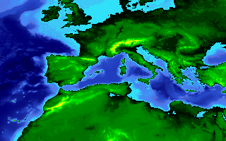

Open Geospatial Consortium Inc.
Date: 2010-04-06
Reference number of this document: OGC 07-057r7
Version: 1.0.0
Category: OpenGIS® Implementation Standard
Editors: Joan Masó, Keith Pomakis and Núria Julià
OpenGIS® Web Map Tile Service Implementation Standard
Copyright © 2010 Open Geospatial Consortium Inc.
To obtain additional rights of use, visit http://www.opengeospatial.org/legal/.
Warning
This document is an OGC Member approved international standard. This document is
available on a royalty free, non-discriminatory basis. Recipients of this document are
invited to submit, with their comments, notification of any relevant patent rights of which
they are aware and to provide supporting documentation..
Document type:
OpenGIS® Standard
Document subtype:
OGC Standard
Document stage:
Approved for release
Document language:
English
License Agreement
Permission is hereby granted by the Open Geospatial Consortium, ("Licensor"), free of charge and subject to the terms set forth below,
to any person obtaining a copy of this Intellectual Property and any associated documentation, to deal in the Intellectual Property
without restriction (except as set forth below), including without limitation the rights to implement, use, copy, modify, merge, publish,
distribute, and/or sublicense copies of the Intellectual Property, and to permit persons to whom the Intellectual Property is furnished to
do so, provided that all copyright notices on the intellectual property are retained intact and that each person to whom the Intellectual
Property is furnished agrees to the terms of this Agreement.
If you modify the Intellectual Property, all copies of the modified Intellectual Property must include, in addition to the above
copyright notice, a notice that the Intellectual Property includes modifications that have not been approved or adopted by LICENSOR.
THIS LICENSE IS A COPYRIGHT LICENSE ONLY, AND DOES NOT CONVEY ANY RIGHTS UNDER ANY PATENTS
THAT MAY BE IN FORCE ANYWHERE IN THE WORLD.
THE INTELLECTUAL PROPERTY IS PROVIDED "AS IS", WITHOUT WARRANTY OF ANY KIND, EXPRESS OR IMPLIED,
INCLUDING BUT NOT LIMITED TO THE WARRANTIES OF MERCHANTABILITY, FITNESS FOR A PARTICULAR
PURPOSE, AND NONINFRINGEMENT OF THIRD PARTY RIGHTS. THE COPYRIGHT HOLDER OR HOLDERS INCLUDED
IN THIS NOTICE DO NOT WARRANT THAT THE FUNCTIONS CONTAINED IN THE INTELLECTUAL PROPERTY WILL
MEET YOUR REQUIREMENTS OR THAT THE OPERATION OF THE INTELLECTUAL PROPERTY WILL BE
UNINTERRUPTED OR ERROR FREE. ANY USE OF THE INTELLECTUAL PROPERTY SHALL BE MADE ENTIRELY AT
THE USER’S OWN RISK. IN NO EVENT SHALL THE COPYRIGHT HOLDER OR ANY CONTRIBUTOR OF
INTELLECTUAL PROPERTY RIGHTS TO THE INTELLECTUAL PROPERTY BE LIABLE FOR ANY CLAIM, OR ANY
DIRECT, SPECIAL, INDIRECT OR CONSEQUENTIAL DAMAGES, OR ANY DAMAGES WHATSOEVER RESULTING
FROM ANY ALLEGED INFRINGEMENT OR ANY LOSS OF USE, DATA OR PROFITS, WHETHER IN AN ACTION OF
CONTRACT, NEGLIGENCE OR UNDER ANY OTHER LEGAL THEORY, ARISING OUT OF OR IN CONNECTION WITH
THE IMPLEMENTATION, USE, COMMERCIALIZATION OR PERFORMANCE OF THIS INTELLECTUAL PROPERTY.
This license is effective until terminated. You may terminate it at any time by destroying the Intellectual Property together with all
copies in any form. The license will also terminate if you fail to comply with any term or condition of this Agreement. Except as
provided in the following sentence, no such termination of this license shall require the termination of any third party end-user
sublicense to the Intellectual Property which is in force as of the date of notice of such termination. In addition, should the Intellectual
Property, or the operation of the Intellectual Property, infringe, or in LICENSOR’s sole opinion be likely to infringe, any patent,
copyright, trademark or other right of a third party, you agree that LICENSOR, in its sole discretion, may terminate this license
without any compensation or liability to you, your licensees or any other party. You agree upon termination of any kind to destroy or
cause to be destroyed the Intellectual Property together with all copies in any form, whether held by you or by any third party.
Except as contained in this notice, the name of LICENSOR or of any other holder of a copyright in all or part of the Intellectual
Property shall not be used in advertising or otherwise to promote the sale, use or other dealings in this Intellectual Property without
prior written authorization of LICENSOR or such copyright holder. LICENSOR is and shall at all times be the sole entity that may
authorize you or any third party to use certification marks, trademarks or other special designations to indicate compliance with any
LICENSOR standards or specifications.
This Agreement is governed by the laws of the Commonwealth of Massachusetts. The application to this Agreement of the United
Nations Convention on Contracts for the International Sale of Goods is hereby expressly excluded. In the event any provision of this
Agreement shall be deemed unenforceable, void or invalid, such provision shall be modified so as to make it valid and enforceable,
and as so modified the entire Agreement shall remain in full force and effect. No decision, action or inaction by LICENSOR shall be
construed to be a waiver of any rights or remedies available to it.
None of the Intellectual Property or underlying information or technology may be downloaded or otherwise exported or reexported in
violation of U.S. export laws and regulations. In addition, you are responsible for complying with any local laws in your jurisdiction
which may impact your right to import, export or use the Intellectual Property, and you represent that you have complied with any
regulations or registration procedures required by applicable law to make this license enforceable
ii
Copyright © 2012 Open Geospatial Consortium
OGC 07-057r7
Contents
Page
i.
Preface ................................................................................................................................... viii
iii. Submitting organizations ...................................................................................................... viii
iv. Document contributor contact points .................................................................................... viii
v. Revision history ...................................................................................................................... ix
vi. Changes to the OGC Abstract Specification ............................................................................ x
vii. Changes to OpenGIS® Implementation Standards ................................................................... x
viii. Future work .............................................................................................................................. x
Foreword ........................................................................................................................................ xi
Introduction ................................................................................................................................... xii
1
Scope ........................................................................................................................1
2
Compliance ..............................................................................................................1
3
Normative references ...............................................................................................1
4
Terms and definitions ..............................................................................................2
5
Conventions .............................................................................................................3
5.1
Abbreviated terms ...............................................................................................3
5.2
UML notation ......................................................................................................4
5.3
Used parts of other documents ............................................................................4
5.4
Platform-neutral and platform-specific standards ...............................................4
5.5
UML graphical and table representations ...........................................................4
6
WMTS overview ......................................................................................................6
6.1
Tile matrix set – the geometry of the tiled space ................................................7
6.2
Well-known scale sets .......................................................................................10
7
WMTS Implementation model ..............................................................................11
7.1
Service metadata ................................................................................................11
7.1.1
ServiceMetadata document ...........................................................................12
7.1.1.1 ServiceMetadata document description .....................................................12
7.1.1.2 ServiceMetadata document XML schema .................................................30
7.1.1.3 ServiceMetadata document example .........................................................31
7.1.2
GetCapabilities operation (mandatory in procedure oriented
architectural style) .........................................................................................36
7.1.2.1 GetCapabilities operation request ..............................................................36
7.1.2.2 GetCapabilites exceptions in procedure oriented architectural style .........38
ii
Copyright © 2010 Open Geospatial Consortium Inc.
OGC 07-057r7
7.1.3
ServiceMetadata resource request (mandatory in resource oriented
architectural style) .........................................................................................39
7.2
Tile .....................................................................................................................39
7.2.1
Tile resource..................................................................................................40
7.2.2
GetTile operation (mandatory in procedure oriented architectural style) .....40
7.2.2.1 GetTile operation request ...........................................................................40
7.2.2.2 GetTile exceptions in procedure oriented architectural style ....................43
7.2.3
Tile resource request (mandatory in resource oriented architectural
style) ..............................................................................................................44
7.3
FeatureInfo ........................................................................................................44
7.3.1
FeatureInfo document ...................................................................................44
7.3.2
GetFeatureInfo operation (optional in procedure oriented architectural
style) ..............................................................................................................45
7.3.2.1 GetFeatureInfo operation request ..............................................................45
7.3.2.2 GetFeatureInfo exceptions in procedure oriented architectural style ........47
7.3.3
FeatureInfo resource request (optional in resource oriented
architectural style) .........................................................................................49
7.4
Operation request encoding ...............................................................................49
8
WMTS using HTTP KVP encoding ......................................................................49
8.1
GetCapabilities ..................................................................................................50
8.1.1
GetCapabilities request HTTP KVP encoding .............................................50
8.1.2
GetCapabilities request HTTP KVP encoding example ...............................50
8.1.3
GetCapabilities HTTP KVP encoding response ...........................................50
8.1.4
GetCapabilities HTTP KVP encoding response example ............................50
8.2
GetTile ...............................................................................................................51
8.2.1
GetTile request HTTP KVP encoding ..........................................................51
8.2.2
GetTile request HTTP KVP encoding example ............................................51
8.2.3
GetTile HTTP KVP encoding response ........................................................52
8.2.4
GetTile HTTP KVP encoding response example .........................................52
8.3
GetFeatureInfo ...................................................................................................52
8.3.1
GetFeatureInfo request HTTP KVP encoding ..............................................52
8.3.2
GetFeatureInfo request HTTP KVP encoding example ...............................53
8.3.3
GetFeatureInfo HTTP KVP encoding response ...........................................53
8.3.4
GetFeatureInfo HTTP KVP encoding response example .............................53
8.4
Exceptions in HTTP KVP encoded operations .................................................54
9
WMTS using SOAP encoding ...............................................................................54
9.1
GetCapabilities ..................................................................................................54
9.1.1
GetCapabilities request SOAP encoding ......................................................54
9.1.2
GetCapabilities request SOAP encoding example ........................................54
9.1.3
GetCapabilities SOAP encoding response ....................................................54
9.1.4
GetCapabilities SOAP encoding response example .....................................55
9.2
GetTile ...............................................................................................................55
9.2.1
GetTile request SOAP encoding ...................................................................55
9.2.2
GetTile request SOAP encoding example ....................................................55
9.2.3
GetTile SOAP encoding response ................................................................56
9.2.4
GetTile SOAP encoding response example ..................................................56
9.3
GetFeatureInfo ...................................................................................................57
Copyright © 2010 Open Geospatial Consortium Inc.
iii
OGC 07-057r7
9.3.1
GetFeatureInfo request SOAP encoding .......................................................57
9.3.2
GetFeatureInfo request SOAP encoding example ........................................57
9.3.3
GetFeatureInfo SOAP encoding response ....................................................57
9.3.4
GetFeatureInfo SOAP encoding response example ......................................58
9.4
Exceptions in SOAP encoding ..........................................................................59
10
WMTS using RESTful ...........................................................................................60
10.1
ServiceMetadata resource (mandatory in resource oriented architectural
style) ..................................................................................................................61
10.1.1
GetResourceRepresentation request .............................................................61
10.1.2
GetResourceRepresentation request example ...............................................61
10.1.3
ServiceMetadata representation ....................................................................61
10.1.4
ServiceMetadata representation example .....................................................61
10.1.5
GetResourceRepresentation exception .........................................................61
10.2
Tile resource (mandatory in resource oriented architectural style) ...................62
10.2.1
GetResourceRepresentation request .............................................................62
10.2.2
GetResourceRepresentation request example ...............................................64
10.2.3
Tile representation ........................................................................................64
10.2.4
Tile representation example ..........................................................................64
10.2.5
GetResourceRepresentation exception .........................................................65
10.3
FeatureInfo resource (optional in resource oriented architectural style) ...........65
10.3.1
GetResourceRepresentation request .............................................................65
10.3.2
GetResourceRepresentation request example ...............................................68
10.3.3
FeatureInfo representation ............................................................................68
10.3.4
FeatureInfo representation as an XML document example ..........................68
10.3.5
GetResourceRepresentation exception .........................................................68
11
Recommendations to improve interoperability and performance. .........................68
11.1
Server and Client support for KVP, SOAP and RESTful .................................68
11.2
A standard set of scales .....................................................................................69
11.3
A standard image format and FeatureInfo document response .........................69
11.4
Number of TileMatrixSets and TileMatrixSetLimits ........................................69
11.5
Cacheble resources ............................................................................................69
Annex A (normative) Abstract test suite ..........................................................................71
A.1
Introduction .......................................................................................................71
A.2
Client test module ..............................................................................................72
A.3
Server test module .............................................................................................73
Annex B (normative) XML Schema Documents..............................................................86
Annex C (informative) UML model .................................................................................88
C.1
Introduction .......................................................................................................88
C.2
UML packages ..................................................................................................89
C.3
WMTS Service package ....................................................................................90
C.4
WMTS Get Capabilities, Contents and Themes packages ................................91
C.5
WMTS Get Tile package ...................................................................................94
C.6
WMTS Get Feature Info package .....................................................................96
iv
Copyright © 2010 Open Geospatial Consortium Inc.
OGC 07-057r7
Annex D (informative) Example XML documents ..........................................................98
D.1
Introduction .......................................................................................................98
D.2
ServiceMetadata response example ...................................................................98
Annex E (informative) Well-known scale sets ...............................................................102
E.1
GlobalCRS84Scale (urn:ogc:def:wkss:OGC:1.0:GlobalCRS84Scale) ...........102
E.2
GlobalCRS84Pixel (urn:ogc:def:wkss:OGC:1.0:GlobalCRS84Pixel) ............103
E.3
GoogleCRS84Quad (urn:ogc:def:wkss:OGC:1.0:GoogleCRS84Quad) .........104
E.4
GoogleMapsCompatible
(urn:ogc:def:wkss:OGC:1.0:GoogleMapsCompatible) ...................................105
Annex F (normative) WSDL description of the service .................................................106
F.1
General ............................................................................................................106
F.2
WSDL Publication ..........................................................................................106
F.3
Abstract and concrete WSDL documents .......................................................107
F.4
Abstract WMTS WSDL document .................................................................107
F.5
Concrete WMTS WSDL document ................................................................109
F.6
Concrete WMTS WSDL document example ..................................................109
Annex H (informative) Pseudocode................................................................................112
H.1
From BBOX to tile indices ..............................................................................112
H.2
From tile indices to BBOX ..............................................................................112
Bibliography ................................................................................................................................ 114
Figures
Page
Figure 1 — WMTS interface UML diagram ................................................................................... 7
Figure 2 — Tile Space ..................................................................................................................... 9
Figure 3 — Tile Matrix Set representation .................................................................................... 10
Figure 4 — ServiceMetadata UML model .................................................................................... 12
Figure 5 — Contents UML model ................................................................................................. 16
Figure 6 — Layer UML model ..................................................................................................... 18
Figure 7 — Optional TileMatrix Limits ........................................................................................ 25
Figure 8 — TileMatrixSet UML model ........................................................................................ 25
Figure 9 — Themes UML model .................................................................................................. 29
Figure 10 — GetTile operation request UML class diagram ........................................................ 41
Figure 11 — GetFeatureInfo operation request UML class diagram ............................................ 46
Figure 12 — GetTile response example ........................................................................................ 52
Figure 13 — URLTemplate for tile UML class diagram .............................................................. 62
Figure 14 — URLTemplate for the FeatureInfo UML class diagram ........................................... 65
Copyright © 2010 Open Geospatial Consortium Inc.
v
OGC 07-057r7
Figure C.1 — WMTS interface UML diagram ............................................................................. 88
Figure C.2 — WMTS interface package diagram ......................................................................... 89
Figure C.3 — WMTS Service package class diagram .................................................................. 90
Figure C.4 — Get Capabilities package class diagram, part 1 ...................................................... 91
Figure C.5 — Get Capabilities package class diagram, part 2 ...................................................... 92
Figure C.6 — Get Capabilities package class diagram, part 3 ...................................................... 93
Figure C.7 — Get Tile package class diagram .............................................................................. 94
Figure C.8 — Get Feature Info package class diagram ................................................................. 96
Tables
Page
Table 1 — Contents of data dictionary tables ................................................................................. 5
Table 2 —ServiceMetadata sections ............................................................................................. 13
Table 3 — Parts of the Capabilities data structure ........................................................................ 13
Table 4 — Values of OperationsMetadata section parameters ..................................................... 14
Table 5 — Parts of the Contents section ....................................................................................... 17
Table 6 — Parts of Layer data structure ........................................................................................ 19
Table 7 — Parts of Style data structure ......................................................................................... 20
Table 8 — Parts of LegendURL data structure ............................................................................. 21
Table 9 — Parts of Dimension data structure................................................................................ 22
Table 10 — Parts of TileMatrixSetLink data structure ................................................................. 23
Table 11 — Parts of TileMatrixSetLimits data structure .............................................................. 24
Table 12 — Parts of TileMatrixLimits data structure ................................................................... 24
Table 13 — Parts of TileMatrixSet data structure ......................................................................... 26
Table 14 — Parts of TileMatrix data structure .............................................................................. 27
Table 15 — Parts of the Themes section ....................................................................................... 29
Table 16 — Parts of Theme data structure .................................................................................... 29
Table 17 — Parameters in GetCapabilities operation request ....................................................... 36
Table 18 — Meaning of section name values ............................................................................... 37
Table 19 — Implementation of parameters in GetCapabilities operation request ........................ 37
Table 20 — Exception codes for GetCapabilities operation ......................................................... 38
Table 21 — HTTP exception codes and meanings on GetCapabilities operation ........................ 39
Table 22 — Parameters in GetTile operation request ................................................................... 42
Table 23 — Exception codes for GetTile operation ...................................................................... 43
Table 24 — HTTP exception codes and meanings on GetTile operation ..................................... 43
vi
Copyright © 2010 Open Geospatial Consortium Inc.
OGC 07-057r7
Table 25 — Parameters in GetFeatureInfo operation request ....................................................... 47
Table 26 — Exception codes for GetFeatureInfo operation .......................................................... 48
Table 27 — HTTP exception codes and meanings on GetFeatureInfo operation ......................... 48
Table 28 — Procedure oriented architectural style operation request encoding ........................... 49
Table 29 — GetTile operation request URL parameters ............................................................... 51
Table 30 — GetFeatureInfo operation request URL parameters................................................... 52
Table 31 — Parts of the URLTemplate data structure for tiles ..................................................... 62
Table 32 — URL template variables and possible values for tile ................................................. 63
Table 33 — Parts of the URLTemplate data structure for FeatureInfo ......................................... 65
Table 34 — URL template variables and possible values for FeatureInfo .................................... 66
Table C.1 — Mapping of UML TileRequest attributes and HTTP GetTile request parameters ... 95
Table C.2 — Mapping of UML FeatureInfoRequest attributes and HTTP GetFeatureInfo request
parameters .............................................................................................................................. 97
Table E.1 — Definition of Well-known scale set GlobalCRS84Scale ....................................... 102
Table E.2 — Definition of Well-known scale set GlobalCRS84Pixel ........................................ 103
Table E.3 — Definition of Well-known scale set GoogleCRS84Quad....................................... 104
Table E.4 — Definition of Well-known scale set GoogleMapsCompatible ............................... 105
Copyright © 2010 Open Geospatial Consortium Inc.
vii
OGC 07-057r7
i.
Preface
This document defines an OGC standard for a Web Map Tile Service (WMTS) interface
standard. A WMTS enabled server application can serve map tiles of spatially referenced
data using tile images with predefined content, extent, and resolution.
Suggested additions, changes and comments on this standard are welcome and
encouraged. Such suggestions may be submitted using the online change request form on
OGC web site: http://portal.opengeospatial.org/public_ogc/change_request.php
ii.
Standard verbs and usages
This document uses the standard verbs defined in subclause 5.3 of [OGC 06-121r3],
which is based on the ISO/IEC Directives, Part 2. Rules for the structure and drafting of
International Standards that are also included in subclause 6.1 of [OGC 06-135r7] Policy
Directives for Writing and Publishing OGC Standards. In particular, the word "SHALL"
(in capital letters and not "must") is the verb form used to indicate a requirement to be
strictly followed to conform to this standard.
iii.
Submitting organizations
The following organizations submitted this document to the Open Geospatial Consortium
Inc.
Autonomous University of Barcelona
CREAF
CubeWerx Inc.
iv.
Document contributor contact points
All questions regarding this document should be directed to the editor or the contributors:
Name
Organization
E-mail Address
Joan Masó
UAB-CREAF
joan.maso@uab.cat
Keith Pomakis
CubeWerx Inc.
pomakis@cubewerx.com
Núria Julià
UAB-CREAF
n.julia@creaf.uab.cat
viii
Copyright © 2010 Open Geospatial Consortium Inc.
OGC 07-057r7
v.
Revision history
Date
Release
Editor
Primary
Description
clauses
modified
2007-05-08 07-057
Joan Masó and
First draft as a discussion paper in the
Núria Julià
WMS.RWG
2007-06-15 07-057r1
Joan Masó
Corrections proposed mainly by Dimitri Monie
and Benjamin Chartier.
2007-08-14 07-057r2
Keith Pomakis
Merged OGC 07-057r1 and OGC 07-085r1
into a unified document.
2007-11-13 07-057r3
Keith Pomakis
Now proposes Web Map Tiling Service as a
separate service rather than as a profile of
WMS; introduced GetLegendGraphic and
GetAlternateSources operations.
2008-03-25 07-057r4
Keith Pomakis
Several modifications proposed mainly by
Chuck Morris and Joan Masó.
2008-06-15 07-057r5
Joan Masó
Reformated as a Standards document.
GetLegendGraphic and GetAlternateSources
operations were removed. RESTful was
introduced. Major revisions by Benjamin
Chartier and Keith Pomakis.
2009-01-25
Joan Masó
Many considerations in Keith Pomakis OGC
09-006 OWS-6-DSS Engineering Report –
SOAPXML and REST in WMTS have been
included.
2009-02-26 07-057r6
Joan Masó
Added WSDL annex F and general minor
corrections.
2009-08-11 07-057r7
Joan Masó
CRs in RFC period have been incorporated.
URL template has been introduced. Name
changes from "Web Map Tiling Service" to
"Web Map Tile Service". Major revision by
Nuke Goldstein, Herve Caumont, Satish
Sankaran, Lacey Sharpe and Xavier Pons.
2010-02-01
Adrian Custer
Adrian Custer deeply detailed revision on
and Joan Masó
grammar and general consistency.
2010-02-14
Carl Reed
Additional edits in preparation for publication
as an OGC standard.
2010-03-09
Adrian Custer
Grammar and general consistency last details.
and Joan Masó
MIME type correction following 09-144r1.
Copyright © 2010 Open Geospatial Consortium Inc.
ix
OGC 07-057r7
vi.
Changes to the OGC Abstract Specification
The OpenGIS® Abstract Specification does not require changes to accommodate the
technical contents of this standard.
vii.
Changes to OpenGIS® Implementation Standards
This document defines an OGC implementation standard called "OpenGIS® Web Map
Tile Service Implementation Standard". This standard references the OGC Web Services
Common Specification, version 1.1.0 (with Corrigendum 1). No other implementation
standard should be affected.
viii.
Future work
Add support for OWS Common 1.2 (approved late 2009). Several additions planned in
OWS Common 1.2 [06-121r8] could potentially impact this standard and need to be
evaluated.
Follow future guidance for resource oriented architectural (ROA) style that is expected to
be defined in future versions of OWS Common.
x
Copyright © 2010 Open Geospatial Consortium Inc.
OGC 07-057r7
Foreword
The Web Map Tile Service (WMTS) described in this standard builds on earlier efforts to
develop scalable, high performance services for web based distribution of cartographic
maps. WMTS is inspired by the OSGeo Tile Map Service Specification (available at
http://wiki.osgeo.org/index.php/Tile_Map_Service_Specification). The team that worked
on this standard also considered similar initiatives, such as Google maps and NASA
OnEarth. This OGC standard includes both resource (RESTful approach) and procedure
oriented architectural styles (KVP and SOAP encoding) in an effort to harmonize this
interface standard with the OSGeo specification.
WMTS complements earlier efforts to develop services for the web based distribution of
cartographic maps. The OGC WMTS provides a complementary approach to the OGC
Web Map Service (WMS) for tiling maps. WMS focuses on rendering custom maps and
is an ideal solution for dynamic data or custom styled maps (combined with the OGC
Style Layer Descriptor (SLD) standard). WMTS trades the flexibility of custom map
rendering for the scalability possible by serving of static data (base maps) where the
bounding box and scales have been constrained to discrete tiles. The fixed set of tiles
allows for the implementation of a WMTS service using a web server that simply returns
existing files. The fixed set of tiles also enables the use of standard network mechanisms
for scalability such as distributed cache systems.
This standard has been structured as a stand alone standard (relying on OpenGIS Web
Service Common Implementation Specification OGC 06-121r3 as a base document) but
shares many concepts with the WMS 1.3.0.
This document replaces any previous versions of OGC 07-057 that were released as OGC
Discussion Papers.
This document includes 7 annexes; Annexes A, B and F are normative, and Annexes C,
D E and G are informative.
Attention is drawn to the possibility that some of the elements of this document may be
the subject of patent rights. The Open Geospatial Consortium Inc. shall not be held
responsible for identifying any or all such patent rights.
Recipients of this document are requested to submit, with their comments, notification of
any relevant patent claims or other intellectual property rights of which they may be
aware that might be infringed by any implementation of the standard set forth in this
document, and to provide supporting documentation.
Copyright © 2010 Open Geospatial Consortium Inc.
xi
OGC 07-057r7
Introduction
This Web Map Tile Service (WMTS) Implementation Standard provides a standard based
solution to serve digital maps using predefined image tiles. The service advertises the
tiles it has available through a standardized declaration in the ServiceMetadata document
common to all OGC web services. This declaration defines the tiles available in each
layer (i.e. each type of content), in each graphical representation style, in each format, in
each coordinate reference system, at each scale, and over each geographic fragment of
the total covered area. The ServiceMetadata document also declares the communication
protocols and encodings through which clients can interact with the server. Clients can
interpret the ServiceMetadata document to request specific tiles.
The WMTS standard complements the existing Web Map Service standard of the OGC.
The WMS standard focuses on flexibility in the client request enabling clients to obtain
exactly the final image they want. A WMS client can request that the server creates a
map by overlaying an arbitrary number of the map layers offered by the server, over an
arbitrary geographic bound, with an arbitrary background color at an arbitrary scale, in
any supported coordinate reference system. The client may also request that the map
layers be rendered using a specific server advertised style or even use a style provided by
the client when the WMS server implements the OGC Styled Layers Descriptor (SLD)
standard. However, all this flexibility comes at a price: server image processing must
scale with the number of connected clients and there is only limited potential to cache
images between the server and client since most images are different.
As web service clients have become more powerful, it has become possible to consider
an alternative strategy which forces the clients to perform image overlays themselves and
which limits the clients to requesting map images which are not at exactly the right
position thereby forcing the clients to mosaic the tiles obtained from the server and clip
the set of tiles into a final image. This restriction of image requests to a fixed, predefined
set allows for servers to scale based on communication processing abilities rather than
image processing abilities because servers can prerender some or all of their images and
can use image caching strategies. The fixed set of images also enables network providers
to cache images between the client and the server, reducing latency and bandwidth use.
Popular, non standardized, commercial implementations of this approach, such as Google
Maps, Microsoft Virtual Earth and Yahoo! Maps have already shown that there are clear
performance benefits to adopting this methodology.
Some WMS servers have already embarked on this road, developing their own tiling
structures built by constraining WMS GetMap requests to a fixed set and then advertising
those constraints in their service metadata. Although this mechanism enables those
servers to scale as just described, the tiling structure and the advertising and discovery
mechanisms are not standardized. That unfortunately limits interoperability and forces
developers to build, for each server, special clients that can understand the server
advertised constraints and limit the WMS GetMap requests issued by the client to exactly
xii
Copyright © 2010 Open Geospatial Consortium Inc.
OGC 07-057r7
the requests understood by the particular server. This WMTS standard offers a
standardized approach to declaring the images which a client can request from a server,
enabling a single type of client to be developed for all servers. While developing a profile
of WMS was initially considered, limiting a WMS in the ways important to allow
efficient access to cacheable tiles proved awkward while forcing implementors to read
both a standard and a profile seemed less efficient than developing this stand alone
specification.
This standard specifies WMTS in two stages. First, an abstract specification describes the
semantics of the resources offered by the servers and requested by the client. This
abstract definition specifies the semantics of the ServiceMetadata document, of the Tile
images or representations, and of the optional FeatureInfo documents providing
descriptions of the maps at specific locations. Second, this standard specifies several
different concrete exchange mechanisms between clients and servers in two different
architectural styles. The standard defines the GetCapabilities, GetTile and optional
GetFeatureInfo operations for procedure oriented architectural style based approaches
using several different message encodings, including messages encoded using Key-Value
Pairs (KVP), XML messages, or XML messages embedded in SOAP envelopes. The
standard also defines the request mechanisms and endpoint publishing strategy to enable
a resource oriented architectural style based on web based URL endpoints allowing
clients to simply request the ServiceMetadata, Tile, and FeatureInfo resources as
documents.
This resource oriented architecture style is new to the OGC but offers key advantages in
ease of deployment, scalability and network effects of OGC web services. The RESTful
pattern provides the ability to set up conformant WMTS servers simply. If all the images
are prerendered, a WMTS server could even be created using no image processing logic
at all but relying only on a normal web server to return the static ServiceMetadata XML
document and provide the image tile files. This is important for deployment purposes as
many Internet service providers (especially the free ones) allow web pages and static
content hosting but do not allow using CGI, ASP, or more advanced applications for
security reasons. The RESTful approach therefore enables small organizations to provide
geographic data using readily available services or simple web server configurations.
This approach also scales dramatically since the issues of serving fixed resources in high
volumes have been continuously tackled over the past decades. Finally, this approach can
benefit from network scaling effects since the images are considered by the HTTP
protocol to be standard web resources and network providers can leverage their existing
technologies to improve the flow of those resources to requesting clients.
Copyright © 2010 Open Geospatial Consortium Inc.
xiii
OpenGIS® Implementation Standard
OGC 07-057r7
OpenGIS® Web Map Tile Service Implementation Standard
1 Scope
This OGC® document specifies an interface standard called "OpenGIS® Web Map Tile
Service Implementation Standard" (WMTS).
This OGC® document is applicable to servers and clients that can serve and consume
rendered tile maps. It can be combined with other OGC standards and also integrated
with the emerging RESTful applications and "mash-ups".
2 Compliance
Compliance with this standard SHALL be checked using all the relevant tests specified in
Annex A (normative).
3 Normative references
The following normative documents contain provisions that, through reference in this
text, constitute provisions of this document. For dated references, subsequent
amendments to, or revisions of, any of these publications do not apply. For undated
references, the latest edition of the normative document referred to applies.
ISO 19105:2000, Geographic information — Conformance and Testing
OGC 06-121r3, OpenGIS® Web Services Common Specification, version 1.1.0 with
Corrigendum 1, Arliss Whiteside, ed.,
NOTE
This OWS Common Specification contains a list of normative references that are also
applicable to this Implementation Specification.
W3C SOAP Version 1.2 Part 1: Messaging Framework, W3C Recommendation 24 June
2003,
W3C SOAP 1.2 Attachment Feature, W3C Working Group Note 8 June 2004,
W3C Web Services Description Language (WSDL) 1.1, W3C Note 15 March 2001,
In addition to this document, this standard includes, as normative, several XML Schema
Document files as described in Annex B.
Copyright © 2010 Open Geospatial Consortium Inc.
1
OGC 07-057r7
4 Terms and definitions
For the purposes of this standard, the definitions specified in clause 4 of the OWS
Common Implementation Specification [OGC 06-121r3] and SHALL apply. In addition,
the following terms and definitions apply.
4.1
coordinate reference system
coordinate system that is related to the real world by a datum
4.2
coordinate system
set of mathematical rules for specifying how coordinates are to be assigned to points
4.3
feature
abstraction of a real world phenomenon
4.4
feature info
information related to a particular pixel of a map that refers to the geographic data
portrayed on that area
4.5
layer
basic unit of geographic information that may be requested as a map from a server
4.6
map
portrayal of geographic information as a digital image file suitable for display on a
computer screen
4.7
portrayal
graphical presentation of information to humans
4.8
procedure oriented architectural style
platform-independent design approach that is focused on operations, their parameters and
their results, that can be defined in an abstract level specification. Concrete platform-
dependent specifications can be derived from the abstract level, allowing, for example,
KVP or SOAP messaging.
4.9
resource oriented architectural style
platform-independent design approach that is focused on resources, representations and
actions, that can be defined in an abstract level specification. Concrete platform-
dependent specifications can be derived form the abstract level, allowing, for example, a
RESTful architecture.
2
Copyright © 2010 Open Geospatial Consortium Inc.
OGC 07-057r7
4.10
theme
a group layers that can be nested hierarchically
4.11
tile
a rectangular pictorial representation of geographic data, often part of a set of such
elements, covering a spatially contiguous extent and sharing similar information content
and graphical styling, which can be uniquely defined by a pair of indices for the column
and row along with an identifier for the tile matrix.
4.12
tile matrix
a collection of tiles for a fixed scale
4.13
tile matrix set
a collection of tile matrices defined at different scales
5 Conventions
5.1
Abbreviated terms
Most of the abbreviated terms listed in subclause 5.1 of the OWS Common
Implementation Specification [OGC 06-121r3] apply to this document, plus the following
abbreviated terms.
ASP
Active Server Pages
CGI
Common Gateway Interface
JPEG
Joint Photographic Experts Group (image format)
JPIP
JPEG 2000 Interactive Protocol
PNG
Portable Network Graphics (image format)
REST
Representational State Transfer
SLD
Styled Layer Descriptor
SOAP
Simple Object Access Protocol
WMTS
Web Map Tile Service
WSDL
Web Services Description Language
Copyright © 2010 Open Geospatial Consortium Inc.
3
OGC 07-057r7
5.2
UML notation
Most diagrams that appear in this standard are presented using the Unified Modeling
Language (UML) static structure diagram, as described in subclause 5.2 of OWS
Common [OGC 06-121r3].
5.3
Used parts of other documents
This document uses significant parts of document [OGC 06-121r3], herein referred to as
"OWS Common". To reduce the need to refer to that document, this document copies
some of those parts with small modifications. In tables and figures, to indicate those parts
to readers of this document, the largely copied parts are shown with a light grey 15%
background.
5.4
Platform-neutral and platform-specific standards
As specified in clause 10 of OGC Abstract Specification Topic 12 ―OpenGIS Service
Architecture‖ (which contains ISO 19119), this document includes both Distributed
Computing Platform-neutral and platform-specific standards. This document first
specifies the resources in each operation request and response in platform-neutral fashion.
This is done using a table for each data structure, which lists and defines the parameters
and other data structures contained. These tables serve as data dictionaries for the UML
model in Annex C, and thus specify the UML model data type and multiplicity of each
listed item.
NOTE 1
Platform-neutral standards are contained in clause 7.
The specified platform-neutral data could be encoded in many alternative ways, each
appropriate to one or more specific Distributed Computing Platform. This document
currently specifies encodings appropriate for HTTP GET transfer of operations requests
(using KVP or RESTful encodings), and for HTTP POST transfer of operations requests
(using XML or SOAP encodings). However, the same operation requests and responses
(and other data) could be encoded for other specific computing platforms, including
HTTP POST transfer of raw XML requests.
NOTE 2
Platform-specific standards for KVP, SOAP and RESTful are contained in clause 8, 9 and 10
respectively.
5.5
UML graphical and table representations
The UML model data is specified herein in a series of tables, called data dictionary
tables. The contents of the columns in these tables are described in Table 1.
4
Copyright © 2010 Open Geospatial Consortium Inc.
OGC 07-057r7
Table 1 — Contents of data dictionary tables
Column title
Column contents
Names
Two names for each included parameter or association (or data structure).
(left column)
The first name is the UML model attribute or association role name.
The second name is the XML encoding of the parameter name. It is shown in
monospaced font.
Some names in the tables may appear to contain spaces, but no names contain
spaces.
Definition
Specifies the definition of this parameter (omitting un-necessary words such as
(second column)
―a‖, ―the‖, and ―is‖). If the parameter value is the identifier of something, not
a description or definition, the definition of this parameter reads something
like ―Identifier of …‖.
Data type and values The first item is the data type used for this parameter, using data types or a data
(third column)
structure appropriate in a UML model, in which this parameter is a named
attribute of a UML class. Alternately, the first item can identify the data
structure (or class) referenced by this association, or references a separate
table used to specify the contents of that class (or data structure).
The second item indicates the source of values for this parameter, the
alternative values, or other value information, unless the values are quite clear
from other listed information.
Multiplicity and use
The first item specifies the multiplicity and optionally of this parameter in this
(right or fourth
data structure, either ―One (mandatory)‖, ―One or more (mandatory)‖, ―Zero
column)
or one (optional)‖, or ―Zero or more (optional)‖.
The second item specifies how any multiplicity other than ―One (mandatory)‖
will be used.
When the data type used for this parameter, specified in the third column of such a table
is an enumeration or code list, all the values specified by this document are listed,
together with the meaning of each value. When this information is extensive, these values
and meanings are specified in a separate table that is referenced in the third column of the
table row where the parameter is defined.
NOTE
Several parameters have their data type specified in the third table column as ―Character String
type, not empty‖. In the XML Schema Documents specified herein, these parameters are encoded with the
xsd:string type, an XML type which does not require that these strings not be empty. Nonetheless, the
injunction of the table SHALL prevail and the element SHALL not be empty
The contents of these data dictionary tables are normative, including any table footnotes.
Particularly, the ―Multiplicity and use‖ columns in Table 6 through Table 16 in OWS
Common [OGC 06-121r3], and in Table 2, 3 and Table 5 through Table 16 of this
document, specify the optionality of each listed parameter and data structure in the
ServiceMetadata document. Also, ―Multiplicity and use‖ columns of this document in
Table 22 specify the optionality of each listed parameter and data structure in the GetTile
operation request and in Table 25 specify the optionality of each listed parameter and
data structure in the GetFeatureInfo operation request. All the ―mandatory‖ parameters
and data structures SHALL be implemented by all WMTS clients, using a specified
value(s). Similarly, all the ―mandatory‖ parameters and data structures SHALL be
implemented by all WMTS servers, checking that each request parameter or data
structure is received with the specified value(s). All the ―optional‖ parameters and data
structures in the operation requests SHOULD be implemented by all WMTS clients using
Copyright © 2010 Open Geospatial Consortium Inc.
5
OGC 07-057r7
specified values, for each implemented layer to which that parameter or data structure
applies. Similarly, all the ―optional‖ parameters and data structures SHALL be
implemented by all WMTS servers, for each implemented layer to which that parameter
or data structure is declared to apply by the server in the ServiceMetadata document.
6 WMTS overview
The goal of providing a WMTS enabled service is to be performance oriented and
scalable. Therefore, servers must be able to return tiles quickly. A good way to achieve
that is to use locally stored pre-rendered tiles that will not require any image
manipulation or geo-processing. Server developers will decide if pre-rendered tiles will
be generated in a previous tile-preparation process or generated on the fly utilizing a
caching mechanism. With tile-based mapping it is important that the server will be able
to handle asynchronous access to tiles as most clients will simultaneously query for
multiple tiles to fill a single view.
The purpose of a WMTS service is to serve maps divided in individual tiles.
The WMTS interface allows a client to receive three types of resources either in response
to a resource request in the resource oriented architectural style or in response to an
operation in the procedure oriented architectural style. Those resources and operations
are:
a) A ServiceMetadata resource (in response to a GetCapabilities operation for the
procedure oriented architectural style) (required implementation by servers) – It
describes the abilities and information holdings of the specific server
implementation. In procedure oriented architectural style this operation also supports
negotiation of the standard version being used for client-server interactions.
b) A tile resource (in response to a GetTile operation for the procedure oriented
architectural style) (required implementation by servers) – It shows a fragment of a
map representation of a layer.
c) A FeatureInfo resource (in response to a GetFeatureInfo operation for the procedure
oriented architectural style) (optional implementation by servers) – It provides
information about the features located at a particular pixel of a tile map, in a similar
way to the WMS GetFeatureInfo operation, by providing, for example, the thematic
attribute name and value pairs in textual form.
These operations have many similarities to other OGC Web Services (OWS), including
the Web Map Service (WMS), Web Feature Service (WFS), and Web Coverage Service
(WCS). Many of the aspects of this WMTS interface that are shared in common with
other OWSs are specified in the OpenGIS® Web Services Common Implementation
Specification [OGC 06-121r3]. Many of these common aspects are included normatively
by reference to that document, instead of being repeated in this standard.
6
Copyright © 2010 Open Geospatial Consortium Inc.
OGC 07-057r7
Figure 1 is a simple UML diagram summarizing the WMTS interface for the procedure
oriented architectural style. This class diagram shows that the WMTS interface class
inherits the getCapabilities operation from the OGCWebService interface class, and adds
the getTile and getFeatureInfo operations. (This capitalization of names uses the
OGC/ISO profile of UML.) A more complete UML model of the WMTS interface is
provided in Annex C (informative).
<<Interface>>
OGCWebService {Abstract}
(from OGC Web Service)
+ getCapabilities(request : GetCapabilities) : ServiceMetadata
WMTService
+ getTile(request : GetTile) : Tile Response
+ getFeatureInfo(request : GetFeatureInfo) : FeatureInfo Response
Each server instance conceptually instantiates only one object
of this class, and this object always exists while server is
available
Figure 1 — WMTS interface UML diagram
NOTE
In this UML diagram, the request and response for each operation is shown as a single
parameter that is a data structure containing multiple lower-level parameters, which are discussed in
subsequent clauses. The UML classes modeling these data structures are included in the complete UML
model in Annex C.
The WMTS serves a single tile of a single layer of a map. Unlike WMS, there is no
specified way to request a server to combine and return a map tile with information
coming from more than one layer in a single fetching process. WMTS clients that want to
show a combination of layers must make independent requests for the layer tiles and then
combine or overlay the responses. Also bounding boxes and scales of these WMTS tiles
are constrained to a discrete set of values.
6.1
Tile matrix set – the geometry of the tiled space
In a tiled map layer, the representation of the space is constrained in a discrete set of
parameters. A tile matrix set defines these parameters. Each tile matrix set contains one
or more "tile matrices" defining the tiles that are available for that coordinate reference
system. Each tile matrix specifies:
Copyright © 2010 Open Geospatial Consortium Inc.
7
OGC 07-057r7
a) The scale of the tiles as a scale denominator.
The scale denominator is defined with respect to a "standardized rendering pixel size" of
0.28 mm × 0.28 mm (millimeters). The definition is the same used in WMS 1.3.0 [OGC
06-042] and in Symbology Encoding Implementation Specification 1.1.0 [05-077r4].
Frequently, the true pixel size is unknown and 0.28 mm is a common actual size for
current displays.
b) The width and height of each tile in pixels.
c) The top left (minimum x, maximum y) corner of the bounding box of the tile matrix
(i.e., the CRS coordinates of the top left corner of the top left pixel of the top left tile).
d) The width and height of the tile matrix in tile units (i.e., number of tiles).
The number of tile matrix sets that a WMTS server serves for a particular layer is:
nTileMatrices × nTiledStyles × nTiledFormats
if no dimensions are defined or:
nTileMatrices × nTiledStyles × nTiledFormats × nTiledDimensions
if dimensions are defined. The number of distinct tiles within each tile matrix of a tile
matrix set (i.e., for a particular scale within a tile-matrix set) is a product of:
matrixWidth × matrixHeight
Each tile matrix set defines its own set of scale levels corresponding with the contained
tile matrices. Each layer references one or more tile matrix sets. Although each layer
could reference a different tile matrix set, it is likely that a server will offer many layers
with the same tile matrix set reference.
A tile matrix set is composed of a collection of tile matrices, each one with a resolution
optimized for a particular scale and identified by a tile matrix identifier (see figure 3).
Each tile matrix set has an optional approximated bounding box but each tile matrix has
an exact bounding box that is deduced indirectly from other parameters. Tile matrix
bounding boxes at each scale will usually vary slightly due to pixel alignment, and it is
important for the client and server to take this variation into account. Given the top left
point of the tile matrix in CRS coordinates (tileMatrixMinX, tileMatrixMaxY), the width
and height of the tile matrix in tile units (matrixWidth, matrixHeight), the width and
height of a tile in pixels (tileWidth, tileHeight), the coefficient to convert the coordinate
reference system (CRS) units into meters (metersPerUnit) and the scale
(1:scaleDenominator), the bottom right corner of the bounding box of a tile matrix
(tileMatrixMaxX, tileMatrixMinY) can be calculated as follows:
pixelSpan = scaleDenominator × 0.28 10-3 / metersPerUnit(crs);
tileSpanX = tileWidth × pixelSpan;
8
Copyright © 2010 Open Geospatial Consortium Inc.
OGC 07-057r7
tileSpanY = tileHeight × pixelSpan;
tileMatrixMaxX = tileMatrixMinX + tileSpanX × matrixWidth;
tileMatrixMinY = tileMatrixMaxY - tileSpanY × matrixHeight;
The tile space therefore looks like this:
TileMatrixMinX
Tile indices
TopLeftCorner
TileMatrixMaxX
(TileCol,TileRow)
TileMatrixMaxY
TileCol axis
0,0
1,0
...
MatrixWidth-1,0
0,1
1,1
...
MatrixWidth-1,1
...
...
...
...
0,
1,
...
MatrixWidth-1,
TileHeight
MatrixHeight-1 MatrixHeight-1
MatrixHeight-1
(in pixels)
TileMatrixMinY
TileWidth
TileRow axis
(in pixels)
Figure 2 — Tile Space
Each tile in a tile matrix is identified by its TileCol and TileRow indices that have their
0,0 origin in the tile next to the top left corner of the tile matrix and that increases
towards the right and towards the bottom respectively, as shown in figure 2. Annex H in
this document includes pseudo code that illustrates the process for obtaining the tile
indices that cover a bounding box rectangle and also the computation to get the CRS
coordinates that bound a tile.
NOTE 1
Non-square pixels are not supported. This is different from WMS, which does allow non-
square pixels (although many implementations fail to support this properly).
A tiled layer links to its tile matrix set through a tileMatrixSet URI that points to a
TileMatrixSet section that completely defines it as previously explained. A layer can use
a specific TileMatrixSet that describes a region adjusted to the actual content of this
layer. In this case, the optional tileMatrixSetLimits section will not be used and changes
in spatial extension of the layer can affect the minimum bounding box of the layer
forcing to redefine the TopLeftCorner of each TileMatrix and that will end up changing
the TileCol,TileRow indices thereby invalidating any previously cached tile. To
Copyright © 2010 Open Geospatial Consortium Inc.
9
OGC 07-057r7
overcome this problem a layer can optionally use a more generic TileMatrixSet that
covers a bigger (or even global) area. In fact, that TileMatrixSet will define an area that
could be covered by the layer in a future and could easily be shared for many layers in
this server. To inform the client about the valid range of the TileCol and Tile Row indices
a layer definition can optionally use the tileMatrixSetLimits section that specifies a
minimum and a maximum that are limits of these indices for each TileMatrix. Any
request outside these limits will result in a server exception (see Figure 6).
Coarse resolution
Highest scale denominator
Detailed resolution
Lowest scale denominator
Figure 3 — Tile Matrix Set representation
In some other standards, this way of dividing the space is called image pyramid like in
clause 11.6 of the KML 2.2 [OGC 07-147r2]. JPEG2000 (ISO/IEC 15444-1) and JPIP
(ISO/IEC 15444-9) also use a similar division of the space called resolution levels.
Nevertheless, in those cases the pyramid is self defined starting from the more detailed
tile matrix that uses square tiles, and constructing tiles of the next scales by successively
aggregating 4 tiles of the previous scale and so on. That approach involves a more rigid
structure which has scales related by powers of two and tiles that perfectly overlap tiles
on the inferior scale denominators. Since WMTS is more flexible, KML superoverlays or
JPEG2000 based implementations can still use WMTS to describe their tile matrix sets
and to serve tiles. Annex E.3 and E.4 describe scale sets related by powers of two.
Each of the WMTS procedure oriented architectural style operations and resource
oriented architectural style resources are described in more detail in subsequent clauses.
NOTE 2 Clients and servers have to be careful when comparing floating numbers with tolerance (double
precision, 16 digit numbers, has to be used).
6.2
Well-known scale sets
Since a WMTS server will serve its data in a limited number of coordinate systems and
scales (because, unlike a WMS, it serves only pre-defined tiles), and since some simple
10
Copyright © 2010 Open Geospatial Consortium Inc.
OGC 07-057r7
WMTS client will be unable to perform coordinate-system transformations or rescaling
of tiles, the ability for a WMTS client to overlay tiles from one server on top of tiles from
other servers will be limited unless there are some general agreements among WMTS
servers as to what constitutes a common coordinate reference system and a common set
of scales. Thus, this standard defines the concept of well-known scale sets. In order to
increase interoperability between clients and servers it is recommended that many layers
use a common set of scales in the same CRS that the target community agree to use.
A well-known scale set is a well-known combination of a coordinate reference system
and a set of scales that a tile matrix set declares support for. Each tile matrix set
references one well-known scale set. A client application can confirm that tiles from one
WMTS server are compatible with tiles from another WMTS server merely by verifying
that they declare a common well-known scale set. It may also be the case that a client
application is limited to supporting a particular coordinate system and set of scales (e.g.,
an application that overlays WMTS tiles on top of Google Maps tiles). In this situation, a
client application can accept or reject a WMTS as being compatible merely by verifying
the declared well-known scale set. Furthermore, the existence of well-known scale sets
provides incentive for WMTS servers to support a well-known scale set, increasing the
odds of compatibility with other WMTS sources. The informative Annex E provides
several well-known scale sets and others could be incorporated in the future.
A tile matrix set conforms to a particular well-known scale set when it uses the same
CRS and defines all scale denominators ranging from the largest scale denominator in the
well-known scale set to some low scale denominator (in other words, it is not necessary
to define all the lower scale denominators to conform to a well-known scale set).
NOTE 1
Well-known scale sets are technically not necessary for interoperability, since a client
application can always examine the actual list of coordinate systems and scales available for each layer of a
WMTS server in order to determine its level of compatibility with other WMTS servers. Well-known scale
sets are merely a convenience mechanism.
7 WMTS Implementation model
This clause describes the WMTS resources that can be requested by a client from a server
in either the procedure oriented architectural style or in the resource oriented architectural
style. It also describes the procedure oriented architectural style operations in an abstract
way; for KVP encoding, see clause 8 and for SOAP encoding, see clause 9. Resource
oriented architectural style description and a RESTful implementation can be found in
clause 10.
7.1
Service metadata
This subclause describes the ServiceMetadata document and the way in which it may be
obtained using either a procedure oriented architectural style or a resource oriented
architectural style.
Copyright © 2010 Open Geospatial Consortium Inc.
11
OGC 07-057r7
7.1.1
ServiceMetadata document
The ServiceMetadata document is the response document of a GetCapabilities request in
procedure oriented architectural style or of a standard request to the right endpoint in a
resource oriented architectural style. It is the entry point resource that represents the
resources available on the service and communication requirements for the service.
7.1.1.1 ServiceMetadata document description
The ServiceMetadata document contains all the sections specified in Table 2, but partial
documents can be requested containing only a subset of these sections. Depending on the
values in the Sections parameter of the GetCapabilities operation request in the procedure
oriented architectural style (see subclause 7.1.2.1), any combination of these sections can
be requested and SHALL be returned when requested except if the service does not
support requests for sub-sections of the ServiceMetadata document.
Capabilities (Abstract)
(from OWS Get Capabilities)
)
+ version : CharacterString
+ updateSequence [0..1] : CharacterString
+ wsdl [0..1]: URL
+ serviceMetadataURL [0..1]: URL
1
1
1
1
1
+serviceIdentification 0..1
0..* +themes
ServiceIdentification
Themes
(from OWS Service Identification)
(from WMTS GetCapabilities)
+operationsMetadata 0..1
0..1
+contents
OperationsMetadata
Contents
(from OWS Operations Metadata)
(from OWS contents)
+serviceProvider 0..1
ServiceProvider
(from OWS Service Provider)
Figure 4 — ServiceMetadata UML model
12
Copyright © 2010 Open Geospatial Consortium Inc.
OGC 07-057r7
Table 2 —ServiceMetadata sections
Section name
Contents
ServiceIdentification Metadata about this specific server. The schema of this section SHALL be
the same as for all OWSs, as specified in subclause 7.4.3 and
owsServiceIdentification.xsd of OWS Common [OGC 06-121r3].
ServiceProvider
Metadata about the organization operating this server. The schema of this
section SHALL be the same for all OWSs, as specified in subclause 7.4.4
and owsServiceProvider.xsd of OWS Common [OGC 06-121r3].
OperationsMetadata
Metadata about the operations specified by this service in procedure
oriented architectural style and implemented by this server, including the
URLs for operation requests. The basic contents and organization of this
section is the same as for all OWSs, as specified in subclause 7.4.5 and
owsOperationsMetadata.xsd of OWS Common [OGC 06-121r3].
Contents
Metadata about the data served by this server. For the WMTS, this section
SHALL contain data about layers and TileMatrixSets, as specified in
Tables 5 through 14 below.
Themes
Metadata describing a theme hierarchy for the layers, as specified in Tables
15 and 16 below.
The ServiceIdentification and ServiceProvider sections are described on subclause 7.4.4
and 7.4.5 of OWS Common [OGC 06-121r3]. The OperationsMetadata, Contents and
Themes sections are described in subclauses 7.1.2.1, 7.1.2.2 and 7.1.2.3 of this document.
In addition to these sections, each service metadata document SHALL include the
mandatory "version" parameter and can optionally include "updateSequence" parameter
specified in Table 9 in subclause 7.4.2 of OWS Common [OGC 06-121r3] and copied
below. Finally, "WSDL" and "serviceMetadataURL" parameters are only needed for
servers using specific encodings.
Table 3 — Parts of the Capabilities data structure
Names
Definition
Data type and values
Multiplicity and use
version
Standard version for
Character String type, not One (mandatory)
version
operation, in this case
empty.
for GetCapabilities
Value is list of x.y.z
operation response
―version‖ values.
SHALL be "1.0.0"
updateSequence
Service metadata
Character String type, not Zero or one
updateSequence
document version, value
empty
(optional)
is ―increased‖ whenever Values are selected by
Omitted when
any change is made in
each server, and are
parameter not
complete service
always opaque to
supported by server
metadata document
clients
WSDL
Reference to a WSDL
URL type
Zero or more
WSDL
resource
(optional)
Only for SOAP
encoding
Copyright © 2010 Open Geospatial Consortium Inc.
13
OGC 07-057r7
Names
Definition
Data type and values
Multiplicity and use
service
Reference to a
URL type
Zero or more
MetadataURL
ServiceMetadata
(optional)
Service
resource
Mandatory in
MetadataURL
resource oriented
architectural style
serviceIdentification
Metadata about this
ServiceIdentification
Zero or one
Service
specific server
section, see Table 11 of
(optional)
Identification
OWS Common [OGC
06-121r3]
serviceProvider
Metadata about the
ServiceProvider section,
Zero or one
ServiceProvider
organization operating
see Table 12 of OWS
(optional)
this server.
Common [OGC 06-
121r3]
operationsMetadata
Metadata about the
OperationsMetadata
Zero or one
Operations
operations specified by
section, see Table 13 of
(optional)
Metadata
this service
OWS Common [OGC
06-121r3]
contents
Metadata about the data
Contents section, see
Zero or one
Contents
served by this server.
Table 5
(optional)
themes
Metadata describing a
Themes section, see
Zero or more
Themes
theme hierarchy for the
Table 15
(optional)
layers
Parameters "version", and "updateSequence" are described in subclause 7.4.2 of OWS
Common [OGC 06-121r3]. Parameters "WSDL" and "serviceMetadataURL" are
described in Annex F2 and subclause 010.1.1 of this document.
7.1.1.1.1 OperationsMetadata section contents
The OperationsMetadata section is the same as for all OGC Web Services, as specified in
subclause 7.4.6 and owsOperationsMetadata.xsd of OWS Common [OGC 06-121r3]. It is
only relevant in the procedure oriented architectural style. The parameters are specified in
Table 4 bellow. In Table 4, the ―Name‖ column uses dot-separator notation to identify
parts of a parent item. The ―Value‖ column references an operation parameter, in this
case an operation name, and the meaning of including that value is listed in the right
column.
Table 4 — Values of OperationsMetadata section parameters
Name
Value
Meaning of parameter value
Operation.name
GetCapabilities
The GetCapabilities operation is implemented by this server.
GetTile
The GetTile operation is implemented by this server.
GetFeatureInfo
The GetFeatureInfo operation is implemented by this server.
In addition to the values listed in Table 4, there are many optional values of the ―Name‖
attributes and ―Value‖ parameters in the OperationsMetadata section, which MAY be
14
Copyright © 2010 Open Geospatial Consortium Inc.
OGC 07-057r7
included when considered useful. Most of these attributes and parameters are for
recording the domains of various operation parameters and quantities.
The Operation data type allows specifying distributed computing platform (DCP)
parameters and the encoding of this DCP as a Constraint within the DCP parameter.
All WMTS servers operating in a procedure oriented architecture style and using HTTP
SHALL specify with an ows:Constraint parameter the encodings that MAY be sent using
HTTP GET or HTTP POST. Each operation can support more than one encoding and the
set of supported encodings CAN be different for each operation (but this is discouraged
since it is not usually expected).
All WMTS servers operating in a procedure oriented architecture style and using HTTP
SHALL specify the message encodings that MAY be sent using HTTP GET transfer of
operation requests. Specifically, an ows:Constraint parameter SHOULD be included,
with ―GetEncoding‖ as the value of the ―name‖ attribute and specifying the values
allowed:
a)
The value ―KVP‖ indicates that KVP encoding is allowed, when using HTTP
GET transfer as specified in clause 8.
Also, all WMTS servers operating in a procedure oriented architecture style and using
HTTP SHALL specify the message encodings that MAY be sent using HTTP POST
transfer of operation requests. Specifically, an ows:Constraint parameter SHALL be
included, with ―PostEncoding‖ as the value of the ―name‖ attribute and specifying the
values allowed:
a)
The value ―SOAP‖ shall indicate that SOAP encoding is allowed, as specified in
clause 9.
b)
The value ―XML‖ shall indicate that XML encoding is allowed (without SOAP
message encapsulation).
c)
The value ―KVP‖ shall indicate that KVP encoding is allowed, when using
HTTP POST transfer.
If the HTTP connection point URL is different for different encodings of the operation
requests, the URL SHALL be specified in an ows:Constraint parameter in each Get or
Post section. If the connection point URL is the same for all encodings of all operation
requests, this ows:Constraint parameter SHALL be included in the OperationsMetadata
section. The constraint names and values presented in this subclause are the actual exact
names and values that SHALL be used for each encoding explained and are not just
examples.
Resource oriented architecture style HTTP encodings SHALL not be described in the
OperationsMetadata section. Instead, the service metadata document provided by servers
operating in a resource oriented architectural style SHALL use ResourceURL and
ServiceMetadataURL to indicate support for that architectural style, as is explained in
clause 10.
Copyright © 2010 Open Geospatial Consortium Inc.
15
OGC 07-057r7
7.1.1.1.2 Contents section contents
The Contents section of a ServiceMetadata document contains metadata about the data
served by this server. For the WMTS, this Contents section contains a general description
of the layers available and descriptions of the extra dimensions, styles, image formats and
tile matrix sets that apply to each layer. The Contents section SHALL include parameters
as specified in Table 5 through Table 14.
Contents
(from OWS Contents)
+ otherSources [0..*] : URL
1
1
0..*
DatasetDescriptionSummary
+layer
+tileMatrixSet
1..*
Layer
TileMatrixSet
Figure 5 — Contents UML model
Table 5 through Table 12 define the components of the layer section and Table 13
through Table 14 define the components of the tile matrix set section of the
ServiceMetadata document. The UML class diagram in Figure 5 provides a useful
graphical view of the composition of the Contents section.
The Contents section, described in Table 5, contains a list of layers available on the
server and a list of tileMatrixSets. Each layer links to a particular tileMatrixSet using a
reference to a tileMatrixSet identifier. Layers are described in Table 6 with a name, a
title, an abstract description, keywords, a WGS84BoundingBox, a tileMatrixSet
reference, a supported image format list, an infoFormat list, a metadata URL document
link, and an optional dimensions list. In addition, a layer has one or more map portrayal
representations that are called styles. Each style is described with a Style section as
detailed in Table 7 with a name, a title, an abstract and a list of legendURLs described in
Table 8. Each legendURL provides an iconic representation of the layer in its style,
suitable for display in a legend; it specifies the URL of the icon image, and optionally the
width and height of the icon image and the range of scales for which the icon is
appropriate, as described in Table 8. Optional dimensions of the layer are described in
Table 9. Dimensions are described by an identifier, a title, an abstract, units and unit
symbols, a list of possible values and a default value. Typical examples of dimension
identifiers are "time", "elevation" and "band", but the service can define any other
dimension property that exists in the multidimensional layer collection being served.
16
Copyright © 2010 Open Geospatial Consortium Inc.
OGC 07-057r7
Table 5 — Parts of the Contents section
Names
Definition
Data type and values
Multiplicity and use
layer
Metadata describing one top-
Layer data structure, see
Zero or more
Layer
level dataset available from
Table 6
(optional) a
this server
One for each dataset
available
otherSource
Reference to another source
See
Zero or more
OtherSource
of contents metadata
CI_OnlineResource class
(optional)
in ISO 19115
tileMatrixSet
A description of the
TileMatrixSet data
Zero or more
TileMatrix
geometry of a tile cut
structure, see Table 13
(optional)
Set
a
SHALL be included unless Other Source parameter(s) are included and all this metadata is available from those sources.
The OtherSource parameter may reference one or more catalogue servers from which
dataset metadata is available. This ability is expected to be used by servers with a very
large number of datasets, for which searching a catalogue is more feasible than retrieving
and then searching a very large ServiceMetadata XML document. When there is no Layer
section in the Contents section of the ServiceMetadata document, the otherSource
parameter SHALL reference one or more catalogue servers that contain current metadata
summaries for all the datasets currently available from this WMTS server, with the
metadata for each dataset referencing this WMTS server.
The UML class diagram in Figure 6 provides a useful graphical view of the Layer section
with its properties, complex data types and dependencies.
Copyright © 2010 Open Geospatial Consortium Inc.
17
OGC 07-057r7
Description
(from OWS Data Identitfication)
+ title [0..*] : LanguageString
+ abstract [0..1]: LanguageString
Contents
1
(from OWS Contents)
+ abstract [0..*] : LanguageString
+ otherSources [0..*] : URL
+keywords 0..*
MD_Keywords
1
(from ISO 19115 subset)
+ keyword [1..*] : LanguageString
0..*
DatasetDescriptionSummary
+layer
Layer
+ identifier : CodeType
1
+ format [1..*]: MimeType
0..* +boundaryBox
+ infoFormat [0..*]: MimeType
+ resourceURL [0..*]: ResourceURLType
BoundingBox
(From OWS Contents)
1
1..*
1
1 1
+ lowerCorner : Sequence <Number, 2>
1..*
+style
+tileMatrixSetLink
1
+ upperCorner : Sequence <Number, 2>
<<DataType>>
TileMatrixSetLink
+ crs [0..1]: URI
+ dimensions [0..1] PositiveInteger
Style
+ tileMatrixSet [1..*]: URI
+ identifier : CodeType
+ title [0..1]: LanguageString
+ abstract [0..1]: LanguageString
1
0..* +dimensions
+ keywords [0..*]: MD_Keywords
<<DataType>>
+ isDefault [0..1]: Boolean
Dimensions
0..1 +tileMatrixSetLimits
1
<<DataType>>
+ identifier : CodeType
+legendÜRL
TileMatrixSetLimits
0..*
+ title [0..1]: LanguageString
<<DataType>>
+ abstract [0..1]: LanguageString
LegendURL
+ keywords [0..*]: MD_Keywords
1
+ format : CharacterString
+ UOM : DomainMetadata
0..* + tileMatrixLimits
+ minScaleDenominator: double
+ unitsSimbol : CharacterString
TileMatrixLimits
+ maxScaleDenomnator: double
+ default: CharacterString
+ onlineResource: URL
+ current: CharacterString
+ tileMatrix: URI
+ width: integer
+ value [1..*] : CharacterString
+ minTileRow: integer
+ height: integer
+ maxTileRow: integer
0..1 +WGS84BoundingBox
+ minTileCol: integer
+ maxTileCol: integer
+ metadata
0..*
WGS84BoundingBox
(From OWS Contents)
Metadata
TileMatrixSetLimits
(from OWS Common)
+ lowerCorner : Sequence <Number, 2>
+ upperCorner : Sequence <Number, 2>
+ metadata [0..1]: Any
+ crs [0..1]: "urn:ogc:def:crs:CRS::84"
+ link [0..1]: URL
+ dimensions [0..1] PositiveInteger=2
+ about [0..1]: URI
Figure 6 — Layer UML model
18
Copyright © 2010 Open Geospatial Consortium Inc.
OGC 07-057r7
Table 6 — Parts of Layer data structure
Names
Definition
Data type and values
Multiplicity and use
identifier a
An unambiguous reference
ows:CodeType, as
One (mandatory)
Identifier
to this layer, normally
adaptation of
used by software f
MD_Identifier class ISO
19115
title c
Title of this layer, normally
LanguageString data
Zero or more
Title
used for display to a
structure, see Figure 15 in
(optional) Include
human
OWS Common [OGC 06-
when available and
121r3]
useful
Include one for each
language
represented e
abstract c
Brief narrative description of LanguageString data
Zero or more
Abstract
this layer, normally
structure, see Figure 15 in
(optional) Include
available for display to a
OWS Common [OGC 06-
when available and
human
121r3]
useful
Include one for each
language
represented
keywords c
Unordered list of one or
MD_Keywords class in
Zero or more
Keywords
more commonly used or
ISO 19115
(optional)
formalised word(s) or
One for each
phrase(s) used to describe
keyword authority
this dataset
used
wgs84
Minimum bounding
WGS84Bounding Box data
Zero or one
BoundingBox
rectangle surrounding
structure see subclause
(optional)
WGS84
dataset, using WGS 84
10.2 of OWS Common
BoundingBox
CRS with decimal degrees
[OGC 06-121r3]
and longitude before
latitude b
boundingBox
Minimum bounding
BoundingBox data
Zero or more
BoundingBox
rectangle surrounding the
structure, see subclause
(optional)
layer, in the supported
10.2 of OWS Common
CRS g
[OGC 06-121r3]
style
Description of the style that
Style data structure, see
One or more
Style
has been applied to this
Table 7
(mandatory)
layer
format
Supported valid output
ows:MimeType
One or more
Format
formats for a tile request
(mandatory)
infoFormat
Supported valid output
ows:MimeType
Zero or more
InfoFormat
formats for a FeatureInfo
(optional) d
document request
dimension
Extra dimensions for a tile
Dimension data structure,
Zero or more
Dimension
and FeatureInfo resource
see Table 9
(optional)
requests
One for each extra
dimension
available.
Copyright © 2010 Open Geospatial Consortium Inc.
19
OGC 07-057r7
Names
Definition
Data type and values
Multiplicity and use
metadata
Additional metadata about
ows:Metadata
Zero or more
Metadata
this dataset
(optional)
One for each useful
metadata object
tileMatrixSet
Reference to a tileMatrixSet
TileMatrixSetLink data
One or more
Link
and limits
structure, see Table 10
(mandatory)
TileMatrix
SetLink
resourceURL
URL template to a tile or a
URLTemplate data
Zero or more
ResourceURL
FeatureInfo resource
structure, see Table 31
(optional)
Include one or more
in resource oriented
architectural style
a
This has the same meaning as "name" in WMS but has been replaced by "identifier" to harmonize with OWS Common
b
This WGS84BoundingBox can be approximate, but SHOULD be as precise as practical.
c
The multilingual scoping rules in subclause 10.7.3 of OWS Common [OGC 06-121r3] SHALL apply.
d
If no infoFormats are specified, then the layer is not queryable (i.e., a request for a FeatureInfo is not permitted for this
layer)
e
If no Title is specified, client may display the Identifier value instead.
f
Layer identifies SHALL be unique (different) for each layer of this server
g It represents the area where this layer is represented. It could seem redundant with the bounding box of the tile matrix
set but in complex cases that limits the area with data using tileMatrixLimits it is not so easy to calculate form the tile matrix
set parameters.
The list of output formats SHOULD be chosen carefully. A long list of formats will
improve interoperability with clients but will reduce the effectiveness of caching
mechanisms. As a general rule, servers should use a short list, should avoid including
redundant formats in the list and should use the formats recommended in subclause 11.3.
NOTE 1
In WMTS the list of supported output formats can be different for each layer, in contrast with
WMS which specifies a shared single list of supported formats for all layers. WMTS layers have been
given this ability because different layers may have different optimal formats. The use of a shared single
list would force layers to be offered in all declared formats, reducing scalability and performance.
NOTE 2
The UML class diagram contained in the Annex C4 provides a useful graphical view of the
contents of the Contents section listed in Tables 6 - 16.
Table 7 — Parts of Style data structure
Names
Definition
Data type and values
Multiplicity and use
identifiera
An unambiguous reference to this
ows:CodeType, as
One (mandatory)
Identifier
style, identifying a specific
adaptation of
version when needed, normally
MD_Identifier class
used by software d
ISO 19115
title b
Title of this style, normally used
LanguageString data
Zero or more
Title
for display to a human
structure, see Figure
(optional) Include
15 in OWS Common
when available and
[OGC 06-121r3]
useful
Include one for each
language
represented c
20
Copyright © 2010 Open Geospatial Consortium Inc.
OGC 07-057r7
Names
Definition
Data type and values
Multiplicity and use
abstract b
Brief narrative description of this
LanguageString data
Zero or more
Abstract
style, normally available for
structure, see Figure
(optional) Include
display to a human
15 in OWS Common
when available and
[OGC 06-121r3]
useful
Include one for each
language
represented
keywords b
Unordered list of one or more
MD_Keywords class in
Zero or more
Keywords
commonly used or formalised
ISO 19115
(optional)
word(s) or phrase(s) used to
One for each
describe this dataset
keyword authority
used
legendURL
Description of an image that
LegendURL data
Zero or more
LegendURL
represents the legend of the map
structure, see Table 8
(optional) Include
when available and
useful
isDefault
The style that a client SHOULD
Boolean
Zero or one
isDefault
select as the first choice (default
(optional)
style)
Default is "false" e
a
This has the same meaning as "name" in WMS but has been replaced by "identifier" to harmonize with OWS Common.
b
The multilingual scoping rules in subclause 10.7.3 of OWS Common [OGC 06-121r3] SHALL apply.
c
If no Title is specified, client may display the Identifier value instead.
d
Style identifies SHALL be unique (different) for each style of a particular layer
e
Only one style per layer can have a "true" value
A WMTS ServiceMetadata document may include zero or more LegendURL elements to
provide an image(s) of a legend relevant to each style of a layer. Clients can show this
image to the user as a visual summary of the information rendered in the tiles. The legend
image should clearly represent the symbols, lines and colors used in the portrayal of the
tiles and their meanings. The legend image should not contain text that duplicates the title
of the layer, because that information is known to the client and may be shown to the user
by other means.
Table 8 — Parts of LegendURL data structure
Names
Definition
Data type and values
Multiplicity and use
format
A supported output format for
ows:MimeType
One (mandatory)
format
the legend image
minScale
Minimum scale denominator
Double type, not
Zero or one (optional)
Denominator
(inclusive) for which this
empty
Include when
minScale
legend image is valid
available and useful a
Denominator
maxScale
Maximum scale denominator
Double type, not
Zero or one (optional)
Denominator
(exclusive) for which this
empty
Include when
maxScale
legend image is valid
available and useful a
Denominator
href
The URL from which the legend
URL type
One (mandatory)
href
image can be retrieved
Copyright © 2010 Open Geospatial Consortium Inc.
21
OGC 07-057r7
Names
Definition
Data type and values
Multiplicity and use
width
Width (in pixels) of the legend
Positive integer type
Zero or one (optional)
width
image
not empty
Include when
available and useful
height
Height (in pixels) of the legend
Positive integer type
Zero or one (optional)
height
image
not empty
Include when
available and useful
a
The minScaleDenominator and maxScaleDenominator define the range of scales where this legend is valid.
The absence of a minScaleDenominator parameter means there is no minimum scale denominator to the
condition or logically that the default value is 0. The absence of a maxScaleDenominator parameter means that
there is no maximum scale denominator to the condition or logically that the default value is infinity. The
absence of both scale parameters in LegendURL metadata means that there is no scale constraint and that the
LegendURL is applicable to the style at all scales. General considerations about the meaning of
minScaleDenominator and maxScaleDenominator values and their pixel size equivalences as explained in
subclause 6.1 also apply here.
In case of multi-dimensional data, the service metadata can describe their multi-
dimensionality and tiles can be requested at specific values in these dimensions.
Examples of dimensions are Time, Elevation and Band. Optional parameters in WMTS
service metadata declare available values along one or more dimensional axes applicable
to a Layer. GetTile and GetFeatureInfo requests for that layer should include parameters
specifying dimensional value(s).
Table 9 — Parts of Dimension data structure
Names
Definition
Data type and values
Multiplicity and use
identifiera
A name of dimensional axis e
ows:CodeType, as
One (mandatory)
Identifier
adaptation of
MD_Identifier class
ISO 19115
title b
Title of this dimension, normally
LanguageString data
Zero or more
Title
used for display to a human
structure, see Figure
(optional) Include
15 in OWS Common
when available and
[OGC 06-121r3]
useful
Include one for each
language
represented d
abstract b
Brief narrative description of this
LanguageString data
Zero or more
Abstract
dimension, normally available for
structure, see Figure
(optional) Include
display to a human
15 in OWS Common
when available and
[OGC 06-121r3]
useful
Include one for each
language
represented
keywordsb
Unordered list of one or more
MD_Keywords class in
Zero or more
Keywords
commonly used or formalised
ISO 19115
(optional)
word(s) or phrase(s) used to
One for each
describe this dataset
keyword authority
used
22
Copyright © 2010 Open Geospatial Consortium Inc.
OGC 07-057r7
Names
Definition
Data type and values
Multiplicity and use
UOM
Units of measure of dimensional
DomainMetadata data
Zero or one
UOM
axis
structure, see Table
(optional) Include
43 in OWS Common
when available and
[OGC 06-121r3]
useful
unitSymbol
Symbol of the units
Character String type,
Zero or one
UnitSymbol
not empty
(optional) Include
when available and
useful
default
Default value that will be used if a
Character String type,
One (mandatory)
Default
tile request does not specify a
not empty (with the
value or uses the keyword 'default'
exception of 'default'
or 'current')
current
A value of 'true' indicates (a) that
Boolean
Zero or one
Current
temporal data are normally kept
(optional) Include
current and (b) that the request
only for temporal
value of this dimension accepts the
extents.
keyword 'current'
Default is 'false'
value
Indicates an available value for this
Character String type,
one or more
Value
dimension
not empty
(mandatory)c
One of each
dimension value
a
This has the same meaning as "name" in WMS but has been replaced by "identifier" to harmonize with OWS Common.
b
The multilingual scoping rules in subclause 10.7.3 of OWS Common [OGC 06-121r3] SHALL apply.
c
Repeat this parameter for each available value for this dimension.
d
If no Title is specified, client may display the Identifier value instead
e
Dimension identifies SHALL be unique (different) for each layer of this server
NOTE 3 The WMS content of a dimension section has a property called multiValues to inform the client
that server supports the requesting of multiple values at the same time. The WMTS request for a tile does
not support this as a possible property for the dimension data type in this standard.
Table 10 — Parts of TileMatrixSetLink data structure
Names
Definition
Data type and values
Multiplicity and use
tileMatrix
Reference to a tileMatrixSet
URI type
One (mandatory)
Set
Values SHALL be an
Tile
tileMatrixSet
Matrix
Set
identifieir in service
metadata document
tileMatrix
Index limits for this tileMatrixSet
TileMatrixSetLimits
Zero or one (optional)
Set
data structure, see
Should be include
Limits
Table 11
when the boundary
Tile
of the data is a
Matrix
fragment of the
Set
boundary of the
Limits
tileMatrixSet a
a
The absence of this parameter means that tile row and tile column indices are only limited by 0 and the corresponding
matrixWidth and matrixHeight for each tileMatrix of the tileMatrixSet definition.
Copyright © 2010 Open Geospatial Consortium Inc.
23
OGC 07-057r7
Table 11 — Parts of TileMatrixSetLimits data structure
Names
Definition
Data type and values
Multiplicity and use
tileMatrix
Indices limits for this tileMatrix
TileMatrixLimits data
one or more
Limits
structure, see Table
(mandatory) a
Tile
12
Matrix
Limits
a
Multiplicity SHALL be the multiplicity of tileMatrix this tileMatrixSet.
Table 12 — Parts of TileMatrixLimits data structure
Names
Definition
Data type and values
Multiplicity and use
tileMatrix
Reference to a tileMatrix identifier URI type
One (mandatory)
TileMatrix
Values defined in
service metadata a
minTileRow
Minimum tile row index valid for
Positive integer type b
One (mandatory)
MinTileRow
this layer.
maxTileRow
Maximim tile row index valid for
Positive integer type c
One (mandatory)
MaxTileRow
this layer.
minTileCol
Minimum tile column index valid
Positive integer type d
One (mandatory)
MinTileCol
for this layer.
maxTileCol
Maximim tile column index valid
Positive integer type e
One (mandatory)
MaxTileCol
for this layer.
a
URI SHALL be an identifier to a tileMatrix section of this tileMatrixSet for this layer.
b
From 0 to maxTileRow
c
From minTileRow to matrixWidth-1 of the tileMatrix section of this tileMatrixSet
d
From 0 to maxTileCol
e
From minTileCol to tileHeight-1 of the tileMatrix section of this tileMatrixSet
A tileMatrixSet defines a generic tiled space bounding box through a TopLeftCorner and
MatrixWidth and MatrixHeight as explained in clause 6. For practical reasons some
layers that point to this tiled space might not have data covering the entire bounding box
but have data covering only some rectangular subset. The optional TileMatrixSetLimits
should be included in the description of the layer section to reflect this fact. A request for
a tile outside the area marked on Figure 7 SHOULD result in an exception response.
24
Copyright © 2010 Open Geospatial Consortium Inc.


OGC 07-057r7
TopLeftCorner
TileMatrixMinX
TileMatrixMaxX
TileMatrixMaxY
0,0
1,0
...
MatrixWidth-1,0
minTileCol
0,1
1,1
minTileRow
...
MatrixWidth-1,1
2,2
5,4
0,
maxTileCol
MatrixWidth-1,
TileMatrixMinY
MatrixHeight-1
...
maxTileRow
MatrixHeight-1
Figure 7 — Optional TileMatrix Limits
<<DataType>>
TileMatrixSet
+ identifier : CodeType
+ title [0..1]: LanguageString
+ abstract [0..1]: LanguageString
+ keyword [0..*] : MD_Keywords
+ SuportedCRS [0..1]: URI
1
+tileMatrix
1..*
+ wellKnowScaleSet : URI
<<DataType>>
TileMatrix
1
+ identifier : CodeType
+ title [0..1]: LanguageString
+boundaryBox
0..1
+ abstract [0..1]: LanguageString
BoundingBox
+ keyword [1..*] : MD_Keywords
(From OWS Contents)
+ scaleDenominator : <Number>
+ topLeftPoint : GML Point
+ lowerCorner : Sequence <Number, 2>
+ tileWitdh: PositiveInteger
+ upperCorner : Sequence <Number, 2>
+ tileHeight: PositiveInteger
+ crs [0..1]: URI
+ matrixWitdh: PositiveInteger
+ dimensions [0..1] PositiveInteger
+ matrixHeight: PositiveIntege
Figure 8 — TileMatrixSet UML model
Copyright © 2010 Open Geospatial Consortium Inc.
25
OGC 07-057r7
Each layer has one or more references to a TileMatrixSet identifier. The structure in
Table 13 defines the structure of the TileMatrixSet sections in the Content section.
NOTE 4 If a client requires all tiles to be aligned to a specific TileMatrixSet, it could choose to only
display layers that share the same TileMatrixSet identifier. Alternatively, it could compare TileMatrixSet
definitions for an equivalency (a simple calculation can be performed to verify whether or not two given
tile matrices are aligned).
Table 13 — Parts of TileMatrixSet data structure
Names
Definition
Data type and values
Multiplicity and use
identifier
Tile matrix set identifier g
ows:CodeType, as
One (mandatory)
Identifier
adaptation of
MD_Identifier class
ISO 19115
title a
Title of this tile matrix set, normally LanguageString data
Zero or more
Title
used for display to a human
structure, see Figure
(optional) Include
15 in OWS Common
when available and
[OGC 06-121r3]
useful
Include one for each
language
represented f
abstract a
Brief narrative description of this
LanguageString data
Zero or more
Abstract
tile matrix set, normally available
structure, see Figure
(optional) Include
for display to a human
15 in OWS Common
when available and
[OGC 06-121r3]
useful
Include one for each
language
represented
keywordsa
Unordered list of one or more
MD_Keywords class in
Zero or more
Keywords
commonly used or formalised
ISO 19115
(optional)
word(s) or phrase(s) used to
One for each
describe this dataset
keyword authority
used
bounding
Minimum bounding rectangle
BoundingBox data
Zero or one
Box
surrounding the tile matrix set, in
structure, see
(optional)
Bounding
the supported CRS b
subclause 10.2 of
Box
OWS Common [OGC
06-121r3]
supported
Reference to one coordinate
URI type
One (mandatory)
CRS
reference system (CRS)
Supported
CRS
wellKnown
Reference to a well known scale
URI type
Zero or one
ScaleSet
sete
(optional) c
WellKnown
ScaleSet
tileMatrix
Describes a scale level and its tile
TileMatrix data
One or more
TileMatrix
matrix
structure, see Table 14
(mandatory) d
26
Copyright © 2010 Open Geospatial Consortium Inc.
OGC 07-057r7
Names
Definition
Data type and values
Multiplicity and use
a
The multilingual scoping rules in subclause 10.7.3 of OWS Common [OGC 06-121r3] SHALL apply.
b
If available, it represents the area where the data is expected to be represented. This does not necessarily
indicate a complete tile boundary (and therefore does not necessarily include the TopLeftCorner of the tile
matrices).
c
When a tile matrix set conforms to a well-known scale set it SHOULD reference it by its URI. The well-
known scale set SHALL be consistent with the supportedCRS and with the scaleDenominators of the tileMatrix
parameters.
d
Commonly more than one. Each tileMatrix of a tileMatrixSet SHALL have a unique (different)
scaleDenominator
e
Some possible values are defined the in Annex E
f
If no Title is specified, client may display the Identifier value instead
g
TileMatrixSet identifies SHALL be unique (different) for each TileMatrixSet of this server
h
The content of this parameter follows subclause 11.3 and annex D.14 of OWS Common [OGC 06-121r3]
Table 14 — Parts of TileMatrix data structure
Names
Definition
Data type and values
Multiplicity and use
identifier
Tile matrix identifier c
ows:CodeType, as
One (mandatory)
Identifier
adaptation of
MD_Identifier class
ISO 19115
title a
Title of this style, normally used
LanguageString data
Zero or more
Title
for display to a human
structure, see Figure
(optional) Include
15 in OWS Common
when available and
[OGC 06-121r3]
useful
Include one for each
language
represented d
abstract a
Brief narrative description of
LanguageString data
Zero or more
Abstract
this style, normally available
structure, see Figure
(optional) Include
for display to a human
15 in OWS Common
when available and
[OGC 06-121r3]
useful
Include one for each
language
represented
keywordsc
Unordered list of one or more
MD_Keywords class in
Zero or more
Keywords
commonly used or formalised
ISO 19115
(optional)
word(s) or phrase(s) used to
One for each
describe this dataset
keyword authority
used
scale
Scale denominator level of this
Double type
One (mandatory)
Denominator
tile matrix
Scale
Denominator
topLeftCorner
Position in CRS coordinates of
Ordered sequence of
One (mandatory)
TopLeftCorner
the top-left corner of this tile
double values b
matrix
tileWidth
Width of each tile of this tile
Positive integer type
One (mandatory)
TileWidth
matrix in pixels
Copyright © 2010 Open Geospatial Consortium Inc.
27
OGC 07-057r7
Names
Definition
Data type and values
Multiplicity and use
tileHeight
Height of each tile of this tile
Positive integer type
One (mandatory)
TileHeight
matrix in pixels
matrixWidth
Width of the matrix (number of
Positive integer type
One (mandatory)
MatrixWidth
tiles in width)
matrixHeight
Height of the matrix (number of
Positive integer type
One (mandatory)
MatrixHeight
tiles in height)
a
The multilingual scoping rules in subclause 10.7.3 of OWS Common [OGC 06-121r3] SHALL apply.
b
CRS will be inherited from the supportedCRS parameter of the parent TileMatrixSet. The order of these
axes, shall be as specified by the supportedCRS. These are the precise coordinates of the top left corner of top
left pixel of the 0,0 tile. See Figure 2.
c
This TileMatrix identifiers SHALL be unique (different) within the context of the parent TileMatrixSet.
Consider using a rounded scale denominator or a rounded pixel size as a value.
d
If no Title is specified, client may display the Identifier value instead.
e
In XML schemas ows:PositionType data type is used. See OWS 1.1 schemas (owsCommon.xsd)
NOTE 5 It may be desirable to define a tile matrix set with some general-scale tile matrices in one CRS
(e.g., CRS:84) and with detailed-scale tile matrices in a different CRS (e.g., LCC projection). However, this
standard does not allow this. Each tile matrix set SHALL declare a single CRS. You could define two tile
matrix sets for the same layer instead.
NOTE 6 The width and height in tiles of each tile matrix is explicitly given, so the range of relevant tile
indexes does not have to be calculated by the client application.
NOTE 7 The bounding box of a tile matrix is not supplied explicitly because it can be calculated from
topLeftCorner, tileWidth, tileHeight and scaleDenominator.
7.1.1.1.3 Themes section contents
The optional Themes section of a WMTS service metadata document SHALL contain
data about how layers are organized thematically.
The WMTS standard proposes a different approach from WMS for layer organization, an
approach based on the idea of themes. In the Contents section of WMTS, layers are
represented as a linear list without hierarchy, and a hierarchy of themes is specified
separately in the Themes section, removing the need to specify complex inheritance rules
for layer properties. This separates both concepts and makes it easy for a client to ignore
the theme hierarchy or even to force another layer organization. Also it allows servers to
offer more than one layer organization (in more than one themes section).
Each theme has a human-readable description (i.e., a title) and a list of layer references
and child themes. It is possible for a layer to be a member of more than one theme, and
for a layer to exist without being a member of any theme.
28
Copyright © 2010 Open Geospatial Consortium Inc.
OGC 07-057r7
Description
(from OWS Data Identitfication)
+ title [0..*] : LanguageString
+ abstract [0..*] : LanguageString
1
+keywords
0..*
MD_Keywords
(from ISO 19115 subset
+ keyword [1..*] : LanguageString
Themes
1
+ theme
0..*
<<DataType>>
Theme
+ identifier : CodeType
+ theme [0..n] : Theme
+ layerRef [0..n]: URI
Figure 9 — Themes UML model
The Themes sections SHALL include the parameters specified in Table 15 and Table 16.
Table 15 — Parts of the Themes section
Names
Definition
Data type and values
Multiplicity and use
theme
Metadata describing the top-
Theme data structure, see
Zero or more
Theme
level themes where layers
Table 16
(optional) a
available on this server can
One for each top-
be classified
level theme
available
Table 16 — Parts of Theme data structure
Names
Definition
Data type and values
Multiplicity and use
identifier
Name of the theme
ows:CodeType, as
One (mandatory)
Identifi
adaptation of
er
MD_Identifier class ISO
19115
Copyright © 2010 Open Geospatial Consortium Inc.
29
OGC 07-057r7
Names
Definition
Data type and values
Multiplicity and use
title a
Title of this theme, normally used
LanguageString data
Zero or more
Title
for display to a human
structure, see Figure 15
(optional) Include
in OWS Common [OGC
when available and
06-121r3]
useful
Include one for each
language
represented c
abstract a
Brief narrative description of this
LanguageString data
Zero or more
Abstract
theme, normally available for
structure, see Figure 15
(optional) Include
display to a human
in OWS Common [OGC
when available and
06-121r3]
useful
Include one for each
language
represented
keywordsa Unordered list of one or more
MD_Keywords class in
Zero or more
Keywords
commonly used or formalised
ISO 19115
(optional)
word(s) or phrase(s) used to
One for each
describe this dataset
keyword authority
used
theme
Metadata describing the child
Theme data structure, see
Zero or more
Theme
(subordinate) themes of this
this Table
(optional) a
theme where layers available on
One for each theme
this server can be classified
available
layerRef
Reference to layer
URI type
Zero or more
LayerRef
Values defined in service
(optional)
metadata b
a
The multilingual scoping rules in subclause 10.7.3 of OWS Common [OGC 06-121r3] SHALL apply.
b
A layer identifier on this ServiceMetadata document.
c
If no Title is specified, client may display the Identifier value instead.
7.1.1.2 ServiceMetadata document XML schema
ServiceMetadata documents can be encoded in XML. This standard provides XML
schemas to encode XML Service metadata documents as described in Annex B. The
following XML schema fragment for a WMTS service metadata document shows how
WMTS extends ows:CapabilitiesBaseType in owsCommon.xsd of OWS Common [OGC
06-121r3] to include other parameters as previously described in Table 3:
<?xml version="1.0" encoding="UTF-8"?>
<schema xmlns="http://www.w3.org/2001/XMLSchema"
xmlns:wmts="http://www.opengis.net/wmts/1.0"
xmlns:ows="http://www.opengis.net/ows/1.1"
xmlns:gml="http://www.opengis.net/gml"
targetNamespace="http://www.opengis.net/wmts/1.0"
elementFormDefault="qualified" xml:lang="en">
<annotation>
<documentation>
This XML Schema Document defines the ServiceMetadata document
namespace.
30
Copyright © 2010 Open Geospatial Consortium Inc.
OGC 07-057r7
</documentation>
</annotation>
<!-- =============================================================
includes and imports
============================================================== -->
<import namespace="http://www.opengis.net/ows/1.1"
schemaLocation="../../ows/1.1.0/owsAll.xsd"/>
<!--==============================================================
elements and types
============================================================== -->
<element name="Capabilities">
<complexType>
<complexContent>
<extension base="ows:CapabilitiesBaseType">
<sequence>
<element name="Contents" type="wmts:ContentsType"
minOccurs="0" />
<element ref="wmts:Themes" minOccurs="0"
maxOccurs="unbounded" />
<element name="WSDL" type="ows:OnlineResourceType"
minOccurs="0" maxOccurs="unbounded" />
<element name="ServiceMetadataURL"
type="ows:OnlineResourceType" minOccurs="0"
maxOccurs="unbounded" />
</sequence>
</extension>
</complexContent>
</complexType>
</element>
...
</schema>
As indicated above, this XML Schema document uses the owsServiceIdentification.xsd,
owsServiceProvider.xsd, and owsOperationsMetadata.xsd schemas specified in OWS
Common [OGC 06-121r3]. It also uses an XML Schema document for the ―Contents‖
sections of the WMTS ServiceMetadata XML document, which is included in the
wmtsGetCapabilities_response.xsd file. All these XML Schema documents contain
documentation of the meaning of each element, attribute and type, and this
documentation SHALL be considered normative as specified in subclause 11.6.3 of OWS
Common [OGC 06-121r3].
Annex B contains more details on this normative set of XML Schema documents.
7.1.1.3 ServiceMetadata document example
A WMTS server might generate a ServiceMetadata document that looks like the
following example. Another example can be found in Annex D:
<?xml version="1.0" encoding="UTF-8"?>
<Capabilities xmlns="http://www.opengis.net/wmts/1.0"
xmlns:ows="http://www.opengis.net/ows/1.1"
xmlns:xlink="http://www.w3.org/1999/xlink"
xmlns:xsi="http://www.w3.org/2001/XMLSchema-instance"
xmlns:gml="http://www.opengis.net/gml"
xsi:schemaLocation="http://www.opengis.net/wmts/1.0
Copyright © 2010 Open Geospatial Consortium Inc.
31
OGC 07-057r7
../wmtsGetCapabilities_response.xsd"
version="1.0.0">
<ows:ServiceIdentification>
<ows:Title>World example Web Map Tile Service</ows:Title>
<ows:Abstract>
Example service that constrains some world layers in the
GlobalCRS84Pixel Well-known scale set
</ows:Abstract>
<ows:Keywords>
<ows:Keyword>World</ows:Keyword>
<ows:Keyword>Global</ows:Keyword>
<ows:Keyword>Digital Elevation Model</ows:Keyword>
<ows:Keyword>Administrative Boundaries</ows:Keyword>
</ows:Keywords>
<ows:ServiceType>OGC WMTS</ows:ServiceType>
<ows:ServiceTypeVersion>1.0.0</ows:ServiceTypeVersion>
<ows:Fees>none</ows:Fees>
<ows:AccessConstraints>none</ows:AccessConstraints>
</ows:ServiceIdentification>
<ows:ServiceProvider>
<ows:ProviderName>UAB-CREAF-MiraMon</ows:ProviderName>
<ows:ProviderSite xlink:href="http://www.creaf.uab.cat/miramon"/>
<ows:ServiceContact>
<ows:IndividualName>Joan Maso Pau</ows:IndividualName>
<ows:PositionName>Senior Software Engineer</ows:PositionName>
<ows:ContactInfo>
<ows:Phone>
<ows:Voice>+34 93 581 1312</ows:Voice>
<ows:Facsimile>+34 93 581 4151</ows:Facsimile>
</ows:Phone>
<ows:Address>
<ows:DeliveryPoint>Fac Ciencies UAB</ows:DeliveryPoint>
<ows:City>Bellaterra</ows:City>
<ows:AdministrativeArea>Barcelona
</ows:AdministrativeArea>
<ows:PostalCode>08193</ows:PostalCode>
<ows:Country>Spain</ows:Country>
<ows:ElectronicMailAddress>joan.maso@uab.cat
</ows:ElectronicMailAddress>
</ows:Address>
</ows:ContactInfo>
</ows:ServiceContact>
</ows:ServiceProvider>
<ows:OperationsMetadata>
<ows:Operation name="GetCapabilities">
<ows:DCP>
<ows:HTTP>
<ows:Get xlink:href="http://www.maps.bob/maps.cgi?">
<ows:Constraint name="GetEncoding">
<ows:AllowedValues>
<ows:Value>KVP</ows:Value>
</ows:AllowedValues>
</ows:Constraint>
</ows:Get>
<ows:Post xlink:href="http://www.maps.bob/maps.cgi?">
<ows:Constraint name="PostEncoding">
<ows:AllowedValues>
<ows:Value>SOAP</ows:Value>
32
Copyright © 2010 Open Geospatial Consortium Inc.
OGC 07-057r7
</ows:AllowedValues>
</ows:Constraint>
</ows:Post>
</ows:HTTP>
</ows:DCP>
</ows:Operation>
<ows:Operation name="GetTile">
<ows:DCP>
<ows:HTTP>
<ows:Get xlink:href="http://www.maps.bob/maps.cgi?">
<ows:Constraint name="GetEncoding">
<ows:AllowedValues>
<ows:Value>KVP</ows:Value>
</ows:AllowedValues>
</ows:Constraint>
</ows:Get>
</ows:HTTP>
</ows:DCP>
</ows:Operation>
<ows:Operation name="GetFeatureInfo">
<ows:DCP>
<ows:HTTP>
<ows:Get xlink:href="http://www.maps.bob/maps.cgi?">
<ows:Constraint name="GetEncoding">
<ows:AllowedValues>
<ows:Value>KVP</ows:Value>
</ows:AllowedValues>
</ows:Constraint>
</ows:Get>
</ows:HTTP>
</ows:DCP>
</ows:Operation>
</ows:OperationsMetadata>
<Contents>
<Layer>
<ows:Title>etopo2</ows:Title>
<ows:Abstract>
ETOPO2 - 2 minute Worldwide Bathymetry/Topography
Data taken from National Geophysical Data Center(NGDC),
ETOPO2 Global 2' Elevations, September 2001...
</ows:Abstract>
<ows:WGS84BoundingBox>
<ows:LowerCorner>-180 -90</ows:LowerCorner>
<ows:UpperCorner>180 90</ows:UpperCorner>
</ows:WGS84BoundingBox>
<ows:Identifier>etopo2</ows:Identifier>
<ows:Metadata
xlink:href="http://www.maps.bob/etopo2/ metadata.htm"/>
<Style isDefault="true">
<ows:Title>default</ows:Title>
<ows:Identifier>default</ows:Identifier>
<LegendURL format="image/png"
xlink:href="http://www.maps.bob/etopo2/legend.png" />
</Style>
<Format>image/png</Format>
<InfoFormat>application/gml+xml; version=3.1</InfoFormat>
<TileMatrixSetLink>
<TileMatrixSet>WholeWorld_CRS_84</TileMatrixSet>
Copyright © 2010 Open Geospatial Consortium Inc.
33
OGC 07-057r7
</TileMatrixSetLink>
</Layer>
<Layer>
<ows:Title>Administrative Boundaries</ows:Title>
<ows:Abstract>The sub Country Administrative Units 1998
GeoDataset represents a small-scale political map of
the world...</ows:Abstract>
<ows:WGS84BoundingBox>
<ows:LowerCorner>-180 -90</ows:LowerCorner>
<ows:UpperCorner>180 84</ows:UpperCorner>
</ows:WGS84BoundingBox>
<ows:Identifier>AdminBoundaries</ows:Identifier>
<ows:Metadata
xlink:href="http://www.maps.bob/AdminBoundaries/metadata.htm"/>
<Style isDefault="true">
<ows:Title>default</ows:Title>
<ows:Identifier>default</ows:Identifier>
</Style>
<Format>image/png</Format>
<TileMatrixSetLink>
<TileMatrixSet>WholeWorld_CRS_84</TileMatrixSet>
</TileMatrixSetLink>
</Layer>
<TileMatrixSet>
<ows:Identifier>WholeWorld_CRS_84</ows:Identifier>
<ows:SupportedCRS>urn:ogc:def:crs:OGC:1.3:CRS84
</ows:SupportedCRS>
<WellKnownScaleSet>urn:ogc:def:wkss:OGC:1.0:GlobalCRS84Pixel
</WellKnownScaleSet>
<TileMatrix>
<ows:Identifier>2g</ows:Identifier>
<ScaleDenominator>795139219.9519541</ScaleDenominator>
<!-- top left point of tile matrix bounding box -->
<TopLeftCorner>-180 90</TopLeftCorner>
<!-- width and height of each tile in pixel units -->
<TileWidth>320</TileWidth>
<TileHeight>200</TileHeight>
<!-- width and height of matrix in tile units -->
<MatrixWidth>1</MatrixWidth>
<MatrixHeight>1</MatrixHeight>
</TileMatrix>
<TileMatrix>
<ows:Identifier>1g</ows:Identifier>
<ScaleDenominator>397569609.9759771</ScaleDenominator>
<TopLeftCorner>-180 90</TopLeftCorner>
<TileWidth>320</TileWidth>
<TileHeight>200</TileHeight>
<MatrixWidth>2</MatrixWidth>
<MatrixHeight>1</MatrixHeight>
</TileMatrix>
<TileMatrix>
<ows:Identifier>30m</ows:Identifier>
<ScaleDenominator>198784804.9879885</ScaleDenominator>
<TopLeftCorner>-180 90</TopLeftCorner>
<TileWidth>320</TileWidth>
<TileHeight>200</TileHeight>
<MatrixWidth>3</MatrixWidth>
<MatrixHeight>2</MatrixHeight>
34
Copyright © 2010 Open Geospatial Consortium Inc.
OGC 07-057r7
</TileMatrix>
<TileMatrix>
<ows:Identifier>20m</ows:Identifier>
<ScaleDenominator>132523203.3253257</ScaleDenominator>
<TopLeftCorner>-180 90</TopLeftCorner>
<TileWidth>320</TileWidth>
<TileHeight>200</TileHeight>
<MatrixWidth>4</MatrixWidth>
<MatrixHeight>3</MatrixHeight>
</TileMatrix>
<TileMatrix>
<ows:Identifier>10m</ows:Identifier>
<ScaleDenominator>66261601.66266284</ScaleDenominator>
<TopLeftCorner>-180 90</TopLeftCorner>
<TileWidth>320</TileWidth>
<TileHeight>200</TileHeight>
<MatrixWidth>7</MatrixWidth>
<MatrixHeight>6</MatrixHeight>
</TileMatrix>
<TileMatrix>
<ows:Identifier>5m</ows:Identifier>
<ScaleDenominator>33130800.83133142</ScaleDenominator>
<TopLeftCorner>-180 90</TopLeftCorner>
<TileWidth>320</TileWidth>
<TileHeight>200</TileHeight>
<MatrixWidth>14</MatrixWidth>
<MatrixHeight>11</MatrixHeight>
</TileMatrix>
<TileMatrix>
<ows:Identifier>2m</ows:Identifier>
<ScaleDenominator>13252320.33253257</ScaleDenominator>
<TopLeftCorner>-180 84</TopLeftCorner>
<TileWidth>320</TileWidth>
<TileHeight>200</TileHeight>
<MatrixWidth>34</MatrixWidth>
<MatrixHeight>28</MatrixHeight>
</TileMatrix>
</TileMatrixSet>
</Contents>
<Themes>
<Theme>
<ows:Title>Foundation</ows:Title>
<ows:Abstract>World reference data</ows:Abstract>
<ows:Identifier>Foundation</ows:Identifier>
<Theme>
<ows:Title>Digital Elevation Model</ows:Title>
<ows:Identifier>DEM</ows:Identifier>
<LayerRef>etopo2</LayerRef>
</Theme>
<Theme>
<ows:Title>Administrative Boundaries</ows:Title>
<ows:Identifier>AdmBoundaries</ows:Identifier>
<LayerRef>AdminBoundaries</LayerRef>
</Theme>
</Theme>
</Themes>
</Capabilities>
Copyright © 2010 Open Geospatial Consortium Inc.
35
OGC 07-057r7
7.1.2
GetCapabilities operation (mandatory in procedure oriented architectural style)
The GetCapabilities operation in procedure oriented architectural style allows WMTS
clients to retrieve a service metadata document from a server. The response to a
GetCapabilities request SHALL be a document containing service metadata about the
server, including specific information about the layers that can be requested, the tile sets
in which these layers are available, and (optionally) one or more theme sets. The
GetCapabilities operation also includes a version-negotiation mechanism, allowing the
client and server to agree on a standard version on which to base all future
communication. The subclause 7.1.1 specifies the sections for the ServiceMetadata
document that a WMTS server SHALL return to describe its service metadata (usually
encoded in an XML file).
7.1.2.1 GetCapabilities operation request
The GetCapabilities operation request SHALL be as specified in Subclauses 7.2 and 7.3
of OWS Common [OGC 06-121r3] and SHALL follow the Tables 3 and 7 of OWS
Common [OGC 06-121r3]. Parameters of the GetCapabilities request are described in
Table 3 of OWS Common [OGC 06-121r3] with the restriction in the value of the
―service‖ parameter that SHALL be ―WMTS‖ as listed in Table 17 below.
Table 17 — Parameters in GetCapabilities operation request
Names
Definition
Data type and values
Multiplicity and use
service
Service type identifier
Character String type, not empty
One (mandatory)
Service
SHALL be "WMTS"
request
Operation name
Character String type, not empty
One (mandatory)
Request
SHALL be "GetCapabilities"
accept
Prioritized sequence of Sequence of Character String type,
Zero or one
Versions
one or more standard
each not empty
(optional)
Accept
versions accepted by
Value is list of x.y.z ―version‖
When omitted, return
Versions
client, with preferred
values. SHALL contain "1.0.0"
latest supported
versions listed first
version
sections
Unordered list of zero
Sequence of Character String type,
Zero or one
Sections
or more names of
each not empty
(optional)
requested sections in
Value is list of section names
When omitted or not
complete service
supported by
metadata document
Allowed section names are in Table
18
server, return
complete service
metadata document
update
Service metadata
Character String type, not empty
Zero or one
Sequence
document version,
Values are selected by each server,
(optional)
Update
value is ―increased‖
and are always opaque to clients
When omitted or not
Sequence
whenever any change
supported by
is made in complete
server, return latest
service metadata
service metadata
document
document
36
Copyright © 2010 Open Geospatial Consortium Inc.
OGC 07-057r7
Names
Definition
Data type and values
Multiplicity and use
accept
Prioritized sequence of Sequence of Character String type,
Zero or one
Formats
zero or more
each not empty
(optional)
Accept
response formats
Value is list of format identifiers
When omitted or not
Formats
desired by client,
supported by
with preferred
Identifiers are MIME types of
server, return
formats listed first
formats useful for service
metadata documents
service metadata
document using
MIME type
"application/xml"
Sections name values of the WMTS service valid in a GetCapabilities request are
specified in Table 6 of OWS Common [OGC 06-121r3] with the addition of the Themes
section as listed in Table 18 below.
Table 18 — Meaning of section name values
Section name
Meaning
ServiceIdentification Return ServiceIdentification element in service metadata document
ServiceProvider
Return ServiceProvider metadata element in service metadata document
OperationsMetadata
Return OperationsMetadata element in service metadata document
Contents
Return Contents metadata element in service metadata document
Themes
Return Themes metadata element in service metadata document
All
Return complete service metadata document, containing all elements
The ―Multiplicity and use‖ column in Table 1 of OWS Common [OGC 06-121r3]
specifies the optionally of each listed parameter in the GetCapabilities operation request.
Table 19 specifies the implementation of those parameters by WMTS clients and servers.
Table 19 — Implementation of parameters in GetCapabilities operation request
Names
Multiplicity
Client implementation
Server implementation
service
One
Each parameter SHALL be
Each parameter SHALL be
Service
(mandatory)
implemented by all clients,
implemented by all servers,
using specified value
checking that each parameter is
request
One
received with specified value
Request
(mandatory)
acceptVersions
Zero or one
SHOULD be implemented by
SHALL be implemented by all
Accept
(optional)
all software clients, using
servers, checking if parameter
Versions
specified values
is received with specified
value(s)
sections
Zero or one
Each parameter may be
Each parameter may be
Sections
(optional)
implemented by each client
implemented by each server
If parameter not provided,
If parameter not implemented or
updateSequence
Zero or one
SHALL expect default
not received, SHALL provide
Update
(optional)
Sequence
response
default response
Copyright © 2010 Open Geospatial Consortium Inc.
37
OGC 07-057r7
acceptFormats
Zero or one
If parameter provided, SHALL If parameter implemented and
AcceptFormats
(optional)
allow default or specified
received, SHALL provide
response
specified response
7.1.2.2 GetCapabilites exceptions in procedure oriented architectural style
When a WMTS server encounters an error while performing a GetCapabilities operation,
it SHALL return an exception-report message as specified in clause 8 of OWS Common
[OGC 06-121r3]. The allowed exception codes SHALL include those listed in Table 20
assuming the updateSequence parameter is implemented by the server.
NOTE 1
To reduce the need for readers to refer to other documents, the table below is copied from
Table 8 in subclause 7.4.1 of OWS Common [OGC 06-121r3].
Table 20 — Exception codes for GetCapabilities operation
exceptionCode value
Meaning of code
―locator‖ value
MissingParameterValue
Operation request does not include a parameter
Name of missing
value
parameter
InvalidParameterValue
Operation request contains an invalid parameter Name of parameter
value
with invalid value
VersionNegotiationFailed
List of versions in ―AcceptVersions‖ parameter None, omit ―locator‖
value, in GetCapabilities operation request,
parameter
did not include any version supported by this
server
InvalidUpdateSequence
Value of (optional) updateSequence parameter,
None, omit ―locator‖
in GetCapabilities operation request, is greater
parameter
than current value of service metadata
updateSequence number
NoApplicableCode
No other exceptionCode specified by this
None, omit ―locator‖
service and server applies to this exception
parameter
If the client sends a KVP encoded request using unknown parameters these unknown
parameters SHALL be ignored by the server and will not cause an exception to be
generated.
38
Copyright © 2010 Open Geospatial Consortium Inc.
OGC 07-057r7
When a WMTS server responds with an ExceptionReport and the report is transmitted
via HTTP, the WMTS server should set the status code of the HTTP response to the
corresponding value for the given exceptionCode values, as shown in Table 21. When the
ExceptionReport contains more than one Exception, then the HTTP status code value
should be based upon the exceptionCode of the first Exception in the ExceptionReport.
Table 21 — HTTP exception codes and meanings on GetCapabilities operation
HTTP Status Code
exceptionCode value
Code
Message
MissingParameterValue
400
Bad request
InvalidParameterValue
400
Bad request
VersionNegotiationFailed
400
Bad request
InvalidUpdateSequence
400
Bad request
NoApplicableCode
500
Internal server error
7.1.3
ServiceMetadata resource request (mandatory in resource oriented architectural
style)
WMTS servers using a resource oriented architectural style provide standard endpoints
from which a representation of the ServiceMetadata resource can be obtained. The
endpoint SHALL also be specified in the ServiceMetadata document although it will
generally be obtained prior to communication with the server.
The client will request the representation of the ServiceMetadata resource by performing
a standard request to the endpoint. In response to a correct request, the server SHALL
provide a representation of its ServiceMetadata document which conforms with subclause
7.1.1. Incorrect requests shall be handled according to the standard semantics for errors
for the transport protocol used for communication between the client and the server.
7.2
Tile
WMTS servers are designed to serve map image tiles. The ServiceMetadata document
described in the previous subclause lists the tiles available on the server and the
requirements for requesting a tile. Typically clients will first request the ServiceMetadata
document from the server and then use the information in that document to discover how
to perform valid requests for tiles.
Copyright © 2010 Open Geospatial Consortium Inc.
39
OGC 07-057r7
7.2.1
Tile resource
The tile resource is generally a rectangular image containing cartographic data.
Alternatively, this resource might be a non-image representation of the tile such as a
description of the tile or a link to the actual image. For example, the tile resource could
be a KML document used in a superoverlay, or a tile metadata document. When returning
an image tile, a full single tile SHALL always be returned. Also, the background pixels of
a tile SHOULD be transparent when possible so that the client can overlay the tiles on top
of other map data (possibly other tiles).
The Tile resource representation SHALL be returned in the format specified in the
request when the format has been advertised in the ServiceMetadata document as
available for that Tile resource.
7.2.2
GetTile operation (mandatory in procedure oriented architectural style)
The GetTile operation in procedure oriented architectural style allows WMTS clients to
request a particular tile of a particular tile matrix set in a predefined format. This
operation has some parameters in common with WMS GetMap but it has been
deliberately simplified. For instance, only one layer can be retrieved at a time. WMTS
servers that want to allow a combination of layers to be served and requested have to give
this combination an identifier and add it as a new layer in the service metadata document.
Nevertheless, clients are expected to be able easily to overlay layers themselves
eliminating the need for servers to offer layers by combination.
7.2.2.1 GetTile operation request
A request to perform the GetTile operation SHALL use the data structure specified in
Table 22. This table also specifies the UML model data type, source of values, and
multiplicity of each listed parameter, plus the default server behavior when an optional
parameter is not included in the operation request.
40
Copyright © 2010 Open Geospatial Consortium Inc.
OGC 07-057r7
<<Interface>>
OWService {Abstract}
+ getTile(request : GetTile) : TileResponse
RequestBase (Abstract)
(from OWS Get Capabilities)
TileResponse
+ service : CharacterString
+ request : CharacterString
+ map : byte[]
+ version : CharacterString
+ type : MimeType
WMTSGetCapabilities
(from WMTS Service)
+ service : CharacterString = "WMTS" {frozen}
TileRequest
1
1
<<DataType>>
+ request : CharacterString = "GetTile" {frozen}
TileRequestParameters
+ layer : CharacterString
<<DataType>>
+ style : CharacterString
1
1
TileAttributes
+ format : ows:MimeType
1
+ tilePosition : TilePosition
0..1
<<DataType>>
1
SampleDimensions
1
+ elevation [0..1] : Double
<<DataType>>
+ otherSampleDimensions [0..*]: CharacterString
TilePosition
+ time [0..1] : CharacterString
+ tileMatrixSet: CharacterString
+ tileCol : Integer
+ tileRow : Integer
+ tileMatrix : CharacterString
Figure 10 — GetTile operation request UML class diagram
Copyright © 2010 Open Geospatial Consortium Inc.
41
OGC 07-057r7
Table 22 — Parameters in GetTile operation request
Names
Definition
Data type and values
Multiplicity and use
service
Service type identifier
Character String type, not empty
One (mandatory)
Service
SHALL be "WMTS"
request
Operation name
Character String type, not empty
One (mandatory)
Request
SHALL be "GetTile"
version
Standard version for
Character String type, not empty
One (mandatory)
Version
operation
SHALL contain "1.0.0"
layer
Layer identifier
Character String type, not empty
One (mandatory)
Layer
identifier that is defined in the
ServiceMetadata document
style
Style identifier
Character String type, not empty
One (mandatory)
Style
identifier that is defined in the
ServiceMetadata document
format
Output format of the tile
Character String type, not empty
One (mandatory)
Format
value that is defined in the
ServiceMetadata document
Other
Value allowed for this
Character String type, not empty
Zero or one (optional)
sample
dimension
a single value from a list or a range
dimensions
a
defined in the ServiceMetadata
document
tileMatrix
TileMatrixSet identifier
Character String type, not empty
One (mandatory)
Set
identifier that is defined in the
TileMatrix
ServiceMetadata document
Set
tileMatrix
TileMatrix identifier b
Character String type, not empty
One (mandatory)
TileMatrix
value that is defined in the
ServiceMetadata document
tileRow
Row index of tile matrix
Non negative integer type
One (mandatory)
TileRow
value between 0 and
MatrixHeight-1 of this tile matrix
defined in the ServiceMetadata
document
tileCol
Column index of tile
Non negative integer type
One (mandatory)
TileCol
matrix
value between 0 and MatrixWidth-
1 of this tile matrix defined in the
ServiceMetadata document
a
The name of this parameter is, in fact, the identifier of the dimension specified in the ServiceMetadata. See
WMS 1.3.0 annex C for reference. This parameter appear once for each dimension specified for this Layer in the
ServiceMetadata document.
b
This will be the identifier of the tileMatrix of the desired scale denominator for the tileMatrixSet requested.
NOTE 1
To reduce the need for readers to refer to other documents, the first three parameters listed
below are largely copied from Table 21 in subclause 9.2.1 of OWS Common [OGC 06-121r3].
NOTE 2
The UML class diagram in Figure 10 provides a useful graphical view of the contents of the
GetTile operation request listed in Table 22.
42
Copyright © 2010 Open Geospatial Consortium Inc.
OGC 07-057r7
7.2.2.2 GetTile exceptions in procedure oriented architectural style
When a WMTS server encounters an error while performing a GetTile operation, it
SHALL return an exception report message as specified in subclause 7.4.1 of OWS
Common [OGC 06-121r3]. The allowed standard exception codes SHALL include those
listed in Table 23. For each listed exceptionCode, the contents of the ―locator‖ parameter
value SHALL be as specified in the right column of Table 23.
NOTE 1
To reduce the need for readers to refer to other documents, four values listed below are copied
from Table 8 in subclause 7.4.1 of OWS Common [OGC 06-121r3].
Table 23 — Exception codes for GetTile operation
exceptionCode value
Meaning of code
―locator‖ value
OperationNotSupported Request is for an operation that is not supported by Name of operation
this server
not supported
MissingParameterValue Operation request does not include a parameter
Name of missing
value, and this server did not declare a default
parameter
value for that parameter
InvalidParameterValue
Operation request contains an invalid parameter
Name of parameter
value
with invalid value
TileOutOfRange
TileRow or TileCol out of range
Name of the out-of-
range parameter
NoApplicableCode
No other exceptionCode specified by this service
None, omit ―locator‖
and server applies to this exception
parameter
If the client sends a GetTile request using unknown parameters (for example time,
elevation or any other dimension that are not advertised in the ServiceMetadata
document) these unknown parameters SHALL be ignored by the server and will not
cause an exception to be generated.
When a WMTS server responds with an ExceptionReport and the report is transmitted
via HTTP, the WMTS server should set the status code of the HTTP response to the
corresponding value for the given exceptionCode values, as shown in Table 24. When the
ExceptionReport contains more than one Exception then the HTTP status code value
should be based upon the exceptionCode of the first Exception in the ExceptionReport.
Table 24 — HTTP exception codes and meanings on GetTile operation
HTTP Status Code
exceptionCode value
Code
Message
OperationNotSupported
501
Not implemented
MissingParameterValue
400
Bad request
InvalidParameterValue
400
Bad request
TileOutOfRange
400
Bad request
NoApplicableCode
500
Internal server error
Copyright © 2010 Open Geospatial Consortium Inc.
43
OGC 07-057r7
7.2.3
Tile resource request (mandatory in resource oriented architectural style)
WMTS servers using a resource oriented architectural style provide standard endpoints
from which a representation of each Tile resource can be obtained. The endpoints
SHALL be specified in the ServiceMetadata document using an address template.
The client will request the representation of any offered Tile resource by performing a
request to the address following the standard semantics of the transport protocol used for
communication between the client and the server. In response to a correct request, the
server SHALL provide a representation of the Tile resource. Incorrect requests shall be
handled according to the standard semantics for the transport protocol.
7.3
FeatureInfo
WMTS servers may support requests for information about the features present at a
particular pixel location on a map tile. Requests for feature information will specify the
tile along with a pixel location on that tile. The WMTS server will provide information
on the features present at or near the location specified by the client request. The WMTS
server may choose what information to provide about the nearby features.
7.3.1
FeatureInfo document
A FeatureInfo document is either the response of a GetFeatureInfo request in procedure
oriented architectural style or the resource representation of a FeatureInfo resource in
resource oriented architectural style. The FeatureInfo document SHALL be in the format
specified in the request when that format has been advertised in the ServiceMetadata
document as available for that FeatureInfo resource.
For a better interoperability between servers and clients we strongly recommend GML
Simple Features Profile [06-049r1] as a supported document format for FeatureInfo
resources. That standard defines three levels of content in three profiles with different
degrees of constraints to the GML flexibility. We strongly recommend support of the
most constrained one (level 0) that results in a simpler GML document. In the context of
that profile only simple XML types can be used as thematic properties and cardinality
greater than one is not allowed. Servers and clients SHALL specify the MIME type
"application/gml+xml; version=3.1" as an InfoFormat value and the GML application
schema of the response SHOULD conform to GML Simple Features profile level 0 when
that GML profile is used. In most cases, only thematic attributes of the features are
intended to be included in a FeatureInfo document but the Simple Feature profiles were
evidently intended to include the geometric information of the features in the GML
objects. However, it is possible to generate an application schema that does not include
feature geometry and only describes non-geometric feature attribute types. This can be
very useful to avoid unnecessarily requesting long sequences of position values in line or
polygon layers.
44
Copyright © 2010 Open Geospatial Consortium Inc.
OGC 07-057r7
Also, to allow easy presentation of the data, support for the HTML format (represented
by an InfoFormat MIME type of ―text/html‖) is also recommended.
NOTE
OGC 06-049r1 recommends the use of "text/xml; subType=gml/3.1.1/profiles/gmlsf/1.0.0/0"
but this has been corrected by OGC 09-144r1 Technical Committee Policies and Procedures: MIME Media
Types for GML. This document adopts the new policy.
7.3.2
GetFeatureInfo operation (optional in procedure oriented architectural style)
The GetFeatureInfo operation in procedure oriented architectural style allows WMTS
clients to request information at a particular position of a particular tile for a particular
queryable layer. A layer is queryable if the Contents section of the ServiceMetadata
document specifies one or more InfoFormats for this layer.
NOTE 1
This criterion is different from the one used in WMS. In WMTS, the queryable property of
WMS has been substituted by the presence or absence of an InfoFormat element in the ServiceMetadata
document.
The GetFeatureInfo operation is designed to provide clients of a WMTS with more
information about features rendered in a previously returned tile. The canonical use case
for GetFeatureInfo is that a user chooses a pixel (I,J) on a particular tile at which the user
would like to obtain more information. Because the WMTS protocol is stateless, the
GetFeatureInfo request indicates to the WMTS server what tile the user is viewing by
including the original GetTile request parameters but modifying the request value to
'GetFeatureInfo' and adding the pixel offset parameters. From the spatial context
information (TileRow, TileCol and TileMatrixSet), along with the I,J position the user
requested, the WMTS can return additional information about that position. The other
GetTile parameters (e.g., Style) may play a role in the server's decision as to what
information to return.
NOTE 2
When the user chooses a point (I,J) in a client that is showing overlapped layers, the client will
need to make a separate GetFeatureInfo request for each layer.
7.3.2.1 GetFeatureInfo operation request
A request to perform the GetFeatureInfo operation SHALL include the use of the data
parameters as specified in Figure 11 and in Table 25. This table also specifies the UML
model data type, source of values, and multiplicity of each listed parameter, plus the
meaning to servers when each optional parameter is not included in the operation request.
Copyright © 2010 Open Geospatial Consortium Inc.
45
OGC 07-057r7
<<Interface>>
OWService {Abstract}
+ getFeatureInto(request : GetFeaturelnfo) : FeatureInfoResponse
RequestBase (Abstract)
FeatureInfoResponse
(from OWS Get Capabilities)
The use of GML
+ service : CharacterString
+ featureInfo : byte[]
Simple Features
+ request : CharacterString
+ type : MimeType
Profile [OGC 06-
+ version : CharacterString
049r1] is strongly
recommended, as
is text/html
WMTSGetCapabilities
(from WMTS Service)
+ service : CharacterString = "WMTS" {frozen}
FeatureInfoRequest
+ request : CharacterString = "GetFeatureInfo" {frozen}
1
1
TileRequestParameters
(from WMTS Get Tile)
1
+ layer : CharacterString
TileAttributes
+ style : CharacterString
1
1
(from WMTS Get Tile)
+ format : ows:MimeType
1
+ tilePosition : TilePosition
0..1
SampleDimensions
1
(from WMTS Get Tile)
1
TilePosition
+ elevation [0..1] : Double
(from WMTS Get Tile)
+ otherSampleDimensions [0..*]: CharacterString
+ tileMatrixSet: CharacterString
+ time [0..1] : CharacterString
+ tileCol : Integer
+ tileRow : Integer
+ tileMatrix : CharacterString
1
<<DataType>>
FeatureInfoRequestParameters
PixelPoint
+ infoFormat : FormatType
+ i : integer
1
1
+ point : PixelPoint
+ j : integer
Figure 11 — GetFeatureInfo operation request UML class diagram
46
Copyright © 2010 Open Geospatial Consortium Inc.
OGC 07-057r7
Table 25 — Parameters in GetFeatureInfo operation request
Names
Definition
Data type and values
Multiplicity and use
service
Service type
Character String type, not empty
One (mandatory)
Service
identifier
SHALL be ―WMTS‖
request
Operation name
Character String type, not empty
One (mandatory)
Request
SHALL be "GetFeatureInfo‖
version
Standard version
Character String type, not empty
One (mandatory)
Version
for operation
SHALL contain 1.0.0
layer, style,
These correspond to The values of these parameters
Multiplicity and use of
format, Sample
the parameters of
SHALL match those in the
these parameters
dimension,
the same name in
corresponding GetTile request
SHALL match those
tileMatrixSet,
the corresponding
described in Table 22
in the corresponding
tileMatrix,
GetTile request
GetTile request
tileRow, tileCol
described in Table
described in Table
22
22
j
Row index of a
Non negative integer type
One (mandatory)
J
pixel within the tilea value between 0 and TileHeight-1
of this tile matrix defined in the
ServiceMetadata document
i
Column index of a
Non negative integer type
One (mandatory)
I
pixel within the
value between 0 and TileWidth-1
tileb
of this tile matrix defined in the
ServiceMetadata document
infoFormat
Output format of
Character String type, not empty
One (mandatory)
InfoFormat
the retrieved
value that is defined in the
information
ServiceMetadata document
a
Number of full pixels in the Tile to the left of the requested location
b
Number of full pixels in the Tile to the top of the requested location
NOTE 1
To reduce the need for readers to refer to other documents, the first three parameters listed are
largely copied from Table 26 in subclause 9.2.1 of OWS Common [OGC 06-121r3].
NOTE 2
The UML class diagram in Figure 11 provides a useful graphical view of the contents of the
GetFeatureInfo operation request listed in Table 25.
Although some values listed in the "Names" column appear to contain white spaces, they
SHALL not contain any spaces.
7.3.2.2 GetFeatureInfo exceptions in procedure oriented architectural style
When a WMTS server encounters an error while performing a GetFeatureInfo operation,
it SHALL return an exception report message as specified in subclause 7.4 of OWS
Common [OGC 06-121r3]. The allowed standard exception codes SHALL include those
listed in Table 26. For each listed exceptionCode, the contents of the ―locator‖ parameter
value SHALL be as specified in the right column of Table 26.
Copyright © 2010 Open Geospatial Consortium Inc.
47
OGC 07-057r7
Table 26 — Exception codes for GetFeatureInfo operation
exceptionCode value
Meaning of code
―locator‖ value
OperationNotSupported Request is for an operation that is not supported by Name of operation
this server or you are requesting a GetFeatureInfo
not supported
response for a non queryable layer
MissingParameterValue Operation request does not include a parameter
Name of missing
value, and this server did not declare a default
parameter
value for that parameter
InvalidParameterValue
Operation request contains an invalid parameter
Name of parameter
value
with invalid value
TileOutOfRange
TileRow or TileCol out of range
Name of the out-of-
range parameter
PointIJOutOfRange
I or J out of range
Name of the out-of-
range parameter
NoApplicableCode
No other exceptionCode specified by this service
None, omit ―locator‖
and server applies to this exception
parameter
NOTE
To reduce the need for readers to refer to other documents, the first four values listed below are
copied from Table 25 in subclause 8.3 of OWS Common [OGC 06-121r3].
If the client sends a GetFeatureInfo request using unknown parameters (for example time,
elevation or any other dimension that are not advertised in the ServiceMetadata
document) these unknown parameters SHALL be ignored by the server and will not
cause an exception to be generated.
When a WMTS server responds with an ExceptionReport and the report is transmitted
via HTTP the WMTS server should set the HTTP response’s status code to the
corresponding value for the given exceptionCode values, as shown in Table 27. When the
ExceptionReport contains more than one Exception then the HTTP status code value
should be based upon the exceptionCode of the first Exception in the ExceptionReport.
Table 27 — HTTP exception codes and meanings on GetFeatureInfo operation
HTTP Status Code
exceptionCode value
Code
Message
OperationNotSupported
501
Not implemented
MissingParameterValue
400
Bad request
InvalidParameterValue
400
Bad request
TileOutOfRange
400
Bad request
PointIJOutOfRange
400
Bad request
NoApplicableCode
500
Internal server error
48
Copyright © 2010 Open Geospatial Consortium Inc.
OGC 07-057r7
7.3.3
FeatureInfo resource request (optional in resource oriented architectural style)
WMTS servers using a resource oriented architectural style provide standard endpoints
from which representations of the FeatureInfo resources can be obtained. The endpoints
SHALL be specified in the ServiceMetadata document based on an address template.
The client will request the representation of a FeatureInfo resource by performing a
request to the address following the standard semantics of the transport protocol used for
communication between the client and the server. In response to a correct request, the
server SHALL provide a representation of each FeatureInfo resource. Incorrect requests
shall be handled according to the standard semantics for the transport protocol.
7.4
Operation request encoding
The encoding of procedure oriented architectural style operation requests performed over
HTTP SHALL use HTTP GET with KVP encoding or HTTP POST with KVP or SOAP
encoding as specified in clause 11 of OWS Common [OGC 06-121r3]. Table 28
summarizes the WMTS Service operations and their encoding methods defined in this
standard.
Table 28 — Procedure oriented architectural style operation request encoding
Operation name
Request encodings
GetCapabilities (required)
KVP, SOAP
GetTile (required)
KVP, SOAP
GetFeatureInfo
KVP, SOAP
HTTP GET with KVP is described in clause 8 and HTTP POST with SOAP is defined in
described in clause 9.
A resource oriented architectural style using HTTP is also defined in this standard. For
that approach, HTTP GET operations SHALL be used to access the resources
(GetResourceRepresentation) available on the server. The resource repesentations
SHALL be equivalent to those that are obtained as a result of the GetCapabilites, GetTile
and GetFeatureInfo operations in the procedure oriented architectural style. This
approach will be described in clause 10.
8 WMTS using HTTP KVP encoding
WMTS servers may support service requests made using lists of parameters and their
values defined as lists of Key-Value Pairs (KVP) and sent over HTTP using either GET
or POST messages. Each pair is defined using the name of the parameter followed by an
equals sign, '=' or ASCII character 61 (decimal), followed by the value given to the
parameter, for example "service=WMTS". Parameter names for the operations are
defined in subclause 7.1.2.1. For GET HTTP messages, the KVP lists are sent as part of
the URL, as in the example of subclause 08.1.1. In POST HTTP messages, the KVP lists
are sent in the message body, one pair per line.
Copyright © 2010 Open Geospatial Consortium Inc.
49
OGC 07-057r7
Any server wishing to support KVP requests SHALL declare its support by providing an
OperationsMetadata section in its ServiceMetadata document with an Operation section
for each supported operation and a section for each supported HTTP request type, GET
or POST, in which KVP is declared as an AllowedValue, as explained in subclause
7.1.1.1.1. An example of this practice, declaring support for GetCapabilities operations
using KVP with HTTP GET, can be seen in subclause 8.1.3.
8.1
GetCapabilities
WMTS servers may support KVP requests for a representation of the ServiceMetadata
document by declaring support for and correctly handling GetCapabilities requests.
8.1.1
GetCapabilities request HTTP KVP encoding
A client performs a GetCapabilities operation using KVP over HTTP by sending a GET
or POST HTTP message with the 'request' parameter set to 'GetCapabilities'.
8.1.2
GetCapabilities request HTTP KVP encoding example
To request a WMTS ServiceMetadata document, a client could issue the following KVP-
encoded GetCapabilities operation request with minimal contents:
http://www.maps.bob/maps.cgi?service=WMTS&version=1.0.0&
request=GetCapabilities
8.1.3
GetCapabilities HTTP KVP encoding response
In response to a valid GetCapabilities request from a client, a WMTS server SHALL send
a ServiceMetadata document which conforms with the XML schema defined in Annex B.
8.1.4
GetCapabilities HTTP KVP encoding response example
In response to a valid GetCapabilities operation request in KVP encoding, a WMTS
server might generate a document that looks like the one in subclause 7.1.1.3.
The following fragment declares support for KVP encoded GetCapabilities operations
using HTTP GET:
...
<ows:OperationsMetadata>
<ows:Operation name="GetCapabilities">
<ows:DCP>
<ows:HTTP>
<ows:Get xlink:href="http://www.maps.bob/maps.cgi?">
<ows:Constraint name="GetEncoding">
<ows:AllowedValues>
<ows:Value>KVP</ows:Value>
</ows:AllowedValues>
</ows:Constraint>
</ows:Get>
</ows:HTTP>
</ows:DCP>
50
Copyright © 2010 Open Geospatial Consortium Inc.
OGC 07-057r7
</ows:Operation>
...
8.2
GetTile
WMTS servers may support KVP requests for representations of image Tiles by
declaring support for and correctly handling GetTile requests.
8.2.1
GetTile request HTTP KVP encoding
Servers may implement HTTP GET transfer of the GetTile operation request, using KVP
encoding. The KVP encoding of the GetTile operation request SHALL use the
parameters specified in Table 29 which follows the abstract description specified in Table
22 above.
Table 29 — GetTile operation request URL parameters
Name and example a
Optionality and use
Definition and format
Service=WMTS
Mandatory
Service type identifier
Request=GetTile
Mandatory
Operation name
Version=1.0.0
Mandatory
Standard and schema version for
this operation
Layer
Mandatory
Layer identifier
Style
Mandatory
Style identifier
Format
Mandatory
Output format of tile
Sample dimensions b
Optional
Value allowed for this dimension
TileMatrixSet
Mandatory
TileMatrixSet identifier
TileMatrix
Mandatory
TileMatrix identifier
TileRow
Mandatory
Row index of tile matrix
TileCol
Mandatory
Column index of tile matrix
a
All parameter names are here listed using mostly lower case letters. However, any parameter name capitalization SHALL
be allowed in KVP encoding, see subclause 11.5.2 of OWS Common [OGC 06-121r3].
b
Names for these parameters SHALL be the names indicated in the ServiceMetadata document. Typical examples are
Time, Elevation and Band.
Parameters in a GetTile request may be specified in any order. However, in order to
facilitate the caching mechanisms already available on the web, the parameters SHOULD
be specified in the exact order that appears in Table 29.
8.2.2
GetTile request HTTP KVP encoding example
An example GetTile operation request KVP encoded for HTTP GET is:
http://www.maps.bob/maps.cgi?service=WMTS&request=GetTile&version=1.0.0&
layer=etopo2&style=default&format=image/png&TileMatrixSet=WholeWorld_CRS_84&
TileMatrix=10m&TileRow=1&TileCol=3
Copyright © 2010 Open Geospatial Consortium Inc.
51

OGC 07-057r7
8.2.3
GetTile HTTP KVP encoding response
The normal response to a valid GetTile operation request SHALL be a tile map that
complies with the requested parameters and as described in subclause 7.2.1.
8.2.4
GetTile HTTP KVP encoding response example
A GetTile operation response for the GetTile request example in subclause 8.2.1 that
corresponds with the ServiceMetadata document shown in subclause 7.1.1.3 is shown on
Figure 12.
Figure 12 — GetTile response example
8.3
GetFeatureInfo
WMTS servers may support KVP requests for representations of documents furnishing
information related to the features at particular pixel positions on particular image Tiles
by declaring support for and correctly handling GetFeatureInfo requests.
8.3.1
GetFeatureInfo request HTTP KVP encoding
Servers may implement HTTP GET transfer of the GetFeatureInfo operation request,
using KVP encoding. The KVP encoding of the GetFeatureInfo operation request
SHALL follow the requirements for operation parameters specified in Table 30 that
follows the abstract description specified in Table 25 above.
Table 30 — GetFeatureInfo operation request URL parameters
Name and example a
Optionality and use
Definition and format
Service=WMTS
Mandatory
Service type identifier
Request=GetFeatureInfo
Mandatory
Operation name
Version=1.0.0
Mandatory
Standard and schema version for
this operation
52
Copyright © 2010 Open Geospatial Consortium Inc.
OGC 07-057r7
Name and example a
Optionality and use
Definition and format
Sample dimensions b
Optional
Value allowed for this dimension
Layer, Style, Format,
Optionality and use of these
The values of these parameters
Sample dimensions,
parameters SHALL match
SHALL match those in the
TileMatrixSet,
TileMatrix, TileRow,
those in the corresponding
corresponding GetTile request
and TileCol
GetTile request described in
described in Table 29
Table 29
J
Mandatory
Row index of a pixel in the tile
I
Mandatory
Column index of a pixel in the tile
InfoFormat
Mandatory
Output format of the retrieved
information
a
All parameter names are here listed using mostly lower case letters. However, any parameter name capitalization SHALL
be allowed in KVP encoding, see subclause 11.5.2 of OWS Common [OGC 06-121r3].
b
Names for these parameters SHALL be the names indicated in the ServiceMetadata document. Typical examples are
Time, Elevation and Band.
Parameters in a GetFeatureInfo request may be specified in any order. However, in order
to facilitate the caching mechanisms already available on the web, the parameters
SHOULD be specified in the exact order that appears in Table 30
8.3.2
GetFeatureInfo request HTTP KVP encoding example
An example GetFeatureInfo operation request KVP encoded for HTTP GET is:
http://www.maps.bob/maps.cgi?service=WMTS&request=GetFeatureInfo&
version=1.0.0&layer=coastlines&style=default&format=image/png&
TileMatrixSet=WholeWorld_CRS_84&TileMatrix=10m&TileRow=1&TileCol=3&J=86&I=132&
InfoFormat=application/gml+xml; version=3.1
8.3.3
GetFeatureInfo HTTP KVP encoding response
The normal response to a valid GetFeatureInfo operation request SHALL be a
FeatureInfo document as described in subclause 7.3.1.
8.3.4
GetFeatureInfo HTTP KVP encoding response example
A GetFeatureInfo operation response for the GetFeatureInfo request example in
subclause 8.3.1 may look like this:
<?xml version="1.0" encoding="UTF-8"?>
<ReguralGriddedElevations xmlns="http://www.maps.bob/etopo2"
xmlns:gml="http://www.opengis.net/gml"
xmlns:xsi="http://www.w3.org/2001/XMLSchema-instance"
xsi:schemaLocation="http://www.maps.bob/etopo2
GetFeatureInfoExampleSchema.xsd">
<featureMember>
<GridPoint_etopo2>
<elevation>503.0</elevation>
<TileRow>1</TileRow>
<TileCol>2</TileCol>
<J>86</J>
<I>132</I>
</GridPoint_etopo2>
Copyright © 2010 Open Geospatial Consortium Inc.
53
OGC 07-057r7
</featureMember>
</ReguralGriddedElevations>
8.4
Exceptions in HTTP KVP encoded operations
If an error is detected while processing an operation request encoded with KVP over
HTTP, the WMTS server SHALL generate an ExceptionReport element (as defined in
clause 8.5 of OWS Common [OGC 06-121r3]) and which conforms to the schemas
described in Annex B.
9 WMTS using SOAP encoding
A WMTS server SHALL declare support for SOAP encoding for each operation by
means of the OperationsMetadata section of its ServiceMetadata document as explained
in subclause 7.1.1.1.1. An example of this practice for GetCapabilities operation can be
seen in subclause 9.1.2. Annex F contains information on how to write a WSDL
description document of the service.
9.1
GetCapabilities
9.1.1
GetCapabilities request SOAP encoding
Servers may also implement SOAP encoding using HTTP POST transfer of the
GetCapabilities operation request, using SOAP version 1.2 encoding.
9.1.2
GetCapabilities request SOAP encoding example
To request a WMTS ServiceMetadata document, a client could issue the following SOAP
encoded GetCapabilities operation request:
<?xml version="1.0" encoding="UTF-8"?>
<soap:Envelope xmlns:soap="http://www.w3.org/2003/05/soap-envelope">
<soap:Body>
<GetCapabilities service="WMTS"
xmlns="http://www.opengis.net/ows/1.1">
<AcceptVersions>
<Version>1.0.0</Version>
</AcceptVersions>
<AcceptFormats>
<OutputFormat>application/xml</OutputFormat>
</AcceptFormats>
</GetCapabilities>
</soap:Body>
</soap:Envelope>
9.1.3
GetCapabilities SOAP encoding response
In response to GetCapabilities operation request in SOAP encoding, a WMTS server
SHALL generate a document that looks like the one in subclause 7.1.1.3 wrapped in the
SOAP version 1.2 envelope.
54
Copyright © 2010 Open Geospatial Consortium Inc.
OGC 07-057r7
9.1.4
GetCapabilities SOAP encoding response example
The following fragment remarks the SOAP envelope and the encoding of GetCapabilities
response in the OperationsMetadata section:
<?xml version="1.0" encoding="UTF-8"?>
<soap:Envelope xmlns:soap="http://www.w3.org/2003/05/soap-envelope">
<soap:Body>
<Capabilities version="1.0.0"
xmlns="http://www.opengis.net/wmts/1.0"
xmlns:ows="http://www.opengis.net/ows/1.1"
xmlns:xlink="http://www.w3.org/1999/xlink"
xmlns:gml="http://www.opengis.net/gml">
...
<ows:OperationsMetadata>
<ows:Operation name="GetCapabilities">
<ows:DCP>
<ows:HTTP>
<ows:Post
xlink:href="http://www.maps.bob/maps.cgi?">
<ows:Constraint name="PostEncoding">
<ows:AllowedValues>
<ows:Value>SOAP</ows:Value>
</ows:AllowedValues>
</ows:Constraint>
</ows:Post>
</ows:HTTP>
</ows:DCP>
</ows:Operation>
...
<WSDL xlink:role="http://schemas.xmlsoap.org/wsdl/1.0"
xlink:show="none" xlink:type="simple"
xlink:href="wmtsConcrete.wsdl"/>
</Capabilities>
</soap:Body>
</soap:Envelope>
9.2
GetTile
9.2.1
GetTile request SOAP encoding
Servers may also implement SOAP encoding using HTTP POST transfer of the GetTile
operation request, using SOAP version 1.2 encoding.
9.2.2
GetTile request SOAP encoding example
An example of the SOAP encoding of the GetTile operation request equivalent of the
request in subclause 8.2.1 is:
<?xml version="1.0" encoding="UTF-8"?>
<soap:Envelope xmlns:soap="http://www.w3.org/2003/05/soap-envelope">
<soap:Body>
<GetTile service="WMTS" version="1.0.0"
xmlns="http://www.opengis.net/wmts/1.0">
<Layer>etopo2</Layer>
Copyright © 2010 Open Geospatial Consortium Inc.
55
OGC 07-057r7
<Style>default</Style>
<Format>image/png</Format>
<TileMatrixSet> WholeWorld_CRS_84</TileMatrixSet>
<TileMatrix>10m</TileMatrix>
<TileRow>1</TileRow>
<TileCol>3</TileCol>
</GetTile>
</soap:Body>
</soap:Envelope>
9.2.3
GetTile SOAP encoding response
The response of a successful SOAP-encoded GetTile operation request SHALL be an
image with the MIME type specified by the Format parameter of the request, wrapped in
the SOAP version 1.2 envelope. If the image is binary (such as is the case with image/png
and image/jpeg images), it SHALL be base64 encoded and placed within the following
XML element:
<element name="BinaryPayload">
<complexType>
<sequence>
<element name="Format" type="ows:MimeType"/>
<element name="PayloadContent" type="base64Binary"/>
</sequence>
</complexType>
</element>
The xs:base64Binary type and associated base64-encoding rules are defined in the XML
Schema Part 2 W3C recommendation. MIME element includes the MIME type of the
original BinaryPayload.
NOTE 1 The reason for using embedded encoded data instead of linking to an external source is to allow
secured implementations.
Since the main part of the SOAP message is the base64 encoded binary content, base64
data SHOULD be enclosed inside a <![CDATA[ ]]>. This will prevent unnecessary parse
of the base64 data resulting in a fast XML parse and validation.
NOTE 2 Current JavaScript XML parsers have limits on the length of the element content that are often
too low to contain a base64 256x256 image in a single element. It as been seen that the use of <![CDATA[
]]> is a workaround for this limitation.
9.2.4
GetTile SOAP encoding response example
An example of the SOAP response may look like:
<?xml version="1.0" encoding="UTF-8"?>
<soap:Envelope xmlns:soap="http://www.w3.org/2003/05/soap-envelope">
<soap:Body>
<wmts:BinaryPayload>
<wmts:Format>image/png</wmts:Format>
<wmts:BinaryContent>
<!-- base64-encoded -->
<![CDATA[R0lGODdh4AEOAfYAAOGW/9aM9MuC6L943LRu
0KlkxJ1auJJQrIdGoXs8lXAyiWUofVkecU4U
56
Copyright © 2010 Open Geospatial Consortium Inc.
OGC 07-057r7
<!-- ... -->
Ah0ianvIh+7Fb38oehcBI4NIiPdXhECyf4zY
iGNnOq7FcfZTiUJ1hfyjVCW3bJ3IiYEAADs=]]>
</wmts:BinaryContent>
</wmts:BinaryPayload>
</soap:Body>
</soap:Envelope>
9.3
GetFeatureInfo
9.3.1
GetFeatureInfo request SOAP encoding
Servers may also implement SOAP encoding using HTTP POST transfer of the
GetFeatureInfo operation request, using SOAP version 1.2 encoding.
9.3.2
GetFeatureInfo request SOAP encoding example
An example of the SOAP encoding of the GetFeatureInfo operation request equivalent of
the request in subclause 8.3.1 is:
<?xml version="1.0" encoding="UTF-8"?>
<soap:Envelope xmlns:soap="http://www.w3.org/2003/05/soap-envelope">
<soap:Body>
<GetFeatureInfo service="WMTS" version="1.0.0"
xmlns="http://www.opengis.net/wmts/1.0">
<GetTile service="WMTS" version="1.0.0"
xmlns="http://www.opengis.net/wmts/1.0">
<Layer>etopo2</Layer>
<Style>default</Style>
<Format>image/png</Format>
<TileMatrixSet> WholeWorld_CRS_84</TileMatrixSet>
<TileMatrix>10m</TileMatrix>
<TileRow>1</TileRow>
<TileCol>3</TileCol>
</GetTile>
<J>86</J>
<I>132</I>
<InfoFormat>application/gml+xml; version=3.1</InfoFormat>
</GetFeatureInfo>
</soap:Body>
</soap:Envelope>
9.3.3
GetFeatureInfo SOAP encoding response
The response of a successful SOAP-encoded GetFeatureInfo operation request SHALL
be a document with the MIME type specified by the InfoFormat parameter of the request,
wrapped in the SOAP version 1.2 envelope.
Since the GetFeatureInfo response format does not mandate any particular response
format, the following flexible XML element that emphasizes the recommendation of
GML Simple Features Profile level 0 response format is shown below:
<element name="FeatureInfoResponse">
<complexType>
Copyright © 2010 Open Geospatial Consortium Inc.
57
OGC 07-057r7
<choice>
<element ref="gml:_FeatureCollection">
<element ref="wmts:TextPayload">
<element ref="wmts:BinaryPayload">
<element name="AnyContent" type="anyType">
</choice>
</complexType>
</element>
9.3.4
GetFeatureInfo SOAP encoding response example
A GetFeatureInfo operation SOAP response for the GetFeatureInfo SOAP request
example in subclause 9.3.2 may look like this in GML encoding:
<?xml version="1.0" encoding="UTF-8"?>
<soap:Envelope xmlns:soap="http://www.w3.org/2003/05/soap-envelope"
xmlns:xsi="http://www.w3.org/2001/XMLSchema-instance"
xmlns:xsd="http://www.w3.org/2001/XMLSchema"
xsi:schemaLocation="http://www.w3.org/2003/05/soap-envelope
http://www.w3.org/2003/05/soap-envelope.xsd">
<soap:Body>
<FeatureInfoResponse>
<ReguralGridedElevations
xmlns="http://www.maps.bob/etopo2"
xmlns:gml="http://www.opengis.net/gml"
xsi:schemaLocation="http://www.maps.bob/etopo2
wmtsGetFeatureInfo_response.xsd">
<featureMember>
<GridPoint_etopo2>
<elevation>503.0</elevation>
<TileRow>1</TileRow>
<TileCol>2</TileCol>
<J>86</J>
<I>132</I>
</GridPoint_etopo2>
</featureMember>
</ReguralGridedElevations>
</FeatureInfoResponse>
</soap:Body>
</soap:Envelope>
A GetFeatureInfo operation SOAP response with the same information in HTML
encoding may look like this:
<?xml version="1.0" encoding="UTF-8"?>
<soap:Envelope xmlns:soap="http://www.w3.org/2003/05/soap-envelope"
xmlns:xsi="http://www.w3.org/2001/XMLSchema-instance"
xmlns:xsd="http://www.w3.org/2001/XMLSchema"
xsi:schemaLocation="http://www.w3.org/2003/05/soap-envelope
http://www.w3.org/2003/05/soap-envelope.xsd">
<soap:Body>
<FeatureInfoResponse xmlns="http://www.opengis.net/wmts/1.0"
xmlns:gml="http://www.opengis.net/gml"
xsi:schemaLocation="http://www.opengis.net/wmts/1.0
wmtsGetFeatureInfo_response.xsd">
58
Copyright © 2010 Open Geospatial Consortium Inc.
OGC 07-057r7
<TextPayload>
<Format>text/html</Format>
<TextContent>
<![CDATA[
<!DOCTYPE HTML PUBLIC "-//W3C//DTD HTML 3.2 Final//EN">
<HTML>
<title>GetFeatureInfoResponse<title>
<b>Elevation</b>503.0<br>
<b>TileRow</b>1<br>
<b>TileCol</b>2<br>
<b>J</b>86<br>
<b>I</b>132<br>
</HTML>]]>
</TextContent>
</TextPayload>
</FeatureInfoResponse>
</soap:Body>
</soap:Envelope>
NOTE
The use of <![CDATA[ ]]> is needed for embedded HTML data but will not be needed for
XHTML.
A GetFeatureInfo operation SOAP response with the same information in arbitrary xml
encoding may look like this:
<?xml version="1.0" encoding="UTF-8"?>
<soap:Envelope xmlns:soap="http://www.w3.org/2003/05/soap-envelope"
xmlns:xsi="http://www.w3.org/2001/XMLSchema-instance"
xmlns:xsd="http://www.w3.org/2001/XMLSchema"
xsi:schemaLocation="http://www.w3.org/2003/05/soap-envelope
http://www.w3.org/2003/05/soap-envelope.xsd">
<soap:Body>
<FeatureInfoResponse xmlns="http://www.opengis.net/wmts/1.0"
xmlns:gml="http://www.opengis.net/gml"
xsi:schemaLocation="http://www.opengis.net/wmts/1.0
wmtsGetFeatureInfo_response.xsd">
<AnyContent>
<GridPoint_etopo2>
<elevation>503.0</elevation>
<TileRow>1</TileRow>
<TileCol>2</TileCol>
<J>86</J>
<I>132</I>
</GridPoint_etopo2>
</AnyContent>
</FeatureInfoResponse>
</soap:Body>
</soap:Envelope>
9.4
Exceptions in SOAP encoding
If an error is detected while processing an operation request encoded in a SOAP
envelope, the WMTS server SHALL generate a SOAP 1.2 response message where the
content of the Body element is a Fault element containing an ExceptionReport element
(as defined in clause 8.5 of OWS Common [OGC 06-121r3]). This SHALL be done
using the following XML fragment:
Copyright © 2010 Open Geospatial Consortium Inc.
59
OGC 07-057r7
<?xml version="1.0" encoding="UTF-8"?>
<soap:Envelope xmlns:soap="http://www.w3.org/2003/05/soap-envelope">
<soap:Body>
<soap:Fault>
<soap:Code>
<soap:Value>soap:Receiver</soap:Value>
</soap:Code>
<soap:Reason>
<soap:Text>A server exception was encountered.</soap:Text>
</soap:Reason>
<soap:Detail>
<ows:ExceptionReport
xmlns:ows="http://www.opengis.net/ows/1.1">
…
</ows:ExceptionReport>
</soap:Detail>
</soap:Fault>
</soap:Body>
</soap:Envelope>
The Code element SHALL have the Value "soap:server" indicating that this is a server
exception. The Reason element SHALL have the Text "A Server exception was
encountered". This fixed string is used since the details of the exception SHALL be
specified in the Detail element using an ows:ExceptionReport element.
10 WMTS using RESTful
A WMTS server that supports HTTP RESTful SHALL declare support for each resource
by means of the ServiceMetadataURL (see Table 3) and the ResourceURL (see Table 6)
elements of its ServiceMetadata document as explained in this clause. An example of this
practice can be seen in the Annex D.
The first step in the resource oriented architectural style is to identify the resources and
the relations between the resources. This version of WMTS standard identifies 3
resources: the service (ServiceMetadata), the map tiles (Tile) and the feature information
related to a pixel of a tile (FeatureInfo). The RESTful approach provides a way to
manipulate these resources via standard HTTP requests. This standard only defined the
use of HTTP GET to download resource representations (that are equivalent to the ones
that can be retrieved by the GetCapabilities, GetTile and GetFeatureInfo operations in the
procedure oriented architectural style).
NOTE 1 Some RESTful literature calls this action of retrieval (downloading) of a resource using HTTP
GET "GetResource" or "GetResourceRepresentation", the action to delete a resource using HTTP DELETE
DeleteResource, etc. This is useful to clarify the action of the HTTP operation but note that there is no
operation called explicitly GetResourceRepresentation operation in RESTful. The WMTS standard also
adopts this notation allowing easy extension to other future RESTful actions.
The RESTful encoding for WMTS consists of a set of canonical URLs to the service
metadata document, to tiles, and to FeatureInfo documents (one for each pixel). The
service metadata document is the single entry point and all other URL endpoints can be
obtained by analyzing the templates contained in the ResourceURL elements of each
layer element in the ServiceMetadata document.
60
Copyright © 2010 Open Geospatial Consortium Inc.
OGC 07-057r7
NOTE 2 Other ways of connecting resources were studied during WMTS standard elaboration and
OWS-6 and URL templates seemed an interesting convenience that allows the description of thousands of
tile URLs and millions of pixels FeatureInfo URLs with a few expressions rather than describing every
required URL endpoint individually.
10.1
ServiceMetadata resource (mandatory in resource oriented architectural style)
10.1.1 GetResourceRepresentation request
In the resource oriented architectural style, clients will access the ServiceMetadata
document simply by requesting a file to a standard HTTP server using the URL. The
ServiceMetadata document SHALL have one or more <ServiceMetadataURL> elements
indicating a URL where this document can be obtained.
The URL referencing a ServiceMetadata document can have any form but we
recommend the following syntax and format:
{WMTSBaseURL}/1.0.0/WMTSCapabilities.xml
Clients can also specify the MIME type of the ServiceMetadata document by including
an "Accept: " parameter in the HTTP header of the request.
10.1.2 GetResourceRepresentation request example
To request WMTS ServiceMetadata document in XML format, from a WMTS server that
implements the resource oriented architectural style, a client could issue the following
RESTful URL:
http://www.maps.bob/1.0.0/WMTSCapabilities.xml
10.1.3 ServiceMetadata representation
In response to a valid request for a ServiceMetadata representation from a client, a
WMTS server SHALL send a ServiceMetadata document which conforms to the model
described in 7.1.1. Servers SHALL be able to respond with a ServiceMetadata document
in XML format (application/xml) that conforms to the XML schema described in Annex
B but other formats are also allowed.
10.1.4 ServiceMetadata representation example
In response to a valid request for a ServiceMetadata representation from a client, a
WMTS server might generate a document that looks like the one in subclause 7.1.1.3.
10.1.5 GetResourceRepresentation exception
If a client requests a document version or a format extension that is not available on a
particular server, the server SHALL return an HTTP Error 404 (File Not Found).
Copyright © 2010 Open Geospatial Consortium Inc.
61
OGC 07-057r7
10.2
Tile resource (mandatory in resource oriented architectural style)
10.2.1 GetResourceRepresentation request
The ServiceMetadata document in the resource oriented architectural style MAY contain
a list of Layer elements and each layer that is available to be retrieved in this architectural
style SHALL have one or more <ResourceURL> elements with the "resourceType"
attribute set to "tile" and a template attribute. In this RESTful approach the template
attribute contains a URL template that can be converted to a URL by using a template
processor and then get the expected tile in the format specified by the attribute "format"
by requesting the resource with a standard HTTP GET.
<<DataType>>
URLTemplateDescription
+ format : MimeType
+ resourceType: CharacterString = "tile" {frozen}
+ template: CharacterString
template is a
CharacterString but with
the same limitations than
a URI (RFC2396) adding
support to "{" and "}"
characters.
Figure 13 — URLTemplate for tile UML class diagram
Table 31 — Parts of the URLTemplate data structure for tiles
Names
Definition
Data type and values
Multiplicity and use
format
Format of the resource representation
ows:MimeType
One (mandatory)
format
that can be retrieved one resolved
the URL template
resource
Resource type to be retrieved
Character String type,
One (mandatory)
Type
not empty
resource
SHALL contain "tile"
Type
template
URL template a.
Character String type
One (mandatory)
template
but with the same
limitations than a URI
(RFC2396) adding
support to "{" and "}"
characters.
a
A template processor will apply the rules in Table 32 to get a URL to a resource.
A template processor is a program or library that runs on the client side and converts a
URL template into a URL. It will have to process the URL template that contains variable
names marked off in matching braces ('{', '}') and substitute them with the corresponding
62
Copyright © 2010 Open Geospatial Consortium Inc.
OGC 07-057r7
valid value. The template processor SHALL support the following variable names:
"Style", "TileMatrixSet", "TileMatrix", "TileRow", "TileCol" and any dimension
identifier that has been defined for this layer in the element ./Dimension/ows:Identifier.
The template processor SHALL substitute the variable names by the values of the
elements as shown in Table 32.
Possible values and ranges of the variables in the URL template can be extracted from the
SeviceMetadata document parameters. The following table lists all the possible variable
names, their description, possible values and multiplicity. Assuming a ServiceMetadata
in XML format the possible values are also given using XPath expressions that point to
the ServiceMetadata document. When a relative XPath is used, it is relative to its layer
element of the ServiceMetadata document.
When a variable has only one possible value for this layer, the use of the direct value
instead of the variable is recommended on the URL template.
Table 32 — URL template variables and possible values for tile
URL template
Meaning
Possible values
Multiplicity
variable
"style"
Style
identifier in Table 7
One
identifier
./style/ows:Identifier
(mandatory) a
./Dimension/
Dimension
identifier in Table 9
One for each
ows:Identifie
r
value
./Dimension[ows:Identifier={./Dimension/
dimension
ows:Identifier}]/Value
available
(mandatory if
there are
dimensions
defined)
"TileMatrix
tile matrix
identifier in Table 6
One
Set"
set
./ TileMatrixSetLink/TileMatrixSet
(mandatory) a
identifier
"TileMatrix"
tile matrix
identifier in Table 14
One
identifier
/Capabilities/Contents/TileMatrixSet[
(mandatory) a
ows:Identifier={TileMatrixSet}]/TileMatrix
/ ows:Identifier
"TileRow"
row index
If TileMatrixSetLimits is present, see Table 10,
One
of tile
(./TileMatrixSetLimits), SHALL be any integer
(mandatory) a
matrix
value between MinTileRow and MaxTileRow in
Table 12 (both included)
(./tileMatrixSetLimits/tileMatrixLimits[./
TileMatrix={TileMatrix}]/MinTileRow and
./tileMatrixSetLimits/tileMatrixLimits[./T
ileMatrix={TileMatrix}]/MaxTileRow).
else SHALL be any integer value between 0 and
MatrixHeight – 1, see Table 14, (both included) (0
and
/Capabilities/Contents/TileMatrixSet[ows:I
dentifier={TileMatrixSet}]/TileMatrix[ows:
Identifier={TileMatrix}]/MatrixHeight – 1)
Copyright © 2010 Open Geospatial Consortium Inc.
63
OGC 07-057r7
URL template
Meaning
Possible values
Multiplicity
variable
"TileCol"
col index of If TileMatrixSetLimits is present, see Table 10,
One
tile matrix (./TileMatrixSetLimits), SHALL be any integer
(mandatory) a
value between MinTileCol and MaxTileCol in
Table 12 (both included)
(./tileMatrixSetLimits/tileMatrixLimits[./
TileMatrix={TileMatrix}]/MinTileCol and
./tileMatrixSetLimits/tileMatrixLimits[./T
ileMatrix={TileMatrix}]/MaxTileCol)
else SHALL be any integer value between 0 and
MatrixWidth – 1, see Table 14, (both included) (0
and
/Capabilities/Contents/TileMatrixSet[ows:I
dentifier={TileMatrixSet}]/TileMatrix[ows:
Identifier={TileMatrix}]/ MatrixWidth – 1)
a
When a variable has only one possible value for this layer the use of the direct value instead of the variable is
recommended.
Any possible order of the variables and values in the URL template is valid. Neverdeless
we recommend the following order:
style, firstDimension, ..., lastDimension, TileMatrixSet, TileMatrix, TileRow and TileCol
NOTE 1
It is not necessary for a file system with this particular structure to actually exist on the server.
A WMTS server implementation is free to parse the request URL itself and either remap the request to a
different internal directory structure or generate the response on the fly (at the expense of speed).
NOTE 2
This syntax and processing is in-line with the pre-existing templating schemas present in
OpenSearch, WSDL and WADL and is a simplification of the description made by the IETF Network
Working Group in the Internet-Draft called "URI Template draft-gregorio-uritemplate-03".
10.2.2 GetResourceRepresentation request example
An example of a tile URL for a resource representation in RESTful HTTP GET
equivalent of the request in subclause 8.2.1 is:
http://www.maps.bob/etopo2/default/WholeWorld_CRS_84/10m/1/3.png
It corresponds to the following ResourceURL element:
<ResourceURL format="image/png" resourceType="tile"
template="http://www.maps.bob/etopo2/default/
{TileMatrixSet}/{TileMatrix}/{TileRow}/{TileCol}.png">
10.2.3 Tile representation
In response to a valid request for a Tile representation from a client, a WMTS server
SHALL send either an image representation of the tile or a reference to an image, as
stated in subclause 7.2.1. An image is the most typical representation but representations
in other formats are also allowed.
10.2.4 Tile representation example
The response could be the same image shown in subclause 8.2.4.
64
Copyright © 2010 Open Geospatial Consortium Inc.
OGC 07-057r7
10.2.5 GetResourceRepresentation exception
If the response of a GetResourceRepresentation request for a tile is unsuccessful, the
server SHALL return an HTTP error code that SHOULD be accompanied by an XML
ExceptionReport document as defined in subclause 8.5 of OWS Common [OGC 06-
121r3] and subclause 7.2.2.2 of this document. Determination of what error conditions
map to which HTTP error codes is up to the discretion of the server. If the error condition
is due to a malformed request or the resource does not exist (for instance in a request
URL with illegal path values), the HTTP error code returned SHOULD be HTTP Error
404 (File Not Found).
NOTE
For a server where the tile resource files actually exists and there is no specific application
capable of generating specific responses on the fly, HTTP error code SHALL be expected but an XML
ExceptionReport document cannot be expected.
10.3
FeatureInfo resource (optional in resource oriented architectural style)
10.3.1 GetResourceRepresentation request
The ServiceMetadata document in the resource oriented architectural style may contain a
list of Layer elements and each layer that is available to be retrieved in this architectural
style and is queryable SHALL have one or more <ResourceURL> elements with the
"resourceType" attribute set to "FeatureInfo" and a template attribute. In this RESTful
approach the template attribute contains a URL template that can be converted to a URL
by using a template processor and then get the expected FeatureInfo in the format
specified by the attribute "format" by requesting the resource with a standard HTTP GET.
<<DataType>>
URLTemplate
+ format : MimeType
+ resourceType: CharacterString = "FeatureInfo" {frozen}
+ template: URI
Figure 14 — URLTemplate for the FeatureInfo UML class diagram
Table 33 — Parts of the URLTemplate data structure for FeatureInfo
Names
Definition
Data type and values
Multiplicity and use
format
Format of the resource representation
ows:MimeType
One (mandatory)
format
that can be retrieved or resolved
from the URL template
resource
Resource type to be retrieved
Character String type,
One (mandatory)
Type
not empty
resource
SHALL contain
Type
"FeatureInfo"
template
URL template a.
URI
One (mandatory)
template
a
A template processor will apply the rules in Table 34 to get a URL to a resource.
Copyright © 2010 Open Geospatial Consortium Inc.
65
OGC 07-057r7
A template processor is a program or library that runs on the client side and converts a
URL template into a URL. It will have to process the URL template that contains variable
names marked off in matching braces ('{', '}') and substitute them with the corresponding
valid value. The template processor SHALL support the following variable names:
"Style", "TileMatrixSet", "TileMatrix", "TileRow", "TileCol", "J", "I", and any
dimension identifier that has been defined for this layer in the element
./Dimension/ows:Identifier. The template processor SHALL substitute the variable names
by the values shown in Table 34.
Possible values and ranges of the variables in the URL template can be extracted from the
SeviceMetadata document parameters. The following table lists all the possible variable
names, their description, possible values and multiplicity. Assuming a ServiceMetadata
in XML format the possible values are also given using XPath expressions that point to
the ServiceMetadata document. When a relative XPath is used, it is relative to its layer
element of the ServiceMetadata document.
When a variable has only one possible value for this layer, the use of the direct value
instead of the variable is recommended on the URL template.
Table 34 — URL template variables and possible values for FeatureInfo
URL template
Meaning
Possible values
Multiplicity
variable
"style"
Style
identifier in Table 7
One
identifier
./style/ows:Identifier
(mandatory) a
./Dimension/
Dimension
identifier in Table 9
One for each
ows:Identifie
r
value
./Dimension[ows:Identifier={./Dimension/
dimension
ows:Identifier}]/Value
available
(mandatory if
there are
dimensions
defined)
"TileMatrix
tile matrix
identifier in Table 6
One
Set"
set
./ TileMatrixSetLink/TileMatrixSet
(mandatory) a
identifier
"TileMatrix"
tile matrix
identifier in Table 14
One
identifier
/Capabilities/Contents/TileMatrixSet[
(mandatory) a
ows:Identifier={TileMatrixSet}]/TileMatrix
/ ows:Identifier
66
Copyright © 2010 Open Geospatial Consortium Inc.
OGC 07-057r7
URL template
Meaning
Possible values
Multiplicity
variable
"TileRow"
row index
If TileMatrixSetLimits is present, see Table 10,
One
of tile
(./TileMatrixSetLimits), SHALL be any integer
(mandatory) a
matrix
value between MinTileRow and MaxTileRow in
Table 12 (both included)
(./tileMatrixSetLimits/tileMatrixLimits[./
TileMatrix={TileMatrix}]/MinTileRow and
./tileMatrixSetLimits/tileMatrixLimits[./T
ileMatrix={TileMatrix}]/MaxTileRow).
else SHALL be any integer value between 0 and
MatrixHeight – 1, see Table 14, (both included) (0
and
/Capabilities/Contents/TileMatrixSet[ows:I
dentifier={TileMatrixSet}]/TileMatrix[ows:
Identifier={TileMatrix}]/MatrixHeight – 1)
"TileCol"
col index of If TileMatrixSetLimits is present, see Table 10,
One
tile matrix (./TileMatrixSetLimits), SHALL be any integer
(mandatory) a
value between MinTileCol and MaxTileCol in
Table 12 (both included)
(./tileMatrixSetLimits/tileMatrixLimits[./
TileMatrix={TileMatrix}]/MinTileCol and
./tileMatrixSetLimits/tileMatrixLimits[./T
ileMatrix={TileMatrix}]/MaxTileCol)
else SHALL be any integer value between 0 and
MatrixWidth – 1, see Table 14, (both included) (0
and
/Capabilities/Contents/TileMatrixSet[ows:I
dentifier={TileMatrixSet}]/TileMatrix[ows:
Identifier={TileMatrix}]/ MatrixWidth – 1)
"J"
Pixel row
SHALL be any integer value between 0 and
One
index in a
TileHeight-1 (see Table 14) (both included) (0 and
(mandatory) a
tile
/Capabilities/Contents/TileMatrixSet[ows:I
dentifier={TileMatrixSet}]/TileMatrix[ows:
Identifier={TileMatrix}]/TileHeight – 1)
"I"
Pixel
SHALL be any integer value between 0 and
One
column
TileWidth -1 (see Table14) (both included) (0 and
(mandatory) a
index in a
/Capabilities/Contents/TileMatrixSet[ows:I
tile
dentifier={TileMatrixSet}]/TileMatrix[ows:
Identifier={TileMatrix}]/TileWidth – 1)
a
When a variable has only one possible value for this layer the use of the direct value instead of the variable is
recommended.
Any possible order of the variables and values in the URL template is valid. Neverdeless
we recommend the following order:
style, firstDimension, ..., lastDimension, TileMatrixSet, TileMatrix, TileRow, TileCol, J
and I.
NOTE
It is highly improbable that all of the GetFeatureInfo response file URLs physically exist in a
practical implementation, so for a GetFeatureInfo-enabled server it seems inevitable that a RESTful server
implementation would generate them on the fly or cache them.
Copyright © 2010 Open Geospatial Consortium Inc.
67
OGC 07-057r7
10.3.2 GetResourceRepresentation request example
An example FeatureInfo request for a resource representation in RESTful HTTP GET
equivalent of request in subclause 8.2.1 is
http://www.maps.bob/etopo2/
default/WholeWorld_CRS_84/10m/1/3/86/132.xml
It corresponds to the following ResourceURL element:
<ResourceURL format="application/gml+xml; version=3.1"
resourceType="FeatureInfo"
template="http://www.maps.bob/etopo2/default/
{TileMatrixSet}/{TileMatrix}/{TileRow}/{TileCol}/{J}/{I}.xml">
10.3.3 FeatureInfo representation
In response to a valid request for a FeatureInfo representation from a client, a WMTS
server SHALL send a document with information related to a particular pixel of a tile or a
reference to resources that represents the geographic data portrayed on that area, as stated
in subclause 7.3.1. An XML document conforming GML Simple Features Profile [06-
049r1] is the most typical representation but other representations and formats are also
allowed.
10.3.4 FeatureInfo representation as an XML document example
The response could be the same xml document shown in subclause 8.3.4.
10.3.5 GetResourceRepresentation exception
If the response of a GetResourceRepresentation request for a FeatureInfo is unsuccessful
the server SHALL return an HTTP error code that SHOULD be accompanied by an XML
ExceptionReport document as defined in subclause 8.5 of OWS Common [OGC 06-
121r3] and subclause 7.3.2.2 of this document. Determination of what error conditions
map to which HTTP error codes is up to the discretion of the server. If the error condition
is due to a malformed request or the resource does not exist (for instance in a request
URL with illegal path values), the HTTP error code returned SHOULD be HTTP Error
404 (File Not Found).
11 Recommendations to improve interoperability and performance.
For maximum interoperability, this WMTS standard makes the following
recommendations.
11.1
Server and Client support for KVP, SOAP and RESTful
This specification defines 3 interfaces KVP, SOAP and RESTful. Clients and servers are
encouraged to support as many interfaces as possible to improve interoperability. The
minimum recommended support is:
68
Copyright © 2010 Open Geospatial Consortium Inc.
OGC 07-057r7
A WMTS client SHOULD support both KVP and RESTful. SOAP support is optional.
A WMTS server SHOULD support KVP and/or RESTful. SOAP support is optional.
11.2
A standard set of scales
It is strongly recommended that WMTS servers offer their Layers using, where possible,
the well-known scale sets defined in the Annex E and reference them in the service
metadata document in the TileMatrixSetDef section. This would aid interoperability
between systems and allow users to "mash-up" suitable services.
11.3
A standard image format and FeatureInfo document response
It is recommended that servers offer Tiles in the image/png and image/jpeg file formats.
The image/png image format is good for categorical maps and image/jpeg is better for
imagery but since image/jpeg does not support transparency, image/png may be used for
images. It is recommended that WMTS Clients support both. Since a GetTile operation
can serve only one tile at a time, it is important that clients have the ability to support
transparency and also be able to overlap tiles from the same geographical area.
It is recommended that FeatureInfo documents be offered in the MIME type format "
application/gml+xml; version=3.1" and to follow GML Simple Features Profile [06-
049r1]. See subclause 7.3.1.
11.4
Number of TileMatrixSets and TileMatrixSetLimits
In a server where all layers cover almost the same area, or layers can cover the same area
in the future it is recommended to use the same TileMatrixSet for all layers and to use
TileMatrixSetLimits to inform clients about the tile matrix indices currently available.
This will avoid changing all tile indices if some future change extends the area covered.
11.5
Cacheble resources
One of the main goals of this standard is to provide a better cache support for repetitive
requests, helping WMTS servers to save resources and perform better. Web caching
occurs at several levels, but for caching to occur at any of these levels caching
mechanisms need to know that resources are cachable. Servers should include appropriate
caching information (expiration date) in the WMTS server responses to avoid impacting
performance. In a RESTful file based server where tiles are pre-rendered and stored in
directories that are directly accessed by generic internet servers, the expiration date of the
data can be configured as a property of this directory.
Internally this is achieved by means of the proper HTTP control headers:
HTTP 1.0, uses the "Expires" header. This header indicates an expiration date. If your
data is guarantied to be static, or you know when the data is going to be updated, you can
use a convenient future date in the Expires header.
Copyright © 2010 Open Geospatial Consortium Inc.
69
OGC 07-057r7
HTTP 1.1, uses the "Cache-control" header. This header indicates a period of time to
cache the data before expiration. If your data is guarantied to be static, or you know when
the data is going to be updated, you can use a convenient period of time in the Cache-
control header.
70
Copyright © 2010 Open Geospatial Consortium Inc.
OGC 07-057r7
Annex A
(normative)
Abstract test suite
A.1
Introduction
This abstract test suite specifies at a high level how server and client implementations of
this standard SHALL be tested for conformance to this standard. The framework for such
abstract test suites is specified in ISO 19105: Geographic information – Conformance and
testing, especially Clauses 7 and 9.
An abstract test suite contains multiple abstract tests, grouped into one or more test
modules. This abstract test suite consists of two top-level test modules:
a) Client test module – Abstract tests for checking conformance of client implementations
with the requirements of this standard that are normatively referenced by this
Implementation Specification.
b) Server test module – Abstract tests for checking conformance of server
implementations with the requirements of this standard that are normatively referenced
by this Implementation Specification.
Any of these modules could contain lower-level test modules. At this time, only the
Server test module contains lower-level test modules, namely:
a) All operations implemented test module – Abstract tests for checking server properties
that are common to all operations implemented.
b) GetCapabilities, GetTile and GetFeatureInfo operation test module – Abstract tests for
checking server properties that are specific to an operation.
In the client and server test modules, all operations specified and implemented SHALL
be tested, including KVP HTTP GET, and SOAP HTTP POST transfer and RESTFul
HTTP GET transfer of each operation request. In the standard test module, all operations
specified SHALL be checked, including KVP HTTP GET, SOAP HTTP POST and
RESTFul HTTP GET transfer of operation requests. And all operation request and
response parameters specified or implemented SHALL be tested. Of course, some
operations, transfer methods, and parameters are specified as optional implementation by
servers. Any optional item not implemented by a server SHALL not be tested. Also,
items not implemented by a client SHALL not be tested.
Copyright © 2010 Open Geospatial Consortium Inc.
71
OGC 07-057r7
A.2
Client test module
A.2.1
GetCapabilities operation request
a) Test Purpose: Verify that a client satisfies all requirements for a GetCapabilities
operation request.
b) Test Method: Generate an adequate sample of GetCapabilities operation requests
from the client, and verify that each is a valid request.
c) Reference: Subclause 7.1.2.1
d) Test Type: Basic
A.2.2
GetTile operation request
a) Test Purpose: Verify that a client satisfies all requirements for a GetTile operation
request.
b) Test Method: Generate an adequate sample of GetTile operation requests from the
client, and verify that each is a valid request.
c) Reference: Subclause 7.2.2
d) Test Type: Basic
A.2.3
Contiguous GetTile operation requests
a) Test Purpose: Verify that a client is capable of generating contiguous GetTile
operation requests.
b) Test Method: Generate adequate samples of GetTile operation requests from the
client, for tiles that are contiguous, and verify that the client is able to show them
without any discontinuity.
c) Reference: Subclause 7.2.1 and 7.2.2
d) Test Type: Capability
A.2.4
Overlay and transparency in GetTile operation request
a) Test Purpose: Verify that a client is capable to generating overlaying GetTile
operation requests, each one for a different layer.
b) Test Method: Generate adequate samples of GetTile operation requests from the
client, for tiles that overlays and verify that the client is able to show them correctly
overlaid and with a transparency when NODATA is present on the upper images
when the image format allows that.
c) Reference: Subclauses 7.2.1,7.2.2 and 11.3
72
Copyright © 2010 Open Geospatial Consortium Inc.
OGC 07-057r7
d) Test Type: Capability
A.2.5
Different TileMatrixSets in GetTile operation requests
a) Test Purpose: Verify that a client can correctly overlay layers with layers having
different TileMatrixSets.
b) Test Method: Generate adequate samples of GetTile operation requests from the
client of tiles from layers with different TileMatrixSets, and verify that client is able
to show them correctly overlaid.
c) Reference: Subclauses 7.2.1 and 7.2.2
d) Test Type: Capability
A.2.6
Optional GetFeatureInfo operation request
a) Test Purpose: Verify that a client satisfies all requirements for a GetFeatureInfo
operation requests.
b) Test Method: Generate an adequate sample of GetFeatureInfo operation requests
from the client, and verify that each is a valid request.
c) Reference: Subclause 7.3.2.1
d) Test Type: Basic
A.2.7
GetTile and GetFeatureInfo operation request form ServiceMetadata content.
e) Test Purpose: Verify that a client is able to parse a GetCapabilities response and
generate GetTile and GetFeatureInfo operation request.
f) Test Method: Generate an adequate sample of GetCapabilities operation requests
from the client, and verify that the client is able to generate valid GetTile and
GetFeatureInfo requests conforming with the content section of the ServiceMetadata
document.
g) Reference: Subclause 7.1.1
h) Test Type: Basic
A.3
Server test module
A.3.1
All operations implemented test module
A.3.1.1 HTTP protocol usage
a) Test purpose: Verify that the rules and conventions governing the use of HTTP are
observed.
Copyright © 2010 Open Geospatial Consortium Inc.
73
OGC 07-057r7
b) Test method: TBD
c) Reference: RFC 2616 (Hypertext Transfer Protocol -- HTTP/1.1). See
<http://www.ietf.org/rfc/rfc2616>.
d) Test type: Capability
A.3.1.2 Accept HTTP GET and POST transferred operation requests
a) Test Purpose: Verify that a server accepts HTTP GET and/or HTTP POST
transferred requests for each operation.
b) Test Method: Submit HTTP GET and/or HTTP POST transferred requests for each
operation. Verify that the server accepts and responds to these requests as specified and
implemented. Check that the server accepts at least one HTTP GET or HTTP POST
transfer of requests for each operation.
c) Reference: Clause 8, and 9
d) Test Type: Capability
A.3.1.3 Handle KVP-encoded operation requests
a) Test Purpose: Verify that a server handles all parameter names in a KVP-encoded
operation request in a capitalization- and sequence-insensitive manner.
b) Test Method: Submit KVP-encoded GetCapabilities and other operation requests
containing parameter names using various combinations of cases, with a variety of
parameter sequences. Verify that the server provides the same response when the same
parameter names use different cases and combinations of cases.
c) Reference: Clause 8
d) Test Type: Capability
A.3.1.4 Handle SOAP-encoded operation requests
a) Test Purpose: Verify that a server handles all parameters in a XML-encoded
operation request in a name-capitalization and parameter-sequence sensitive manner.
b) Test Method: Submit SOAP-encoded GetCapabilities request and other operation
requests containing parameters using correct and incorrect name capitalizations and
parameter sequences. Verify that the server accepts all correct requests, and returns
ExceptionReport messages for all incorrect requests.
c) Reference: Clause 9
d) Test Type: Capability
A.3.1.5 Handle HTTP GET RESTful -encoded operation requests
a) Test Purpose: Verify that a server handles a URL service metadata request.
74
Copyright © 2010 Open Geospatial Consortium Inc.
OGC 07-057r7
b) Test Method: Request a Service metadata URL and other URL resources using correct
and incorrect URLs. Verify that the server respond with the right resource to correct
URLs, and a returns HTTP errors for invalid URLs.
c) Reference: Clause 10
d) Test Type: Capability
A.3.1.6 KVP and SOAP HTTP response status code
a) Test purpose: Verify that a service request which generates an exception produces a
response that contains 1) a correct service exception report, and 2) the correct status
code indicating the error.
b) Test method: Check the response code in the Status-Line and the message body. Pass if
the response code is either 4xx (Client error) or 5xx (Server error) and the body contains
a service exception report. Fail otherwise.
c) Reference: RFC 2616, clause 11 and Subclauses 7.1.2.2, 7.2.2.2 and 7.3.2.2
d) Test type: Capability
A.3.2
GetCapabilities operation request test module (Procedure Oriented Architectural
Style)
A.3.2.1 Accept HTTP GET transferred operation requests
a) Test Purpose: Verify that a server accepts at least HTTP GET transferred requests for
the GetCapabilities operation.
b) Test Method: Submit HTTP GET transferred requests for the GetCapabilities operation.
Verify that the server accepts and responds to these requests as specified.
c) Reference: Subclause 8.1.1
d) Test Type: Capability
A.3.2.2 GetCapabilities operation response
a) Test Purpose: Verify that a server satisfies all requirements of the GetCapabilities
operation response.
b) Test Method: Make several GetCapabilities requests including a variety of input
parameters. Verify that the specified correct response is returned to each request.
c) Reference: Subclause 8.1.3
d) Test Type: Capability
A.3.2.3 Version negotiation
a) Test Purpose: Verify that a server satisfies the requirements for version negotiation.
Copyright © 2010 Open Geospatial Consortium Inc.
75
OGC 07-057r7
b) Test Method: Submit GetCapabilities operation requests containing version numbers
lower than, higher than, and equal to the version supported by the server. Verify that the
server responses are in accord with the specified rules for version negotiation.
c) Reference: Subclause 7.3.2 of OWS Common [OGC 06-121r3]
d) Test Type: Capability
A.3.2.4 Format selection
a) Test Purpose: Verify that a server satisfies the requirements for format selection, if
the server implements the AcceptFormats request parameter.
b) Test Method: Submit GetCapabilities operation requests containing supported and
unsupported values for the AcceptFormats parameter. Verify that the server responses are
in accord with the specified rules for format selection.
c) Reference: Subclause 7.3.5 of OWS Common [OGC 06-121r3]
d) Test Type: Capability
A.3.2.5 Handling updateSequence parameter
a) Test Purpose: Verify that a server satisfies the requirements for generating and using
the updateSequence parameter, if the server implements the AcceptFormats request
parameter.
b) Test Method: Submit GetCapabilities operation requests containing correct and incorrect
values of the AcceptFormats parameter. Verify that the server provides the specified
correct response to each request.
c) Reference: Subclause 7.3.4 of OWS Common [OGC 06-121r3]
d) Test Type: Capability
A.3.2.6 Section selection
a) Test Purpose: Verify that a server satisfies the requirements for using the Sections
parameter, if the server implements the Sections request parameter.
b) Test Method: Submit GetCapabilities operation requests containing various values and
combinations of values of the Sections parameter. Verify that the server provides the
specified correct response to each request
c) Reference: Subclause 7.1.2.1 and Table 18
d) Test Type: Capability
A.3.3
ServiceMetadata resource test module (Resource Oriented Architectural Style)
A.3.3.1 Accept HTTP GET transferred operation requests
a) Test Purpose: Verify that a server sends a correct ServiceMetadata resource.
76
Copyright © 2010 Open Geospatial Consortium Inc.
OGC 07-057r7
b) Test Method: Perform HTTP GET requests to the ServiceMetadata URL Verify that the
specified correct response is returned to each request.
c) Reference: Subclause 10.1.1
d) Test Type: Capability
A.3.4
ServiceMetadata response
A.3.4.1 XML well formated
a) Test purpose: Verify that the ServiceMetadata document is a valid xml document.
b) Test method: Submit GetCapabilities operation requests and verify that the returned
document is a well formed xml document.
c) Reference: Subclause 7.1.1
d) Test type: Capability
A.3.4.2 XML references the normative schema
a) Test purpose: Verify that the normative content of the schema document referred to
by the schemaLocation attribute in the ServiceMetadata document is identical to the
normative content of the on-line schema referred to in the Annex B.
b) Test method: Pass if the normative content of the schema document referred to by the
schemaLocation attribute in the ServiceMetadata document is identical to the
normative content of the on-line schema referred to in the Annex B.1.
c) Reference: Subclause 7.1.1
d) Test type: Capability
A.3.4.3 XML validates against the schema
a) Test purpose: Verify that the response to a GetCapabilities request validates against
the schema(s) provided with the schemaLocation attribute.
b) Test method: Pass if the response to a GetCapabilities request validates against the
schema(s) provided with the schemaLocation attribute.
c) Reference: Subclause 7.1.1
d) Test type: Capability
A.3.4.4 OnLineResource is an only resource prefix
a) Test purpose: Verify that each OnlineResource URL intended for HTTP Get requests
in the ServiceMetadata document is a URL prefix.
Copyright © 2010 Open Geospatial Consortium Inc.
77
OGC 07-057r7
b) Test method: Pass if each OnlineResource URL intended for HTTP Get requests in
the ServiceMetadata document is a URL prefix.
c) Reference: Subclause 7.1.1
d) Test type: Capability
A.3.4.5 XML format for GetCapabilities
a) Test purpose: Verify that the server advertises the application/xml format for the
GetCapabilities operation.
b) Test method: Pass if the server advertises the application/xml format for the
GetCapabilities operation.
c) Reference: Subclause 7.1.1
d) Test type: Capability
A.3.4.6 ows:Constraint GetEncoding
a) Test Purpose: Verify that a server satisfies the requirements for using the
ows:Constraint GetEncoding parameter, if the server implements the Sections request
parameter.
b) Test Method: Verify that the server provides a Service Metadata document that includes
ows:Constraint GetEncoding information on OperationsMetadata section. Verify that
the server is able to respond the encodings specified.
c) Reference: Subclause 7.1.1
d) Test Type: Capability
A.3.4.7 ows:Constraint PostEncoding
a) Test Purpose: Verify that a server satisfies the requirements for using the
ows:Constraint PostEncoding parameter, if the server implements the Sections
request parameter.
b) Test Method: Verify that the server provides a Service Metadata document that includes
ows:Constraint PostEncoding information on OperationsMetadata section. Verify that
the server is able to respond the encodings specified.
c) Reference: Subclause 7.1.1
d) Test Type: Capability
A.3.4.8 Layer identifiers
a) Test purpose: Verify that the layer identifiers are different.
b) Test method: Pass if all the layers have different non empty identifiers.
78
Copyright © 2010 Open Geospatial Consortium Inc.
OGC 07-057r7
c) Reference: Subclause 7.1.1.1.2 and Table 6
d) Test type: Capability
A.3.4.9 Layer LegendURL are correct resources
a) Test purpose: Verify that the metadata for each of the LegendURL resources is
correct.
b) Test method: Pass if all the submodules and subtests pass.
c) Reference: Subclause 7.1.1.1.2 and Table 8
d) Test type: Capability
A.3.4.10 Layer LegendURL correct Format
a) Test purpose: Verify that the MIME-type returned for the LegendURL resource is the
advertised format.
b) Test method: Pass if the MIME-type returned for the LegendURL resource is the
advertised format.
c) Reference: Subclause 7.1.1.1.2 and Table 11
d) Test type: Capability
A.3.4.11 Layer LegendURL correct sizes
a) Test purpose: Verify that the size of the LegendURL resource is the advertised width
and the advertised height.
b) Test method: Pass if the size of the LegendURL resource is the advertised width and
the advertised height.
c) Reference: Subclause 7.1.1.1.2 and Table 8
d) Test type: Capability
A.3.4.12 Layer TileMatrixSet is valid
a) Test purpose: Verify that Layer TileMatrixSet contains a correct identifier.
b) Test method: Pass if Layer TileMatrixSet value is equal to a TileMatrixSet identifier
in the content section.
c) Reference: Subclause 7.1.1.1.2 and Table 8
d) Test type: Capability
A.3.4.13 TileMatrixSet Identifier
a) Test purpose: Verify that TileMatrixSet identifiers are correct.
b) Test method: Pass if all TileMatrixSet have different non empty identifiers.
Copyright © 2010 Open Geospatial Consortium Inc.
79
OGC 07-057r7
c) Reference: Subclause 7.1.1.1.2 and Table 13
d) Test type: Capability
A.3.4.14 TileMatrix Identifier
a) Test purpose: Verify that TileMatrix identifiers are correct.
b) Test method: Pass if all TileMatrix in a TileMatrixSet have different non empty
identifiers.
c) Reference: Subclause 7.1.1.1.2 and Table 14
d) Test type: Capability
A.3.4.15 TileMatrixSet ScaleDenominators
a) Test purpose: Verify that ScaleDenominator values are correct.
b) Test method: Pass if ScaleDenominators in a TileMatrixSet have different non empty
values.
c) Reference: Subclause 7.1.1.1.2 and Table 14
d) Test type: Capability
A.3.4.16 TileMatrixSet WellKnownScaleSet
a) Test purpose: Verify that a WellKnownScaleSet is compatible with
ScaleDenominator values.
b) Test method: When a WellKnownScaleSet is advertised, there has to be a TileMatrix
for each different ScaleDenominator with values starting from the largest scale
denominator in the WellKnownScaleSet table and all intermediate scales
denominators down to some ScaleDenominator minimum value for this Layer.
c) Reference: Subclause 7.1.1.1.2 and Table 14
d) Test type: Capability
A.3.4.17 Theme LayerRef is valid
a) Test purpose: Verify that Theme LayerRef contains a correct identifier.
b) Test method: Pass if each Theme LayerRef value is equal to a Layer identifier in the
content section.
c) Reference: Subclause 7.1.1.1.3 and Table 15
d) Test type: Capability
80
Copyright © 2010 Open Geospatial Consortium Inc.
OGC 07-057r7
A.3.5
Tile request test module
A.3.5.1 GetTile Layer
a) Test purpose: Verify that when a request contains a Layer incorrect value, then the
server throws an exception.
b) Test method: When a request contains a Layer that is not advertised in the
ServiceMetadata document, then the server throws an exception (code=
InvalidParameterValue) in Procedure Oriented Architectural Style.
c) Reference: Subclause 7.2.2.2 and Table 26
d) Test type: Capability
A.3.5.2 Tile ResourceURL template
a) Test Purpose: Verify that a client supports URL templates and server satisfies
RESTful requests
b) Test Method: Verify that the server provides a Service Metadata document that includes
complete ResourceURL information with resourceType=tile on Layer section if tiles
of this layer are able for RESTful. Verify that the template processor in the client is
able to convert the URL template in a correct URL to a tile and the server is able to
respond RESTful requests.
c) Reference: Subclause 10.2.1
d) Test Type: Capability
A.3.5.3 Tile TileMatrixSet
a) Test purpose: Verify that when a request contains a TileMatrixSet incorrect value,
then the server throws an exception.
b) Test method: When a request contains a TileMatrixSet value that is not advertised for
this Layer in the ServiceMetadata document, then the server throws an exception
(code= InvalidParameterValue) in Procedure Oriented Architectural Style or a HTTP
404 File not found in Resource Oriented Architectural Style.
c) Reference: Subclause 7.2.2.2 and Table 26
d) Test type: Capability
A.3.5.4 Tile TileMatrix
a) Test purpose: Verify that when a request contains a TileMatrix incorrect value, then
the server throws an exception.
b) Test method: When a request contains a TileMatrix value that is not advertised for
this TileMatrixSet in the ServiceMetadata document, then the server throws an
exception (code= InvalidParameterValue) in Procedure Oriented Architectural Style
or a HTTP 404 File not found in Resource Oriented Architectural Style.
Copyright © 2010 Open Geospatial Consortium Inc.
81
OGC 07-057r7
c) Reference: Subclause 7.2.2.2 and Table 26
d) Test type: Capability
A.3.5.5 Tile TileRow and TileCol
a) Test purpose: Verify that when a request contains a TileRow or TileCol incorrect,
then the server throws an exception.
b) Test method: When a request contains a TileRow or TileCol greater or equal to
MatrixHeight and MatrixWidth respectively for the selected TileMatrix, then the
server throws an exception (code= TileOutOfRange) in Procedure Oriented
Architectural Style or a HTTP 404 File not found in Resource Oriented Architectural
Style.
c) Reference: Subclause 7.2.2.2 and Table 26
d) Test type: Capability
A.3.5.6 Tile incorrect Sytle
a) Test purpose: Verify that when a request contains a Style incorrect value, then the
server throws an exception.
b) Test method: When a request contains a Style value that is not advertised for this
Layer in the ServiceMetadata document, then the server throws an exception (code=
InvalidParameterValue) in Procedure Oriented Architectural Style or a HTTP 404
File not found in Resource Oriented Architectural Style.
c) Reference: Subclause 7.2.2.2 and Table 26
d) Test type: Capability
A.3.5.7 Tile incorrect dimension value
a) Test purpose: Verify that when a request contains an incorrect dimension value, then
the server throws an exception.
b) Test method: When a request contains a dimension value that is not advertised for
this Layer in the ServiceMetadata document, then the server throws an exception
(code= InvalidParameterValue) in Procedure Oriented Architectural Style or a HTTP
404 File not found in Resource Oriented Architectural Style.
c) Reference: Subclause 7.2.2.2 and Table 26
d) Test type: Capability
A.3.5.8 Tile dimension default and current
a) Test purpose: Verify that the server supports 'default' and 'current'.
82
Copyright © 2010 Open Geospatial Consortium Inc.
OGC 07-057r7
b) Test method: When the ServiceMetadata document advertises a default value or the
current value support, request that uses the 'default' and 'current' keywords returns a
correct answer.
c) Reference: Subclause 7.1.1 Table 9
d) Test type: Capability
A.3.5.9 GetTile incorrect Format
a) Test purpose: Verify that when a request contains a Format incorrect value, then the
server throws an exception.
b) Test method: When a request contains a Format value that is not advertised for this
Layer in the ServiceMetadata document, then the server throws an exception (code=
InvalidParameterValue) in Procedure Oriented Architectural Style
c) Reference: Subclause 7.2.2.2 and Table 26
d) Test type: Capability
A.3.5.10 Tile correct Format
a) Test purpose: Verify that for each GetTile format, when the Format parameter is set
to that format or URLtemplate having a format parameter, the MIME type of the
response matches that format.
b) Test method: Pass if for each GetTile format, when the Format parameter is set to
that format, the MIME type of the response matches that format in Procedure
Oriented Architectural Style or the URL template format of the response matches
that format in Resource Oriented Architectural Style
c) Reference: Subclause 7.2.1 and 10.2.1
d) Test type: Capability
A.3.5.11 GetTile size
a) Test purpose: Verify that the returned tile has the correct size.
b) Test method: Send a correct request for each TileMatrix in the TileMatrixSet of a
Layer and the test passes if width and height of the returned image are equal to the
advertised values in TileWidth and TileHeight in the ServiceMetadata.
c) Reference: Subclause 7.2.1
d) Test type: Capability
A.3.5.12 GetTile transparent color
a) Test purpose: Verify that the returned tile has transparent color for NODATA values.
Copyright © 2010 Open Geospatial Consortium Inc.
83
OGC 07-057r7
b) Test method: Send a correct request for a Layer in a format that supports
transparency and in a tile where NODATA values are expected and test for
transparent color there.
c) Reference: Subclause 7.2.1
d) Test type: Capability
A.3.6
FeatureInfo request test module
In order to pass this test module test A.3.5.1 to A.3.5.9 has to be also passed.
A.3.6.1 GetTileFeatureInfo on non-queryable layer
a) Test purpose: Verify that when a request to a non-queryable layer, then the server
throws an exception.
b) Test method: When a GetFeatureInfo is requested on a Layer that not advertises any
InfoFormat in the ServiceMetadata document, then the server throws an exception
(code=OperationNotSupported) in Procedure Oriented Architectural Style
c) Reference: Subclause 7.3.2.2
d) Test type: Capability
A.3.5.2 FeatureInfo ResourceURL template
a) Test Purpose: Verify that a client supports URL templates and server satisfies
RESTful requests
b) Test Method: Verify that the server provides a ServiceMetadata document that includes
complete ResourceURL information with resourceType=FeatureInfo on Layer section
if FeatureInfos of this layer are able for RESTful. Verify that the template processor
in the client is able to convert the URL template in a correct URL to a FeatureInfo
and the server is able to respond RESTful requests.
c) Reference: Subclause 10.2.1
d) Test Type: Capability
A.3.6.2 GetFeatureInfo incorrect InfoFormat
a) Test purpose: Verify that when a request contains an InfoFormat incorrect value, then
the server throws an exception.
b) Test method: When a request contains an InfoFormat value that is not advertised for
this Layer in the ServiceMetadata document, then the server throws an exception
(code= InvalidParameterValue) in Procedure Oriented Architectural Style.
c) Reference: Subclause 7.3.2.2
d) Test type: Capability
84
Copyright © 2010 Open Geospatial Consortium Inc.
OGC 07-057r7
A.3.6.3 FeatureInfo correct InfoFormat
a) Test purpose: Verify that for each GetTile format, when the InfoFormat parameter is
set to that format or URLtemplate having a format parameter, the MIME type of the
response matches that format.
b) Test method: Pass if for each GetTile format, when the InfoFormat parameter is set
to that format, the MIME type of the response matches that format or the URL
template format of the response matches that format in Resource Oriented
Architectural Style
c) Reference: Subclause 7.3.1 and 10.3.1
d) Test type: Capability
A.3.6.4 FeatureInfo J and I
a) Test purpose: Verify that when a request contains an I or J incorrect, then the server
throws an exception.
b) Test method: When a request contains an I or J greater or equal to TileHeight and
TileWidth respectively for the selected TileMatrix, then the server throws an
exception (code=PointIJOutOfRange) in Procedure Oriented Architectural Style or a
HTTP 404 File not found in Resource Oriented Architectural Style.
c) Reference: Subclause 7.3.2.2
d) Test type: Capability
Copyright © 2010 Open Geospatial Consortium Inc.
85
OGC 07-057r7
Annex B
(normative)
XML Schema Documents
In addition to this document, this standard includes several normative XML Schema
Documents. These XML Schema Documents may be bundled in a zip file with the
present document. After OGC acceptance of a Version 1.0.0 of this standard, these XML
Schema Documents will also be posted online at the URL
http://schemas.opengis.net/wmts/1.0.0. In the event of a discrepancy between the bundled
and online versions of the XML Schema Documents, the online files SHALL be
considered authoritative.
The WMTS abilities specified in this document use one specified XML Schema
Documents included in the zip file with this document. These XML Schema Documents
combine the XML schema fragments listed in various subclauses of this document,
eliminating duplications. These XML Schema Documents are named:
wmtsGetCapabilities_request.xsd
wmtsGetCapabilities_response.xsd
wmtsGetTile_request.xsd
wmtsGetFeatureInfo_request.xsd
wmtsGetFeatureInfo_response.xsd
wmtsPayload_response.xsd
In addition, the following XML Schema Documents imported by WSDL documents are
used in the annex F and are also included:
wmts.xsd
wmtsKVP.xsd
These XML Schema Documents use and build on the OWS common XML Schema
Documents specified OWS Common [OGC 06-121r3], named:
ows19115subset.xsd
owsCommon.xsd
owsDataIdentification.xsd
owsExceptionReport.xsd
owsGetCapabilities.xsd
owsOperationsMetadata.xsd
owsServiceIdentification.xsd
86
Copyright © 2010 Open Geospatial Consortium Inc.
OGC 07-057r7
owsServiceProvider.xsd
All these XML Schema Documents contain documentation of the meaning of each
element and attribute, and this documentation SHALL be considered normative as
specified in subclause 11.6.3 of OWS Common [OGC 06-121r3].
Also complete examples for KVP, SOAP and RESTful can be found on the zip file and
on the portal. Some fragments of these examples are shown throughout this document.
Copyright © 2010 Open Geospatial Consortium Inc.
87
OGC 07-057r7
Annex C
(informative)
UML model
C.1
Introduction
This annex provides a UML model of the WMTS interface, using the OGC/ISO profile of
UML summarized in subclause 5.2 of [06-121r3].
Figure C.1 is a simple UML diagram summarizing the WMTS interface. This class
diagram shows that the WMTS class inherits the getCapabilities operation from the
OGCWebService interface class, and adds the getTile and getFeatureInfo operations.
(The capitalization of names uses the OGC/ISO profile of UML.)
<<Interface>>
OGCWebService {Abstract}
(from OGC Web Service)
+ getCapabilities(request : GetCapabilities) : Capabilities
WMTService
+ getTile(request : GetTile) : GetTile Response
+ getFeatureInfo(request : GetFeatureInfo) : GetFeatureInfoResponse
Each server instance instantiates only one object of this class
and this object always exists while server is available.
Figure C.1 — WMTS interface UML diagram
Each of the three operations uses a request and a response data type, each of which is
defined by one or more additional UML classes. The following subclauses provide a
more complete UML model of the WMTS interface, adding UML classes defining the
operation request and response data types.
88
Copyright © 2010 Open Geospatial Consortium Inc.
OGC 07-057r7
C.2
UML packages
The WMTS interface UML model is organized in six packages that will be described in
the following subclauses. These six WMTS-specific packages make use of six non-
WMTS-specific packages, named OWS Web Service, OWS Operations Metadata, OWS
Service Identification, OWS Service Provider, and ISO 19115 Subset. This package
diagram shows the dependencies among the various packages shown.
Get Tile
WMTS Service
+ WMTSRequestBase {Abstract}
+ TileRequestType
+ TileRequestParametersType
+ WMTService
+ TileAttributsType
+ TilePositionType
+ SampleDimensionsType
WMTS Get Capabilities
Get Feature Info
+ WMTSserviceMetadata
+ WMTSGetCapabilities
+ FeatureInfoRequestParameters
+ PixelPointType
OWS Web Service
WMTS Contents
(from OWS Packages)
+ LayerTypeStyleType
+ GetCapabilities {Abstract}
+ LegendURLType
+ OWService {Abstract}
+`DimensionsType
+ RequestBase {Abstract}
+ TileMatrixSetType
+ Section
+ TileMatrixType
+ ServiceMetadata {Abstract}
WMTS Themes
+ ThemeDescription
OWS Operations Metadata
(from OWS Packages)
+ DCP
OWS Service
ISO 19115 Subset
OWS Service Provider
+ Domain
Identification
(from Logical View)
(from OWS Packages)
+ ExtendedCapabilities {Abstract}
(from OWS Packages)
+ Address
+ ServiceProvider
+ HTTP
+ ServiceIdentification
+ Contact
+ Metadata
+ ServiceProvider
+ Keywords
+ Operation
+ OnlineResource
+ OperationsMetadata
+ ResponsibleParty
+ Post
+ Telephone
Figure C.2 — WMTS interface package diagram
Each of the three WMTS-specific packages shown in Figure C.2 is described in the
following subclauses. The OWS Web Service, OWS Operations Metadata, OWS Service
Identification, OWS Service Provider, and ISO 19115 Subset packages are described in
the Annex C of OWS Common [OGC 06-121r3].
Copyright © 2010 Open Geospatial Consortium Inc.
89
OGC 07-057r7
C.3
WMTS Service package
The WMTS Service package is shown in the class diagram in Figure C.3. This diagram
does not show the classes used by the WMTS operation requests and responses, which
are shown (with part of this package) in the WMTS Get Capabilities, Get Tile and Get
Feature Info packages. This diagram also shows RequestBase used classes from the OWS
Web Service package, which is common to all OGC Web Services, plus one used class
from the WMTS package.
<<Interface>>
OWService {Abstract}
(from OWS Web Service)
+ getCapabilities(request : GetCapabilities) : Capabilities Response
WMTService
+ getTile(request : GetTile) : Tile Response
+ getFeatureInfo(request : GetFeatureInfo) : FeatureInfo Response
Each server instance conceptually instantiates only one object
of this class and this object always exists while server is
available.
RequestBase {Abstract}
LanguageString
(from OWS Web Service)
(from ISO 19115 Subset)
+ service : CharacterString
+ value : CharacterString
+ request : CharacterString
+ language [0..1]: CharacterString
+ version : CharacterString
Code
(from ISO 19115 Subset)
<<DataType>>
+ code : CharacterString
WMTSRequestBase {Abstract}
+ codeSpace [0..1]: URI
+ service : CharacterString = "WMTS" {frozen}
Figure C.3 — WMTS Service package class diagram
90
Copyright © 2010 Open Geospatial Consortium Inc.
OGC 07-057r7
C.4
WMTS Get Capabilities, Contents and Themes packages
The WMTS Get Capabilities package is shown in the class diagram in Figure C.4, C.5
and C.6. This diagram also shows several classes from the OWS package. The classes
introduced by this package are further defined by Table 2 through Table 16 in this
document.
<<Interface>>
OWService {Abstract}
(from OWS Web Service)
+ getCapabilities(request : GetCapabilities) : Capabilities
Capabilities (Abstract)
GetCapabilities (Abstract)
(from OWS Get Capabilities)
(from OWS Get Capabilities)
)
+ version : CharacterString
+ service : CharacterString
+ updateSequence [0..1] : CharacterString
+ request : CharacterString = "GetCapabilities" {frozen}
+ wsdl [0..1]: URL
+ acceptVersions[0..1] : Sequence < CharacterString>
+ serviceMetadataURL [0..1]: URL
1
1
1
1
1
+serviceIdentification 0..1
ServiceIdentification
(from OWS Service Identification)
+operationsMetadata 0..1
OperationsMetadata
(from OWS Operations Metadata)
+serviceProvider
0..1
ServiceProvider
(from OWS Service Provider)
WMTSGetCapabilities
+contents
0..1
+ service : CharacterString = "WMTS" {frozen}
Contents
(from OWS contents)
+themes
0..*
Themes
(from WMTS GetCapabilities)
Figure C.4 — Get Capabilities package class diagram, part 1
Copyright © 2010 Open Geospatial Consortium Inc.
91
OGC 07-057r7
Description
(from OWS Data Identitfication)
+ title [0..*] : LanguageString
+ abstract [0..1]: LanguageString
1 + abstract [0..*] : LanguageString
Contents
+keywords 0..*
(from OWS Contents)
MD_Keywords
+ otherSources [0..*] : URL
<<DataType>>
(from ISO 19115 subset
TileMatrixSet
+ keyword [1..*] : LanguageString
1
1
+ identifier : CodeType
0..*
+ SuportedCRS [0..1]: URI
DatasetDescriptionSummary
+ wellKnownScaleSet : URI
1
+layer
1
+tileMatrix 1..*
Layer
+tileMatrixSet 1..*
+ identifier : CodeType
<<DataType>>
+ format [1..*]: MimeType
TileMatrixSet
TileMatrix
+ infoFormat [0..*]: MimeType
+ resourceURL [0..*]: URLtemplateDescriptionType
+ identifier : CodeType
+ scaleDenominator : <Number>
1
+ topLeftCorner : Sequence <Number, 2>
1
1
1
1
1
+ tileWitdh: PositiveInteger
+style
1..*
+tileMatrixSetLink
1
+ tileHeight: PositiveInteger
<<DataType>>
TileMatrixSetLink
+ matrixWitdh: PositiveInteger
Style
+ tileMatrixSet [1..*]: URI
+ matrixHeight: PositiveInteger
+ identifier : CodeType
+ title [0..1]: LanguageString
+ abstract [0..1]: LanguageString
0..* +dimensions
1 0..*
+boundaryBox
+boundaryBox
0..1
+ keywords [0..*]: MD_Keywords
<<DataType>>
+ isDefault [0..1]: Boolean
BoundingBox
Dimensions
(From OWS Contents)
1
+ identifier : CodeType
+ lowerCorner : Sequence <Number, 2>
+legendÜRL
0..*
+ title [0..1]: LanguageString
+ upperCorner : Sequence <Number, 2>
<<DataType>>
+ abstract [0..1]: LanguageString
+ crs [0..1]: URI
LegendURL
+ keywords [0..*]: MD_Keywords
+ dimensions [0..1] PositiveInteger
+ format : CharacterString
+ UOM : DomainMetadata
+ minScaleDenominator: double
+ unitsSimbol : CharacterString
0..1
+ maxScaleDenomnator: double
+ tileMatrixSetLimits
+ default: CharacterString
+ href: URI
<<DataType>>
+ current: CharacterString
+ width: integer
TileMatrixSetLimits
+ value [1..*] : CharacterString
+ height: integer
0..1 +WGS84BoundingBox
1
+ metadata
0..*
WGS84BoundingBox
0..* + tileMatrixLimits
(From OWS Contents)
Metadata
TileMatrixLimits
(from OWS Common)
+ lowerCorner : Sequence <Number, 2>
+ tileMatrix: URI
+ upperCorner : Sequence <Number, 2>
+ minTileRow: integer
+ metadata [0..1]: Any
+ crs [0..1]: "urn:ogc:def:crs:CRS::84"
+ maxTileRow: integer
+ link [0..1]: URL
+ dimensions [0..1] PositiveInteger=2
+ minTileCol: integer
+ about [0..1]: URI
+ maxTileCol: integer
TileMatrixSetLimits
Figure C.5 — Get Capabilities package class diagram, part 2
92
Copyright © 2010 Open Geospatial Consortium Inc.
OGC 07-057r7
Description
<<DataType>>
(from OWS Data Identitfication)
URLTemplate
+ title [0..*] : LanguageString
+ format : MimeType
+ abstract [0..*] : LanguageString
+ resourceType: CharacterString
+ template: CharacterString
1
+keywords
0..*
MD_Keywords
template is a
(from ISO 19115 subset
CharacterString but with
+ keyword [1..*] : LanguageString
the same limitations than
a URI (RFC2396) adding
support to "{ "and "}"
characters.
Themes
1
+ theme
0..*
<<DataType>>
Theme
+ identifier : CodeType
+ theme [0..n] : Theme
+ layerRef [0..n]: URI
Figure C.6 — Get Capabilities package class diagram, part 3
Copyright © 2010 Open Geospatial Consortium Inc.
93
OGC 07-057r7
C.5
WMTS Get Tile package
The WMTS Get Tile package is shown in the class diagram in Figure C.7. This diagram
also shows several classes from the OWS package. The classes introduced by this
package are further defined by Table 22 in this document.
<<Interface>>
OWService {Abstract}
+ getTile(request : GetTile) : TileResponse
RequestBase (Abstract)
(from OWS Get Capabilities)
TileResponse
+ service : CharacterString
+ request : CharacterString
+ map : byte[]
+ version : CharacterString
+ type : MimeType
WMTSGetCapabilities
(from WMTS Service)
+ service : CharacterString = "WMTS" {frozen}
TileRequest
1
1
<<DataType>>
+ request : CharacterString = "GetTile" {frozen}
TileRequestParameters
+ layer : CharacterString
<<DataType>>
+ style : CharacterString
1
1
TileAttributes
+ format : ows:MimeType
1
+ tilePosition : TilePosition
0..1
<<DataType>>
1
SampleDimensions
1
+ elevation [0..1] : Double
<<DataType>>
+ otherSampleDimensions [0..*]: CharacterString
TilePosition
+ time [0..1] : CharacterString
+ tileMatrixSet: CharacterString
+ tileCol : Integer
+ tileRow : Integer
+ tileMatrix : CharacterString
Figure C.7 — Get Tile package class diagram
94
Copyright © 2010 Open Geospatial Consortium Inc.
OGC 07-057r7
Table C.1 — Mapping of UML TileRequest attributes and HTTP GetTile request
parameters
UML attribute
HTTP request parameters
service
Service
request
Request
version
Version
layer
Layer
style
Style
tileAttributes
TileMatrixSet, TileMatrix, TileRow, TileCol,
Format
sampleDimensions
Time, Elevation, SampleDimensions
Copyright © 2010 Open Geospatial Consortium Inc.
95
OGC 07-057r7
C.6
WMTS Get Feature Info package
The WMTS Get Feature Info package is shown in the class diagram in Figure C.8. This
diagram also shows several classes from the OWS and WMTS packages. The classes
introduced by this package are further defined by Table 25 in this document.
<<Interface>>
OWService {Abstract}
+ getFeatureInto(request : GetFeaturelnfo) : FeatureInfoResponse
RequestBase (Abstract)
(from OWS Get Capabilities)
FeatureInfoResponse
+ service : CharacterString
The use of GML
+ request : CharacterString
+ featureInfo : byte[]
Simple Features
+ version : CharacterString
+ type : MimeType
Profile [OGC 06-
049r1] is strongly
recommended, as
is text/html
WMTSGetCapabilities
(from WMTS Service)
+ service : CharacterString = "WMTS" {frozen}
FeatureInfoRequest
+ request : CharacterString = "GetFeatureInfo" {frozen}
1
1
TileRequestParameters
(from WMTS Get Tile)
1
+ layer : CharacterString
TileAttributes
+ style : CharacterString
1
1
(from WMTS Get Tile)
+ format : ows:MimeType
1
+ tilePosition : TilePosition
0..1
SampleDimensions
1
(from WMTS Get Tile)
1
TilePosition
+ elevation [0..1] : Double
(from WMTS Get Tile)
+ otherSampleDimensions [0..*]: CharacterString
+ tileMatrixSet: CharacterString
+ time [0..1] : CharacterString
+ tileCol : Integer
+ tileRow : Integer
+ tileMatrix : CharacterString
1
<<DataType>>
FeatureInfoRequestParameters
PixelPoint
+ infoFormat : FormatType
+ i : integer
1
1
+ point : PixelPoint
+ j : integer
Figure C.8 — Get Feature Info package class diagram
96
Copyright © 2010 Open Geospatial Consortium Inc.
OGC 07-057r7
Table C.2 — Mapping of UML FeatureInfoRequest attributes and HTTP
GetFeatureInfo request parameters
UML attribute
HTTP request parameters
service
Service
request
Request
version
Version
layer
Layer
style
Style
tileAttributes
TileMatrixSet, TileMatrix, TileRow, TileCol,
Format
sampleDimensions
Time, Elevation, SampleDimensions
infoFormat
InfoFormat
point
J, I
Copyright © 2010 Open Geospatial Consortium Inc.
97
OGC 07-057r7
Annex D
(informative)
Example XML documents
D.1
Introduction
This annex provides more example XML documents than given in the body of this
document. Particularly it includes an XML example for RESTful approach.
D.2
ServiceMetadata response example
This is a complete example of ServiceMetadata response with RESTful and KVP
support.
<?xml version="1.0" encoding="UTF-8"?>
<Capabilities xmlns="http://www.opengis.net/wmts/1.0"
xmlns:ows="http://www.opengis.net/ows/1.1"
xmlns:xlink="http://www.w3.org/1999/xlink"
xmlns:xsi="http://www.w3.org/2001/XMLSchema-instance"
xmlns:gml="http://www.opengis.net/gml"
xsi:schemaLocation="http://www.opengis.net/wmts/1.0
http://schemas.opengis.net/wmts/1.0.0/wmtsGetCapabilities_response.xsd"
version="1.0.0">
<ows:ServiceIdentification>
<ows:Title>Web Map Tile Service</ows:Title>
<ows:Abstract>Service that contrains the map
access interface to some TileMatrixSets</ows:Abstract>
<ows:Keywords>
<ows:Keyword>tile</ows:Keyword>
<ows:Keyword>tile matrix set</ows:Keyword>
<ows:Keyword>map</ows:Keyword>
</ows:Keywords>
<ows:ServiceType>OGC WMTS</ows:ServiceType>
<ows:ServiceTypeVersion>1.0.0</ows:ServiceTypeVersion>
<ows:Fees>none</ows:Fees>
<ows:AccessConstraints>none</ows:AccessConstraints>
</ows:ServiceIdentification>
<ows:ServiceProvider>
<ows:ProviderName>MiraMon</ows:ProviderName>
<ows:ProviderSite xlink:href="http://www.creaf.uab.cat/miramon"/>
<ows:ServiceContact>
<ows:IndividualName>Joan Maso Pau</ows:IndividualName>
<ows:PositionName>Senior Software Engineer</ows:PositionName>
<ows:ContactInfo>
<ows:Phone>
<ows:Voice>+34 93 581 1312</ows:Voice>
<ows:Facsimile>+34 93 581 4151</ows:Facsimile>
</ows:Phone>
<ows:Address>
98
Copyright © 2010 Open Geospatial Consortium Inc.
OGC 07-057r7
<ows:DeliveryPoint>Fac Ciencies UAB</ows:DeliveryPoint>
<ows:City>Bellaterra</ows:City>
<ows:AdministrativeArea>Barcelona
</ows:AdministrativeArea>
<ows:PostalCode>08193</ows:PostalCode>
<ows:Country>Spain</ows:Country>
<ows:ElectronicMailAddress>joan.maso@uab.cat
</ows:ElectronicMailAddress>
</ows:Address>
</ows:ContactInfo>
</ows:ServiceContact>
</ows:ServiceProvider>
<ows:OperationsMetadata>
<ows:Operation name="GetCapabilities">
<ows:DCP>
<ows:HTTP>
<ows:Get xlink:href=
"http://www.maps.bob/cgi-bin/MiraMon5_0.cgi?">
<ows:Constraint name="GetEncoding">
<ows:AllowedValues>
<ows:Value>KVP</ows:Value>
</ows:AllowedValues>
</ows:Constraint>
</ows:Get>
</ows:HTTP>
</ows:DCP>
</ows:Operation>
<ows:Operation name="GetTile">
<ows:DCP>
<ows:HTTP>
<ows:Get xlink:href=
"http://www.maps.bob/cgi-bin/MiraMon5_0.cgi?">
<ows:Constraint name="GetEncoding">
<ows:AllowedValues>
<ows:Value>KVP</ows:Value>
</ows:AllowedValues>
</ows:Constraint>
</ows:Get>
</ows:HTTP>
</ows:DCP>
</ows:Operation>
</ows:OperationsMetadata>
<Contents>
<Layer>
<ows:Title>Blue Marble Next Generation</ows:Title>
<ows:Abstract>Blue Marble Next Generation NASA Product
</ows:Abstract>
<ows:WGS84BoundingBox>
<ows:LowerCorner>-180 -90</ows:LowerCorner>
<ows:UpperCorner>180 90</ows:UpperCorner>
</ows:WGS84BoundingBox>
<ows:Identifier>BlueMarbleNextGeneration</ows:Identifier>
<Style isDefault="true">
<ows:Identifier>Default</ows:Identifier>
</Style>
<Format>image/jpeg</Format>
<TileMatrixSetLink>
<TileMatrixSet>BigWorldPixel</TileMatrixSet>
Copyright © 2010 Open Geospatial Consortium Inc.
99
OGC 07-057r7
</TileMatrixSetLink>
<ResourceURL format="image/png" resourceType="tile"
template="http://www.maps.bob/wmts/BlueMarbleNextGeneration/
default/BigWorldPixel/{TileMatrix}/{TileRow}/{TileCol}.png"/>
</Layer>
<TileMatrixSet>
<ows:Identifier>BigWorldPixel</ows:Identifier>
<ows:SupportedCRS>urn:ogc:def:crs:OGC:1.3:CRS84
</ows:SupportedCRS>
<WellKnownScaleSet>urn:ogc:def:wkss:OGC:1.0:GlobalCRS84Pixel
</WellKnownScaleSet>
<TileMatrix>
<ows:Identifier>10000m</ows:Identifier>
<ScaleDenominator>33130800.83133142</ScaleDenominator>
<TopLeftCorner>-180 90</TopLeftCorner>
<TileWidth>640</TileWidth>
<TileHeight>480</TileHeight>
<MatrixWidth>7</MatrixWidth>
<MatrixHeight>5</MatrixHeight>
</TileMatrix>
<TileMatrix>
<ows:Identifier>20000m</ows:Identifier>
<ScaleDenominator>66261601.66266284</ScaleDenominator>
<TopLeftCorner>-180 90</TopLeftCorner>
<TileWidth>640</TileWidth>
<TileHeight>480</TileHeight>
<MatrixWidth>4</MatrixWidth>
<MatrixHeight>3</MatrixHeight>
</TileMatrix>
<TileMatrix>
<ows:Identifier>40000m</ows:Identifier>
<ScaleDenominator>132523203.3253257</ScaleDenominator>
<TopLeftCorner>-180 90</TopLeftCorner>
<TileWidth>640</TileWidth>
<TileHeight>480</TileHeight>
<MatrixWidth>2</MatrixWidth>
<MatrixHeight>2</MatrixHeight>
</TileMatrix>
<TileMatrix>
<ows:Identifier>60000m</ows:Identifier>
<ScaleDenominator>198784804.9879885</ScaleDenominator>
<TopLeftCorner>-180 90</TopLeftCorner>
<TileWidth>640</TileWidth>
<TileHeight>480</TileHeight>
<MatrixWidth>1</MatrixWidth>
<MatrixHeight>1</MatrixHeight>
</TileMatrix>
<TileMatrix>
<ows:Identifier>120000m</ows:Identifier>
<ScaleDenominator>397569609.9759771</ScaleDenominator>
<TopLeftCorner>-180 90</TopLeftCorner>
<TileWidth>640</TileWidth>
<TileHeight>480</TileHeight>
<MatrixWidth>1</MatrixWidth>
<MatrixHeight>1</MatrixHeight>
</TileMatrix>
<TileMatrix>
<ows:Identifier>240000m</ows:Identifier>
100
Copyright © 2010 Open Geospatial Consortium Inc.
OGC 07-057r7
<ScaleDenominator>795139219.9519541</ScaleDenominator>
<TopLeftCorner>-180 90</TopLeftCorner>
<TileWidth>640</TileWidth>
<TileHeight>480</TileHeight>
<MatrixWidth>1</MatrixWidth>
<MatrixHeight>1</MatrixHeight>
</TileMatrix>
</TileMatrixSet>
</Contents>
<ServiceMetadataURL
xlink:href="http://www.maps.bob/wmts/1.0.0/WMTSCapabilities.xml"/>
</Capabilities>
Copyright © 2010 Open Geospatial Consortium Inc.
101
OGC 07-057r7
Annex E
(informative)
Well-known scale sets
The following well-known scale sets are defined in this standard. To be conformant to these
well-known scale sets, a WMTS server SHALL allow responses from the largest scale
denominator on the following tables and all intermediate scale denominators down to the most
detailed scale resolution of that data; it is therefore not required to support the smallest scale
denominators in order to be conformant to a well-known scale set. Cell sizes (pixel size in
terrain units) have been calculated assuming 0.28 mm pixel size and the WGS84 equatorial
earth diameter.
URN identifiers for each well-known scale set follow the OGC 07-092r3 best practices
document.
E.1
GlobalCRS84Scale (urn:ogc:def:wkss:OGC:1.0:GlobalCRS84Scale)
This well-known scale set has been defined for global cartographic products. Rounded
scales have been chosen for intuitive cartographic representation of vector data. Scale
denominator is only accurate near the equator.
Table E.1 — Definition of Well-known scale set GlobalCRS84Scale
CRS
Scale Denominator
Pixel Size (degrees)
urn:ogc:def:crs:OGC:1.3:CRS84
500 106
1.25764139776733
250 106
0.628820698883665
100 106
0.251528279553466
50 106
0.125764139776733
25 106
6.28820698883665 10-2
10 106
2.51528279553466 10-2
5 106
1.25764139776733 10-2
2.5 106
6.28820698883665 10-3
1 106
2.51528279553466 10-3
500 103
1.25764139776733 10-3
250 103
6.28820698883665 10-4
100 103
2.51528279553466 10-4
50 103
1.25764139776733 10-4
25 103
6.28820698883665 10-5
10 103
2.51528279553466 10-5
5 103
1.25764139776733 10-5
2.5 103
6.28820698883665 10-6
102
Copyright © 2010 Open Geospatial Consortium Inc.
OGC 07-057r7
CRS
Scale Denominator
Pixel Size (degrees)
1 103
2.51528279553466 10-6
500
1.25764139776733 10-6
250
6.28820698883665 10-7
100
2.51528279553466 10-7
E.2
GlobalCRS84Pixel (urn:ogc:def:wkss:OGC:1.0:GlobalCRS84Pixel)
This well-known scale set has been defined for global cartographic products. Rounded
pixel sizes have been chosen for intuitive cartographic representation of raster data. Some
values have been chosen to coincide with original pixel size of commonly used global
products like STRM (1" and 3"), GTOPO (30") or ETOPO (2' and 5'). Scale denominator
and approximated pixel size in meters are only accurate near the equator.
Table E.2 — Definition of Well-known scale set GlobalCRS84Pixel
CRS
Scale Denominator
Pixel Size (degrees)
Approx. Pixel
Size (m)
urn:ogc:def:crs:OGC:1.3:CRS84
795139219.9519541
2
240000
397569609.9759771
1
120000
198784804.9879885
0.5 (30')
60000
132523203.3253257
0.333333333333333 (20')
40000
66261601.66266284
0.166666666666667 (10')
20000
33130800.83133142
8.333333333333333 10-2 (5')
10000
13252320.33253257
3.333333333333333 10-2 (2')
4000
6626160.166266284
1.666666666666667 10-2 (1')
2000
3313080.083133142
8.333333333333333 10-3 (30")
1000
1656540.041566571
4.166666666666667 10-3 (15")
500
552180.0138555236
1.388888888888889 10-3 (5")
166
331308.0083133142
8.333333333333333 10-4 (3")
100
110436.0027711047
2.777777777777778 10-4 (1")
33
55218.00138555237
1.388888888888889 10-4 (0.5")
16
33130.80083133142
8.333333333333333 10-5 (0.3")
10
11043.60027711047
2.777777777777778 10-5 (0.1")
3
3313.080083133142
8.333333333333333 10-6 (0.03")
1
1104.360027711047
2.777777777777778 10-6 (0.01") 0.33
Copyright © 2010 Open Geospatial Consortium Inc.
103
OGC 07-057r7
E.3
GoogleCRS84Quad (urn:ogc:def:wkss:OGC:1.0:GoogleCRS84Quad)
This well-known scale set has been defined to allow quadtree pyramids in CRS84. Level
0 allows representing the whole world in a single 256x256 pixels (where the first 64 and
last 64 lines of the tile are left blank). The next level represents the whole world in 2x2
tiles of 256x256 pixels and so on in powers of 2. Scale denominator is only accurate near
the equator.
Table E.3 — Definition of Well-known scale set GoogleCRS84Quad
CRS
Scale Denominator
Pixel Size (degrees)
urn:ogc:def:crs:OGC:1.3:CRS84
559082264.0287178
1.40625000000000
279541132.0143589
0.703125000000000
139770566.0071794
0.351562500000000
69885283.00358972
0.175781250000000
34942641.50179486
8.78906250000000 10-2
17471320.75089743
4.39453125000000 10-2
8735660.375448715
2.19726562500000 10-2
4367830.187724357
1.09863281250000 10-2
2183915.093862179
5.49316406250000 10-3
1091957.546931089
2.74658203125000 10-3
545978.7734655447
1.37329101562500 10-3
272989.3867327723
6.86645507812500 10-4
136494.6933663862
3.43322753906250 10-4
68247.34668319309
1.71661376953125 10-4
34123.67334159654
8.58306884765625 10-5
17061.83667079827
4.29153442382812 10-5
8530.918335399136
2.14576721191406 10-5
4265.459167699568
1.07288360595703 10-5
2132.729583849784
5.36441802978516 10-6
104
Copyright © 2010 Open Geospatial Consortium Inc.
OGC 07-057r7
E.4
GoogleMapsCompatible (urn:ogc:def:wkss:OGC:1.0:GoogleMapsCompatible)
This well-known scale set has been defined to be compatible with Google Maps and
Microsoft Live Map projections and zoom levels. Level 0 allows representing the whole
world in a single 256x256 pixels. The next level represents the whole world in 2x2 tiles
of 256x256 pixels and so on in powers of 2. Scale denominator is only accurate near the
equator.
Table E.4 — Definition of Well-known scale set GoogleMapsCompatible
CRS
Zoom
Scale Denominator
Pixel Size (m)
level
name
urn:ogc:def:crs:EPSG:6.18:3:3857
0
559082264.0287178
156543.0339280410
WGS 84 / Pseudo-Mercator
1
279541132.0143589
78271.51696402048
http://www.epsg-registry.org/export.htm?
2
139770566.0071794
39135.75848201023
gml=urn:ogc:def:crs:EPSG::3857
3
69885283.00358972
19567.87924100512
4
34942641.50179486
9783.939620502561
5
17471320.75089743
4891.969810251280
6
8735660.375448715
2445.984905125640
7
4367830.187724357
1222.992452562820
8
2183915.093862179
611.4962262814100
9
1091957.546931089
305.7481131407048
10
545978.7734655447
152.8740565703525
11
272989.3867327723
76.43702828517624
12
136494.6933663862
38.21851414258813
13
68247.34668319309
19.10925707129406
14
34123.67334159654
9.554628535647032
15
17061.83667079827
4.777314267823516
16
8530.918335399136
2.388657133911758
17
4265.459167699568
1.194328566955879
18
2132.729583849784
0.5971642834779395
Copyright © 2010 Open Geospatial Consortium Inc.
105
OGC 07-057r7
Annex F
(normative)
WSDL description of the service
This Annex is normative for services that support SOAP messages. It provides an abstract
WSDL description for a generic WMTS service and guidance on how to create a concrete
WSDL description for a particular WMTS server instance.
A WSDL document is typically used in combination with SOAP encoding but this annex
describes WSDL documents that deal with KVP and SOAP encodings of the procedure
oriented architectural style. WSDL documents (especially in version 1.1) seem not to be
appropriate to describe resource oriented architectural style.
F.1
General
The Web Services Description Language (WSDL) is an XML language for describing the
computational characteristics of a web service: interface signatures, protocol bindings
and network endpoints. Version 1.1 was authored jointly by Microsoft and IBM and
published as a W3C Note in March 2001. Furthermore, WSDL 1.1 is recommended by
WS-I Basic Profile 1.2 and the current drafts of WS-I Basic Profile 2.0, which will be
used in conjunction with WSDL 1.1. WSDL 2.0 (formerly 1.2 but renamed because of its
substantial differences from 1.1) has already been promoted to a W3C Recommendation
but is not widely supported yet by standards and tools.
F.2
WSDL Publication
There are many ways to publish a WSDL file for a Web Service instance. The
mainstream IT world has established three major ways:
1. The WSDL file can be offered on the web site of the organization that publishes
the web service. This approach allows humans to find the WSDL file but is not
sufficient for automatic use.
2. The WSDL file can be published through public and private registries. UDDI
would be the choice for general Web Services and CSW for OGC Web Services.
This approach follows the publish-find-bind pattern and thus allows humans and
services to discover the WSDL file in a standardized manner.
3. The web service itself can also publish the WSDL file. AXIS and the .NET
frameworks follow the convention of http://url:port/service/xx?WSDL. This is
sufficient for a pragmatic approach, but fails for multiple WSDL files describing
specific aspects of a Web Service as long as the base URL does not change.
106
Copyright © 2010 Open Geospatial Consortium Inc.
OGC 07-057r7
Option number two can be combined with option number three by just pointing to the
WSDL initially published via the WSDL pattern. Therefore, it is recommended to publish
a single WSDL file as described in option three but ideally to publish it through any kind
of registry.
Also, within the service metadata document, a <WSDL> element may be used to specify
a reference to a WSDL resource. If the service has a SOAP binding, there SHALL be a
<WSDL> element. The value of the xlink:href attribute SHALL refer to a web accessible
WSDL document. The xlink:role attribute indicates the namespace of the document
element and WSDL version (in our examples http://schemas.xmlsoap.org/wsdl/1.0). The
xlink:show attribute has the value "none" to indicate that no specific behavior is intended.
This approach enables OGC Web Services with SOAP bindings to be discovered via the
GetCapabilities operation and to get additional information through the referenced
WSDL file.
F.3
Abstract and concrete WSDL documents
WSDL documents are intended to be modularized through the use of import statements
since they are structured in an abstract and concrete service instance part. These
mechanisms permit the separation of service-specific elements from shared interface
definitions; such an authoring style is recommended in the WSDL specifications, and it is
advocated here. In practice, this separation means that the complete OGC service will
always be described by exactly one top-level WSDL. This top-level WSDL file may
import a set of WSDL files for specific parts, for instance a WSDL for the abstract part
and a WSDL describing only the concrete service instance part of the service.
A concrete WSDL 1.1 document need to describe five main parts: types, messages,
portTypes, bindings and services. The abstract WSDL document describes types,
messages and portTypes in a generic way and can be imported in the concrete WSDL
description of any particular service instance. A concrete WSDL document also has to
describe the binding and service parts of the document.
F.4
Abstract WMTS WSDL document
Abstract WSDL document have a modular design that reuses application schemas that are
also used by SOAP messages and are mentioned in the Annex B and in some subclauses
of this document.
In addition to this document, this standard includes and abstract WSDL document and
some XML Schema Documents imported by the abstract WSDL and also mentioned in
the Annex B. These XML Schema Documents and the abstract WSDL are bundled in a
zip file with the present document. After OGC acceptance of a Version 1.0.0 of this
standard, these files will also be posted online at the URL
http://schemas.opengis.net/wmts/1.0.0. In the event of a discrepancy between the bundled
and online versions of the XML Schema Documents, the online files SHALL be
considered authoritative.
Copyright © 2010 Open Geospatial Consortium Inc.
107
OGC 07-057r7
The documents relevant only in WSDL document creation are named:
wmtsAbstract.wsdl
wmts.xsd
wmtsKVP.xsd
Also complete examples can be found on the zip file and on the portal. Some fragments
of these examples are shown throughout this document.
This is WSDL schema fragment for the abstract WMTS service illustrates the ability of
importing some XDS files:
<definitions name="WMTS">
<types>
<xsd:schema
targetNamespace="http://www.opengis.net/wmts_wsdl/1.0">
<xsd:import namespace="http://www.opengis.net/ows/1.1"
schemaLocation="../../ows/1.1.0/owsCommon.xsd"/>
<xsd:import namespace="http://www.opengis.net/wmts/1.0"
schemaLocation="wmts.xsd"/>
</xsd:schema>
</types>
<message name="GetTileMessage_GET">
<part name="service" type="wmts:RequestServiceType"/>
<part name="request" type="wmts:GetTileValueType"/>
<part name="version" type="wmts:VersionType"/>
<part name="layer" type="xsd:string"/>
<part name="style" type="xsd:string"/>
<part name="format" type="ows:MimeType"/>
<part name="TileMatrixSet" type="xsd:string"/>
<part name="TileMatrix" type="xsd:string"/>
<part name="TileRow" type="xsd:unsignedInt"/>
<part name="TileCol" type="xsd:unsignedInt"/>
</message>
<message name="GetTileMessage_POST">
<part name="request" element="wmts:GetTile"/>
</message>
<message name="GetTileResult_SOAP">
<part name="body" element="wmts:BinaryPayload" />
</message>
<portType name="WMTS_HTTP_Port_GET">
<operation name="GetTile">
<input message="tns:GetTileMessage_GET"/>
<output message="tns:GetTileResult"/>
<fault name="exception"
message="tns:ServiceExceptionMessage"/>
</operation>
</portType>
<portType name="WMTS_HTTP_Port_SOAP">
<operation name="GetTile">
<input message="tns:GetTileMessage_POST"/>
<output message="tns:GetTileResult_SOAP"/>
108
Copyright © 2010 Open Geospatial Consortium Inc.
OGC 07-057r7
<fault name="exception"
message="tns:ServiceExceptionMessage"/>
</operation>
</portType>
</definitions>
F.5
Concrete WMTS WSDL document
A concrete WSDL describes a particular server instance. First, it has to import the
abstract WSDL file, then it has to use a <binding> element for each encoding the server
supports and, finally, a service element has to be used and it has to contain as port
elements as encodings the server supports.
A HTTP GET <binding> element SHALL reference a GET portType from the abstract
part and make use of the <http:binding verb="GET"> binding as described in the
WSDL 1.1 specification. The operation element SHALL reference the corresponding
operation from the abstract part and use <http:urlEncoded/> as input and <mime />
element as output. The <http:operation> element SHALL be used according to the
WSDL 1.1 and WS-I Basic.
A SOAP <binding> element SHALL reference a SOAP portType from the abstract part
and make use of the <soap:binding style="document"> binding as described in the
WSDL 1.1 specification. The operation element SHALL reference the corresponding
operation from the abstract part and use <soap:body use="literal"/> as input and
output. The <soap:operation> element SHALL be used according to the WSDL 1.1 and
WS-I Basic Profile 1.2 specifications. The soapAction attribute value SHALL follow the
format template:
http://www.opengis.net/{serviceType}/requests#{operationName}
<port> elements in the <service> element SHALL reference bindings from the binding
part. In a GET encoding an <http:address location=""> element SHALL reference
the URL of the service (that has to be the same of the <ows:Get xlink:href="">
element attribute in the service metadata document). In a SOAP encoding an
<soap:address location=""> element SHALL reference the URL of the service (that
has to be the same value of the <ows:Get xlink:href=""> element attribute in the
service metadata document).
F.6
Concrete WMTS WSDL document example
The following example illustrates how a concrete WSDL document imports the abstract
WSDL document and adds a particular description of bindings and service for this
particular server instance. The example only describes GetTile operation and describes
the same server example shown in subclause 7.1.3 of this document:
<?xml version="1.0" encoding="UTF-8"?>
<definitions xmlns:wmts_wsdl="http://www.opengis.net/wmts_wsdl/1.0"
targetNamespace="http://www.opengis.net/wmts_wsdl/1.0">
Copyright © 2010 Open Geospatial Consortium Inc.
109
OGC 07-057r7
<!-- import WMTS types, message and portType -->
<import namespace="http://www.opengis.net/wmts_wsdl/1.0"
location="../wmtsAbstract.wsdl"/>
<!-- Bindings -->
<!-- HTTP Get KVP bindings -->
<binding name="WMTS_HTTP_GET_Binding"
type="wmts_wsdl:WMTS_HTTP_Port_GET">
<http:binding verb="GET"/>
<operation name="GetTile">
<http:operation location=""/>
<input>
<http:urlEncoded/>
</input>
<output>
<mime:content type="image/*"/>
</output>
<fault name="exception">
<mime:mimeXML/>
</fault>
</operation>
</binding>
<!-- HTTP Post SOAP bindings -->
<binding name="WMTS_SOAP_Binding"
type="wmts_wsdl:WMTS_HTTP_Port_SOAP">
<soap:binding style="document"
transport="http://schemas.xmlsoap.org/soap/http"/>
<operation name="GetTile">
<soap:operation
soapAction="http://www.opengis.net/wms/requests#GetTile"/>
<input>
<soap:body use="literal"/>
</input>
<output>
<soap:body use="literal"/>
</output>
<fault name="exception">
<soap:fault name="exception" use="literal"/>
</fault>
</operation>
</binding>
<!-- Services -->
<service name="WMTS-TiledWorld-UAB-CREAF-MiraMon">
<port name="WMTS-GET-Port"
binding="wmts_wsdl:WMTS_HTTP_GET_Binding">
110
Copyright © 2010 Open Geospatial Consortium Inc.
OGC 07-057r7
<http:address location=
"http://www.maps.bob/maps.cgi"/>
</port>
<port name="WMTS-SOAP-Port"
binding="wmts_wsdl:WMTS_SOAP_Binding">
<soap:address location=
"http://www.maps.bob/maps.cgi"/>
</port>
</service>
</definitions>
Copyright © 2010 Open Geospatial Consortium Inc.
111
OGC 07-057r7
Annex H
(informative)
Pseudocode
This informative Annex provides pseudocode that illustrates how to get the tiles that
cover a bounding box rectangle and how to get the CRS coordinates that bounds a tile.
H.1
From BBOX to tile indices
The following fragment of pseudocode could be used to convert from a desired bounding
box (bBoxMinX, bBoxMinY, bBoxMaxX, bBoxMaxY) in CRS coordinates to a range of
tile set indices. This pseudocode uses the same notation that subclause 6.1 uses. In this
pseudocode we assume that bBoxMinX, bBoxMinY, bBoxMaxX, bBoxMaxY,
tileMatrixMinX, tileMatrixMinY, tileMatrixMinY, tileMatrixMaxY, tileSpanX and
tileSpanY are floating point variables (IEEE-754) that has accuracy issues derived from
the finite precision of the representation. These accuracy issues could be amplified in a
typical floor() rounding down function that could return a value ±1 than that expected. To
overcome this issue this code uses a small value (epsilon) added or subtracted in a place
that is not affected by CRS coordinate precision.
// to compensate for floating point computation inaccuracies
epsilon = 1e-6
tileMinCol = floor((bBoxMinX - tileMatrixMinX) / tileSpanX +
epsilon)
tileMaxCol = floor((bBoxMaxX - tileMatrixMinX) / tileSpanX -
epsilon)
tileMinRow = floor((tileMatrixMaxY - bBoxMaxY) / tileSpanY +
epsilon)
tileMaxRow = floor((tileMatrixMaxY - bBoxMinY) / tileSpanY -
epsilon)
// to avoid requesting out-of-range tiles
if (tileMinCol < 0) tileMinCol = 0
if (tileMaxCol >= matrixWidth) tileMaxCol = matrixWidth-1
if (tileMinRow < 0) tileMinRow = 0
if (tileMaxRow >= matrixHeight) tileMaxRow = matrixHeight-1
To fetch all the tiles that cover this bounding box, a client would scan through tileMinCol
to tileMaxCol and tileMinRow to tileMaxRow, all inclusive. A total of (tileMaxCol-
tileMinCol+1) × (tileMaxRow- tileMinRow+1) will be fetched.
H.2
From tile indices to BBOX
The following pseudocode could be used to convert from a pair of tile indices (tileCol,
tileRow) to the bounding box (in CRS coordinates) of this tile defined by the upper-left
corner (leftX, upperY) of the tile:
112
Copyright © 2010 Open Geospatial Consortium Inc.
OGC 07-057r7
leftX = tileCol * tileSpanX + tileMatrixMinX
upperY = tileMatrixMaxY - tileRow * tileSpanY
and the lower-right corner (rightX, lowerY) of the tile:
rightX = (tileCol+1) * tileSpanX + tileMatrixMinX
lowerY = tileMatrixMaxY – (tileRow+1) * tileSpanY
Copyright © 2010 Open Geospatial Consortium Inc.
113
OGC 07-057r7
Bibliography
[1]
OGC 05-007r7, OpenGIS® Web Processing Service Implementation Specification
version 1.0.0, at http://portal.opengeospatial.org/files/?artifact_id=24151
[2]
OGC 06-042, OpenGIS® Web Map Server Implementation Specification version
1.3.0, at http://portal.opengeospatial.org/files/?artifact_id=14416
[3]
OGC 06-121r3, OpenGIS® Web Service Common Implementation Specification
version 1.1.0 with Corrigendum 1, at
http://portal.opengeospatial.org/files/?artifact_id=20040
[4]
OGC 07-057r2, OpenGIS® Tiled WMS Discussion Paper version 0.3.0, at
http://portal.opengeospatial.org/files/?artifact_id=23206
[5]
OGC 07-092r3, Definition identifier URNs in OGC namespace Best Practices
version 1.3, at http://portal.opengeospatial.org/files/index.php?artifact_id=30575
[6]
OGC 07-146r2 OGC® KML at
https://portal.opengeospatial.org/files/?artifact_id=27810
[7]
OGC 07-156r1 Integration of Resource-Oriented Architecture Concepts into the
OGC Reference Model at
http://portal.opengeospatial.org/files/?artifact_id=29634&version=1
[8]
OGC 08-142 OWS-Common WSDL Annex
[9]
OGC 09-006 OWS-6-DSS Engineering Report – SOAPXML and REST in
WMTS at http://portal.opengeospatial.org/files/?artifact_id=31987
[10]
OGC 09-144r1, Technical Committee Policies and Procedures: MIME Media
Types for GML, Version 1.0, at
http://portal.opengeospatial.org/files/?artifact_id=37743
[11]
OnEarth WMS tiled extension at http://onearth.jpl.nasa.gov/tiled.html
[12]
OpenSearch Specification 1.1 draft 4
http://www.opensearch.org/Specifications/OpenSearch/1.1
[13]
OSGeo Tile Map Service Specification version 1.0 at
http://wiki.osgeo.org/wiki/Tile_Map_Service_Specification
[14]
OSGeo WMS Tile Caching at http://wiki.osgeo.org/wiki/WMS_Tile_Caching
[15]
RESTful Web Services. Web Services for the real World. Leonard Richardson
and Sam Ruby. O'Reilly Media Inc. 2007.
[16]
URI Template, draft-gregorio-uritemplate-03. Network Working Group Internet-
Draft. J. Gregorio, Ed. http://tools.ietf.org/html/draft-gregorio-uritemplate-03
114
Copyright © 2010 Open Geospatial Consortium Inc.